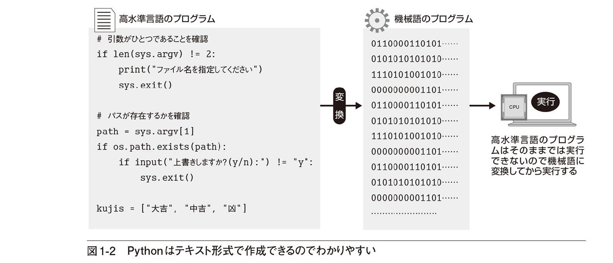
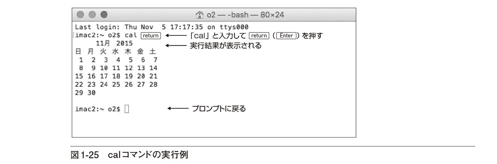
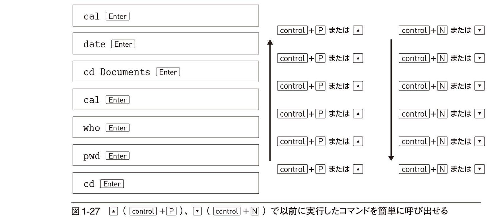
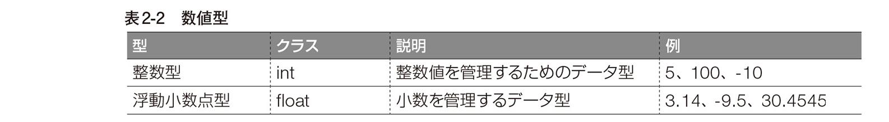
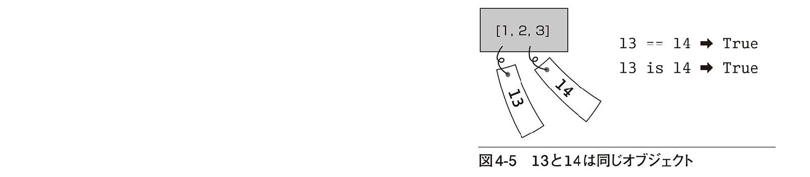
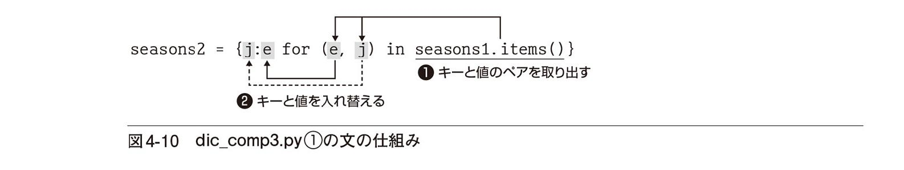

| 基礎Python 基礎シリーズ | |
| 大津 真 | |
| 株式会社インプレス (2016) | |
●本書の内容は、2016年1月の情報に基づいています。記載したURLやサービス内容などは、予告なく変更される可能性があります。
●本書の内容によって生じる直接的または間接的被害について、著者ならびに弊社では一切の責任を負いかねます。
●Apple、Appleロゴ、Mac、Mac OSは、Apple Inc. の米国およびその他の国における登録商標または商標です。
●Microsoft および Windows は、米国 Microsoft Corporation の、米国およびその他の国における登録商標または商標です。
●本書中の社名、製品・サービス名などは、一般に各社の商標、または登録商標です。本文中にⒸ、Ⓡ、™は表示していません。
はじめに
Pythonプログラミングの世界へようこそ！本書で解説するPythonは現在最も注目を集めているプログラミング言語のひとつです。プログラミング言語の人気度の目安となるPYPL（http://pypl.github.io/PYPL.html）では、2016年1月の時点でJavaに続いて2位に位置していることからも、その人気のほどが伺えるでしょう。
その大きな理由として、Pythonがパワフルなオブジェクト指向のスクリプト言語でありながら、わかりやすく、すっきりしたプログラムを作成可能であることがあげられます。文法もシンプルで、これからプログラミングを始める方にも最適な言語です。
また、パワーユーザーにとっては、インターネットで公開されているさまざまなモジュールを追加することにより、機能を自由に拡張していける点も魅力です。もちろん、商用利用も可能なオープンソースライセンスとして公開されているため、誰でも自由に使用できます。Pythonプログラミングの学習に必要なのはPython本体のほかにパソコンとエディタ、そして、みなさんのやる気のみです。
現在Pythonは、Python 2.x系からPython3.x系への移行時期にあります。Python 3.xでは、さまざま機能強化が行われ、さらに標準の文字コードがUnicode（ユニコード）ベースに変更され、日本語も容易に扱えるようになったことから、日本においてもさらなる普及が期待されるでしょう。
本書は、プログラミングの初心者を対象にしたPython 3の入門書です。変数の取り扱いから、リスト、タプルといったPython固有のデータの操作、制御構造や関数などについて具体的でかつ短いサンプルを多数提示しながら、初心者でも基礎から学んでいけるように配慮したつもりです。また、インデントでブロックを表現する点など、ほかのメジャーな言語と比べてユニークな部分も丁寧に説明しています。
前半部分で基本を説明したあとは、ファーストクラス・オブジェクトとしての関数の活用方法、オリジナルのクラスの作成などといった多少高度な項目を丁寧に説明していきます。
読者の皆様にとって、本書がPythonプログラミングのすばらしさ、おもしろさを実感し、オリジナルのプログラムを作成する手助けとなればと願います。
2016年春 著者記す
本書の読み方
■対象読者
本書は、プログラミングの初心者を対象に、Pythonのプログラミング方法を解説しています。本書を読み進めるにあたって、プログラミングの前提知識は必要ありません。WindowsあるいはMac/Linuxの基本的な操作ができれば十分です。
ただし、本書では、テキストベースの実行環境でPythonの機能を確認します。テキストベースの実行環境としては、Windowsではコマンドプロンプト（P28）、Mac/Linuxではターミナル（P39）を使用します。いずれも必要な機能や使い方は本書中で説明しています。最初のうちは多少とまどうかもしれませんが、本書の説明に従って、何度もタイプしていくうちに慣れていくでしょう。
また、Pythonプログラムの作成にはテキストエディタが必要になります。エディタとはテキストファイルの作成に特化したアプリケーションです。Windowsでは「メモ帳」、OS Xでは「テキストエディット」といったエディタが標準搭載されています。それらを使用してソースファイルを記述することも可能です。本書では、より高機能なエディタとしてAtomエディタを紹介しています（P23）。
■本書の構成
Chapter 1 Pythonプログラミングを始めるための予備知識
導入として、プログラミング言語とはどのようなものか、プログラミング言語Pythonはどのような特徴を持っているかなどについて解説します。次に、Pythonのインストール方法、コマンドラインの使い方、Pythonのインタラクティブモードなどについて、WindowsとMac/Linuxの場合に分けて説明します。コマンドラインでの操作は難しいものではありませんが、これ以降の学習に必要なのでしっかりマスターしましょう。
Chapter 2 Pythonの基礎を学ぼう
実際に簡単なソースプログラムを作成し実行しながら、値を名前でアクセスできるようにする変数の取り扱い、文字列、数値、リスト、タプルといったデータ型など、Pythonプログラミングの基礎について学んでいきます。また、標準ライブラリに用意されている便利なモジュールの使い方、クラスからインスタンスを作成しメソッドを実行する方法なども学びます。いずれも、Pythonプログラミングを学んでいくうえでの基本中の基本となりますので、しっかりマスターしておきましょう。
Chapter 3 プログラムの流れを変えたり処理を繰り返したりする
プログラムは必ずしも先頭から順に進んでいくわけではありません。多くの場合、同じ処理を繰り返したり、あるいは条件によって分岐したりといった処理が行われます。そのようなプログラムの流れのことを「制御構造」と呼びます。制御構造によって、膨大なデータを一定の条件のもとに自動処理していくことが可能になります。本章では、条件判断を行うif文、if～else文、値を比較する比較演算子、処理を繰り返し実行するfor文、while文などの制御構造について学びます。
また、本章の最後では、プログラムの実行中に発生するエラーである例外の処理についても説明します。
Chapter 4 組み込み型の活用方法を理解しよう
Pythonの標準ライブラリに含まれる組み込み型である文字列、リスト／タプル、辞書、セットの活用方法について解説します。特定の文字を取り出す、文字を検索する、文字列を埋め込む、リストやタプルの要素を取り出す、検索する、リストの要素を変更、追加、削除、ソートする、リストを利用してコマンドラインから引数を受け取るといった、文字列やリスト要素に対するさまざまな操作を学んでいきます。また、本章では、キーと値のペアでデータを管理する辞書の使い方、重複を持たない要素を管理する集合や、内包表記でリストや辞書を生成する方法なども説明します。本章の内容をマスターすれば、文字や複数のデータをさまざまな方法で処理（プログラミング）できるようになります。
Chapter 5 オリジナルの関数を作成する
Pythonの標準ライブラリにはさまざまな関数が用意されていますが、独自の関数を作成することもできます。本章では、オリジナルの関数を定義してそれを使用する方法について説明します。変数のスコープ、任意の数の引数を受け取る可変長引数、lambda式による無名関数、関数を定義するときに必要となる知識について、実例を示しながら解説していきます。また、リストの要素を関数を利用して処理する方法などについても学びます。内容が少し難しくなってきますが、関数を使いこなせるようになるとプログラミングの幅が格段に広がります。
Chapter 6 テキストファイルの読み書きを理解しよう
テキストファイルを読み込む方法と、文字列をファイルに書き出す方法について説明します。なお、Pythonではバイナリファイルも扱えますが、ここではテキストファイルの操作に絞って解説します。Chapter 5までの内容が理解できていれば、それほど難しいことはないでしょう。
Chapter 7 オリジナルのクラスを作成する
オブジェクト指向言語Pythonは、ひな形となるクラスから実際のオブジェクト（インスタンス）を生成できます。Pythonの標準ライブラリにはさまざまなクラスをまとめたモジュールが用意されていますが、独自にクラスを定義することこもできます。本書最後のChapterでは、オリジナルのクラスの定義方法、クラスを継承して新たなクラスを定義する方法、クラスや関数を記述したファイルをモジュールとして扱う方法などを説明します。
■動作確認環境
本書の記述やサンプルプログラムは次の動作環境で確認しています。
・Python 3.5.0
・オペレーティングシステム：Windows 10、OS X 10.11 El Capitan、Ubuntu 14.04 LTS
■本書のサンプルコード
本書中に LIST マークが付いているプログラムは、サンプルファイルが用意されています。
LIST （このマークの付いているプログラムはダウンロードできる）filter1.py
def larger_5(inch):
return inch > 5
inches = [9, 5.5, 6, 4, 5, 6.5, 10]
cms = []
for inch in filter(larger_5, inches):
cms.append(inch * 2.54)
print(cms)
サンプルファイルは下記よりダウンロードできます。
http://book.impress.co.jp/books/1115101060
■ Mac/LinuxのターミナルとWindowsのコマンドプロンプトの相違について
Mac/LinuxのターミナルとWindowsのコマンドプロンプトでは、キーの表記や、コマンド名などが多少異なります。その都度両方を並記すると煩瑣になるため、本書では、以下の基準で統一して表記しています（Chapter 1、2でも説明しています）。なお、Linuxでは使用しているシェルによって表記が異なりますが、本文中の表記に読み替えてください。
●プロンプト記号は「$」で統一
Macのターミナルのプロンプト記号は「$」、Windowsのコマンドプロンプトのプロンプト記号は「>」です。本書では「$」で統一して表記しています。Windows の場合は、プロンプト記号を「$」に読み替えてください。
また、プロンプトに表示されるカレントディレクトリは省略しています。
Windows のプロンプト記号
C:￥Users￥o2￥Documents>
Mac のプロンプト記号
imac2:Documents o2$
本書の表記
$
●コマンドの実行キーはで統一
コマンドの実行キーはMacでは、WindowsやLinuxではですが、で統一して表記しています。
●Python 3のコマンド名は「python3」で統一
Python 3のコマンド名は、Windowsでは「python」、Macでは「python3」ですが、本書では「python3」で統一して表記しています。
Windowsのプロンプト記号
> python showYear2.py
Macのプロンプト記号
$ python3 showYear2.p
本書の表記
$ python3 showYear2.py
実行キーは で統一
Python 3 のコマンド名は「python3」で統一
Chapter1
Python プログラミングを始めるための予備知識
Pythonプログラミングの世界へようこそ！
このChapterでは、Python 言語の概要と、開発環境のインストールやインタラクティブモードでの実行方法について解説します。
1.1 Pythonとはどんな言語だろう
プログラミング言語とは？／Pythonはオブジェクト指向言語／ Pythonはシンプルなスクリプト言語／ Pythonプログラミングを始めるために
1.2 Pythonのインストールとコマンドプロンプトの使い方（Windows編）
WindowsにPython 3をインストールする／コマンドプロンプトを起動してコマンドを実行する／コマンドプロンプトの基本的な使い方
1.3 Pythonのインストールとターミナルの使い方（Mac/Linux編）
MacにPython 3をインストールする／ LinuxにPython 3をインストールする／ターミナルを起動してコマンドを実行する／ターミナルの基本的な使い方
1.4 Pythonをインタラクティブモードで実行する
インタラクティブモードで起動する／簡単な計算をしてみよう／演算の優先順位／引数を表示するprint( )関数／文字列はダブルクォーテーション「"」で囲む／数値と文字例では型が異なる
これから学ぶこと
●Pythonの概要について理解します。
●Pythonをパソコンにインストールします。
●コマンドラインの基本的な使い方を練習します。
●Pythonをインタラクティブモードで起動し簡単なコマンドを実行します。
●インタラクティブモードを電卓のように使う方法を学びます。
●文字列と数値の相違を理解します。
Pythonとはどんなプログラミング言語でしょう？ オブジェクト指向とは？ Pythonのプログラミングを始めるにあたって必要なものは？ どうやって実行するの？ まずはそんな素朴な疑問にお答えしていきましょう。
1.1 Pythonとはどんな言語だろう
本書で学ぶPythonは、現在最も人気の高いプログラミング言語のひとつです。ソースプログラムがオープンソースとして公開され、誰もが無償で入手できます。本節では、まずコンピュータ・プログラミングの基礎的な事柄について説明し、それを踏まえてPythonの特徴を紹介します。
プログラミング言語とは？
Pythonは、「コンピュータ・プログラム」（以下プログラム）を記述するためのプログラミング言語のひとつです。たとえば、WindowsやOS X（Mac）といったOS（基本ソフト）や、ワープロなどのアプリケーションもプログラムです。コンピュータ本体や周辺装置であるハードウエアに対して「ソフトウエア」と呼ばれたりもします。
プログラムを記述するための言語のことを「プログラミング言語」といいます。言語といってもコンピュータと直接会話できるわけではありません。コンピュータを動かすための指令を記述したようなものというイメージでとらえるとよいでしょう。
■機械語と高水準言語
コンピュータはさまざまな部品から構成されますが、その中核部分となるのは「CPU」（Central Processing Unit）です。日本語では「中央処理装置」などと訳され、演算やデータ処理を担当します。CPUにはさまざまな種類がありますが、たとえばパソコンではIntel社のCore i7やCore i5といったCoreプロセッサ・ファミリが広く普及しています。
さて、プログラムとはCPUへの指令を記述したものですが、CPUが直接理解できるのは「機械語」（マシン語）と呼ばれる言語だけです。機械語のプログラムは0と1の並びだけで構成されています。黎明期のプログラムは機械語（もしくはそれに近いアセンブリ言語）で記述する必要がありましたが、プログラムの規模が大きくなっていくと、人間が直接理解するのは困難になってきます。また、マシン語はCPUファミリによって異なるため、システムが異なれば記述し直さなければなりません。
そのため、現在では、人間にとってわかりやすいテキスト形式の「高水準言語」（あるいは高級言語）と呼ばれる種類のプログラミング言語でプログラムを作成するのが一般的です。もちろんPythonも高水準言語の仲間です。

■ コンパイラ方式とインタプリタ方式
高水準言語で記述されたプログラムを「ソースプログラム」、それを保存したファイルを「ソースファイル」と呼びます。それに対して、機械語のプログラムを「オブジェクトプログラム」、それを保存したファイルを「オブジェクトファイル」といいます。
高水準言語で記述されたソースファイルは、何らかの方法でCPUの理解できる機械語に変換する必要があります。その方式には、「コンパイラ方式」と「インタプリタ方式」があります。
コンパイラ方式は、「コンパイラ」と呼ばれるソフトウエアで「コンパイル」という処理を行って、ソースファイルを機械語のオブジェクトファイルに変換しておく方式です。
それに対して、インタプリタ方式のほうは、「インタプリタ」と呼ばれる種類のソフトウエアにより、ソースファイルの内容を順に解釈しながら実行する方式です。
次に、コンパイラ方式とインタプリタ方式の主な長所／短所をまとめておきます。
本書で取り上げるPythonはインタプリタ型の言語です。ソースファイルを修正してからすぐに結果を確認できるので、手軽にプログラミングの学習を始められます。
Pythonはオブジェクト指向言語
Pythonは、「オブジェクト指向言語」に分類されるプログラミング言語です。「オブジェクト」（object）とは「物、物体」というような意味ですが、オブジェクト言語は操作対象を「物」として操作を行います。オブジェクトには、「データ」と「処理」があります。「処理」のことを「メソッド」と呼びます。
■オブジェクトはクラスをもとに生成される
もちろんこれだけでは何のことか意味不明だと思いますので具体例を示しましょう。たとえば、電池で動くおもちゃのロボットをオブジェクトと考えてプログラムを作成するとします。データとしては「色」や「名前」などが、メソッドとしては「こんにちはのあいさつをする」「前へ動く」などが思いつくでしょう。
オブジェクトの設計図のようなものを「クラス」と呼びます。そのクラスをもとに実際のオブジェクトが生成されます。生成されたオブジェクトのことを「インスタンス」と呼びます。また、Pythonではデータとメソッドを合わせて「アトリビュート」（属性）と呼びます。
ここで登場した、クラスとインスタンス、およびメソッドとアトリビュートという用語は、オブジェクト指向言語において重要な役割を果たすものなので、頭の片隅に入れておきましょう。
■オブジェクト指向言語はプログラムの再利用が簡単
Pythonに限らず、最近主流のプログラミング言語のほとんどはオブジェクト指向の要素を取り入れているといっても過言ではありません。その最大の要因のひとつが、プログラムの再利用が簡単に行えるという点です。既存のクラスの機能を引き継いで、新たなクラスを作成できるのです。この機能のことを「継承」といいます。
たとえば、先ほどのRobotクラスのアトリビュートを引き継いで、新たに「さよならのあいさつをする」や「うしろに動く」というメソッドを追加したUltraRobotクラスを定義するといったことが可能です。
なお、Pythonにはすべてのクラスの祖先となる「object」というクラスがあります。別の言い方をすると、Pythonにおけるすべてのクラスは、objectクラス、もしくはobjectクラスから派生したクラスを継承します。
Pythonはシンプルなスクリプト言語
Pythonは「スクリプト言語」というタイプにも分類されます。「スクリプト」（script）とは、日本語にすれば「台本」とか「脚本」といった意味ですが、プログラミングの分野では「短いプログラム」といった意味合いで使用されます。スクリプト言語とは、シンプルで簡易にプログラミングを行える言語と考えるとよいでしょう。代表的なスクリプト言語にはJavaScriptやPHPなどがあります。また、スクリプト言語で作成したプログラムのことを「スクリプト」と呼ぶことがあります。
みなさんは、オブジェクト指向言語というとJava言語を思い浮かべる方も多いと思います。Javaが本格的なオブジェクト指向言語なのに対して、スクリプト言語でもあるPythonではより短い記述が可能です。次に、単に画面に「こんにちは」と表示するプログラムをJavaとPythonで記述した例を示します。
Javaプログラムの例
class Hello {
public static void main (String args[]){
System.out.println("こんにちは");
}
}
Pythonプログラムの例
print("こんにちは")
Pythonのプログラムのほうがはるかにシンプルです。同じ処理にJavaでは5行が必要なのに対して、Pythonではたった1行で済むのです。
■Pythonではインデントが重要
Pythonのプログラムにおいて特徴的なのが「インデント」の使い方です。インデントとは、字下げのことですが、多くの高水準言語では、プログラムを読みやすくするために、インデントを行います。ただし、たいていのプログラミング言語では、インデントは単に人間がプログラムを読みやすくするための配慮です。つまり、文法的にはインデントはなくても問題ありません。プログラムの処理のまとまりのことを「ブロック」といいますが、たとえば、Javaの場合には「{ }」でブロックを表しますが、インデントはあってもなくても動作します。
それに対して、Pythonの場合にはインデントによってブロックを表すため、正しくインデントを行わないとエラーになります。
ワープロなどと同じく、インデントはタブ記号あるいはスペースなどで行いますが、Pythonでは「半角スペース4つ」で1段階のインデントを表すことが推奨されています。見た目は同じでもスペースによるインデントとタブ記号によるインデントを混在させると意図しない動作になるので注意してください。
Pythonプログラミングを始めるために
続いてPythonプログラミングを始めるために、有益な情報源やオススメのエディタなどの予備知識についまとめておきましょう。
■Pythonのバージョンと情報源について
現在主流のPythonのバージョンは、バージョン2系とバージョン3系に大別されます。現在はバージョン3系のPython 3への移行時期です。Python 3 ではかなりの機能拡張、仕様変更が行われたため、バージョン2系のPython 2のプログラムとは互換性がありません。
本書ではPython 3について解説します。Python 3では文字列の内部コードとしてユニコードが標準となり、日本語など英語圏以外の言語の扱いが簡単になりました。
●Pythonの情報源
Pythonのオフィシャルサイトは以下のURLです。
https://www.python.org
「Documentation」タブをクリックするとさまざまなドキュメントにアクセスできます。このとき、ドキュメントはPython 3系の「Python 3.x Docs」とPython 2系の「Python 2.x Docs」に別れて用意されているので注意してください。
Pythonの日本語ドキュメント
オフィシャルサイトの内容はすべて英語ですが、「Pythonドキュメント日本語訳プロジェクト」によるドキュメントが以下のサイトで閲覧できます。
http://docs.python.jp/3/
■Pythonプログラミングに必要なもの
Pythonプログラムを記述して実行するためには次のものが必要です。
●パソコン
OSは、Windows、OS X（Mac）、Linuxなどが利用可能です。
●Python本体
次節で説明しますが、Python本体は、オフィシャルサイトからダウンロードできます。いろいろなソフトウエア部品をまとめたものを「ライブラリ」といいます。Pythonのインストーラには、Pythonインタプリタのほか、多くのモジュールまとめた標準ライブラリが含まれています。
●テキストエディタ
ソースプログラムを作成するためにはテキストエディタが必要です。Python 3のソースファイルは、文字エンコーディングをUTF-8として記述することが推奨されているので、少なくともUTF-8が正しく取り扱えるエディタが必要です。
■オススメのエディタは？
Pythonプログラムの作成には、テキストエディタ（以下エディタ）が必要になります。エディタとはテキストファイルの作成に特化したアプリケーションです。Windowsでは「メモ帳」、OS Xでは「テキストエディット」といったエディタが標準搭載されています。それらを使用してソースファイルを記述することも可能ですが、プログラムがある程度の規模になってくると役不足な感が否めません。
現在では、有償もしくはフリーで高機能なエディタが多数あります。すでに、使い慣れたものがあればそれを使用してかまいませんが、Pythonプログラムの作成に使用するには、少なくとも次の2点を満たしている必要があります。
・文字エンコーディング「UTF-8」で保存可能
・柔軟なインデント設定が可能
筆者のオススメは、人気急上昇中のオープンソースのエディタであるAtomエディタです。Windows、Mac、Linux用のインストーラが用意され、以下のWebサイトからダウンロードできます。
https://atom.io
Atomエディタには、さまざまなプログラミング言語用の設定が標準パッケージとして多数用意されています。Python用のパッケージも標準搭載されていて、キーワードによるテキストの色分けや、候補の表示など、ソースファイルの作成に便利なさまざまな機能が用意されています。
エディタのソフトタブとハードタブ
Pythonのプログラムではインデント（字下げ）が重要です。インデントによって一連の処理のまとまりであるブロックを表すからです。インデントには、タブ記号、あるいは複数の半角スペースを使用しますが、プログラム内でそれらが混在すると不具合が起こりやすいため、統一しておく必要があります。
Pythonプログラムでは、半角スペース4つによるインデントが主流です。したがって、2段階のインデントでは半角スペース8つ分となります。
もちろん、インデントを行うたびに半角スペースを4つタイプするのは面倒です。そのため最近の高機能エディタではTabキーを押すと、タブ記号によるインデントを行うか、スペースによるインデントを行うかを選択できます。前者を「ハードタブ」、後者を「ソフトタブ」と呼びます。したがって、Pythonプログラムを作成するには半角スペース4つ分のソフトタブに設定するとよいでしょう。
Atomエディタの場合、「Preferences」（Macの場合「Atom」メニューから「Preferences」を選択、Windowsの場合「File」メニューから「Settings」を選択）の「Settings」→「Editor Settings」で「Tab Type」を「Auto」、「Soft Tabs」をチェック、「Tab Length」を「4」に設定します。
また、「Preferences」の「Packages」→「language-python」→「Settings」の「Python Grammar」で「Tab Length」が「4」になっていることを確認してください。
これで新規に作成したPythonファイルでは、Tabキーを押すごとに半角スペース4つのインデントが行えます。
1.2 Pythonのインストールとコマンドプロ1.2 ンプトの使い方（Windows編）
この節では、WindowsにPythonの開発環境をインストールする方法について説明します。そのあとで、Pythonプログラムの実行に使用する、テキストベースの実行環境であるコマンドプロンプトの使い方について説明しましょう。
WindowsにPython 3をインストールする
本稿執筆時点でのPython 3の最新版はバージョン3.5.0です。Windows 10を例に、そのインストール方法を説明しましょう。
❶Pythonのオフィシャルサイト（https://www.python.org）にアクセスし、「Downloads」にマウスカーソルを合わせると表示されるメニューから「Download for Windows」の下部の「Python 3.～」を選択します。
❷ダウンロードしたインストーラを起動します。「Add Python 3.～ to Path」をチェックし、「Install Now」をクリックします。
❸コンピュータの変更を求めるダイアログボックスが表示されるので「はい」をクリックするとインストールが開始されます。
❹次のようなダイアログボックスが表示されればインストールは完了です。
32ビット版と64ビット版
標準でダウンロードされるのは32ビット版です。64ビット版のOSを使用している場合、64ビット版をダウンロードすることもできます。それには「Downloads」タブをクリックし、メニューから「Windows」をクリックします。表示される一覧から「Windows x86-64executable installer」を選択します。
コマンドプロンプトを起動してコマンドを実行する
現在では、コンピュータの操作といえば「GUI（Graphical User Interface）」が主流ですが、テキストをキーボードからタイプしてコマンドを入力するような実行環境を「CUI（Character User Interface）」あるいは「コマンドライン」、「CLI（Command Line Interface）」などと呼びます。Windowsには標準で「コマンドプロンプト」というCUI環境が用意されています。Pythonプログラムの実行はさまざまな方法で行えますが、本節ではコマンドプロンプトを基本に解説します。
ここではコマンドプロンプトになじみがないユーザーのために、基本的な使い方を説明しておきましょう。
■コマンドプロンプトを起動する
コマンドプロンプトを起動するには、画面左下のWindowsメニューを右クリックします。表示される一覧から「コマンドプロンプト」を選択します。
「C:￥Users￥o2>」と表示されているのは「プロンプト」と呼ばれるもので、現在コマンドを受けつけられる状態になっていることを示します。
プロンプトに表示されている文字列は、現在自分がいるディレクトリを表しています。これを「カレントディレクトリ」と呼びます。Windows 10でコマンドプロンプトを起動した状態では、ローカルディスク（Cドライブ）の「Users」ディレクトリの下のユーザー名をもとにした文字列のディレクトリがカレントディレクトリになります。
ドライブ名とディレクトリ名の区切りには「:」、ディレクトリの区切りには「¥」が使われることに注意してください。
「ディレクトリ」と「フォルダ」
「ディレクトリ」と「フォルダ」という用語は同じ意味になります。フォルダはデスクトップ、つまり机の上にあるファイルのフォルダをイメージして付けられたよりわかりやい名称です。多くの場合、コマンドプロンプトのようなCUI環境ではディレクトリ、デスクトップ環境ではフォルダという呼び方が使われます。
■コマンドを実行する
試しにプロンプトに続いて「cd （） 」としてみましょう。するとコマンドの実行結果として、現在自分がいるディレクトリである「カレントディレクトリ」が表示され、再びプロンプトが表示されます。
実行結果はプロンプトの「>」より前の部分と同じですね。
C:¥Users¥ユーザー名
「C:¥Users¥ユーザー名」ディレクトリは、エクスプローラでは「Cドライブ」→「ユーザー」フォルダ→「ユーザー名」フォルダに対応します。
■コマンドプロンプトを終了する
コマンドプロンプトを終了するにはexitコマンドを実行します。あるいは、ウィンドウ右上の×ボタンをクリックしてウィンドウを閉じてもかまいません。
C:￥Users￥o2> exit
コマンドプロンプトの基本的な使い方
続いて、目的のファイルやディレクトリまでの道筋である「パス」の指定方法について説明します。さらに、ディレクトリの内容を一覧表示するコマンド、ディレクトリ間を移動するコマンドなど、基本的なコマンドの操作方法とあわせて紹介していきます。
■絶対パスと相対パス
パスの指定方法は、「絶対パス」と「相対パス」の2種類に大別されます。絶対パスはドライブ名（「C:」など）のあとに、階層構造の先頭を表す「￥」記号を記述し、そのうしろにディレクトリもしくはファイルを順に「￥」で区切って指定する方法です。つまりプロンプトに表示されているパスは絶対パスです。
一方、相対パスはカレントディレクトリから指定する方法です。
たとえば、「C:￥Users￥o2」がカレントディレクトリの場合、その下の「Documents」ディレクトリ（エクスプローラでは「ドキュメント」フォルダ）のパスを絶対パスで指定するには次のようにします。
絶対パスによる指定
階層構造の頂点の「¥」
↓
C:￥Users￥o2￥Documents
↑ ↑
ドライブ名 ディレクトリの区切りの「¥」
カレントディレクトリからの相対パスで指定するには次のようにします。
相対パスによる指定
Documents
■ディレクトリの一覧を表示するdirコマンド
ディレクトリ内のファイルやディレクトリの一覧を表示するにはdirコマンドを使います。プロンプトに続いて「dir」とタイプしてみましょう。
C:￥Users￥o2>dir
ドライブ C のボリューム ラベルは ローカルディスク です
ボリューム シリアル番号は 7CB1-C5A2 です
ファイルやディレクトリの一覧が1行ずつ表示されます。3つ目の欄に「<DIR>」と表示されているのがディレクトリです。ファイルの場合には4 つ目の欄にサイズが表示されます。
一覧の最初の2 行には「.」と「..」が表示されていますが、これらは実際のディレクトリではありません。ピリオド「.」は自分自身のディレクトリ、「..」（ピリオド「.」ふたつ）はひとつ上のディレクトリを示す記号です。一覧には必ず表示されますが気にしなくてかまいません。
また、「.android」のように、先頭がピリオド「.」で始まるファイルやディレクトリは、エクスプローラ上ではデフォルトで不可視になります。
大文字と小文字は区別されない
Windowsのコマンドプロンプトでは大文字と小文字は区別されません。「dir」は「DIR」としても同じです。
■コマンドに引数を渡す
コマンドに渡す何らかの値のことを「引数」と呼びます。コマンドによって受け取れる引数の数が異なります。コマンドと引数、および引数どうしの区切りはスペースになります。
引数の渡し方
コマンド名 引数1 引数2 ....
たとえば、dirコマンドにディレクトリを指定すると、そのディレクトリの内容が表示されます。次に、カレントディレクトリの下のPicturesディレクトリの一覧を表示する例を示します。
C:￥Users￥o2>dir Pictures
ドライブ C のボリューム ラベルは ローカルディスク です
ボリューム シリアル番号は 7CB1-C5A2 です
C:￥Users￥o2￥Pictures のディレクトリ
2015/11/01 13:27 <DIR> .
2015/11/01 13:27 <DIR> ..
2015/05/14 22:05 <DIR> Camera Roll
2013/07/18 21:18 <DIR> cubase
～略～
0 個のファイル 0 バイト
13 個のディレクトリ 279,537,446,912 バイトの空き領域
■コマンドのオプションを指定する
修正日時などの詳細な情報が不要で、単にファイル名の一覧だけを見たい場合には、「dir」のあとにスペースに続いて「/w」を付けて実行します。これでファイル名とディレクトリ名のみが一覧表示されます。
C:￥Users￥o2>dir /w
ドライブ C のボリューム ラベルは ローカルディスク です
ボリューム シリアル番号は 7CB1-C5A2 です
C:￥Users￥o2 のディレクトリ
[.] [..] [.android]
[.AndroidStudio1.2] .appletviewer [.gradle]
～略～
2 個のファイル 223 バイト
21 個のディレクトリ 279,537,442,816 バイトの空き領域
スイッチ
「dir /w」の「/w」のようなコマンドに与えるオプションを「スイッチ」と呼びます。
■ディレクトリを移動するcdコマンド
先ほど使用したcdコマンドは実際にはカレントディレクトリを移動するコマンドです。引数にディレクトリのパスを指定すると、それがカレントディレクトリとなります。
カレントディレクトリの変更
cd 移動先のディレクトリのパス
引数のパスは、相対パス、絶対パスのどちらで指定してもかまいません。次に、コマンドプロンプトを開いた状態で、相対パスを指定してその下のPicturesディレクトリに移動する例を示します。
C:￥Users￥o2>cdPictures ●──相対パスで指定
C:￥Users￥o2￥Pictures> ●──「Pictures」ディレクトリに移動した
絶対パスで移動するには次のようにします。
C:￥Users￥o2>cdC:￥Users￥o2￥Pictures ●──絶対パスで指定
C:￥Users￥o2￥Pictures> ●──「Pictures」ディレクトリに移動した
両者を比べてみるとわかるように、すぐ下のディレクトリに移動するときは相対パスのほうが簡単です。
■ひとつ上のディレクトリに移動するには
「..」は（ピリオド「.」ふたつつなげる）はカレントディレクトリのひとつ上のディレクトリです。したがって、ひとつ上のディレクトリに移動するには、パスに「..」を指定すると簡単です。これはよく使いますので確実に覚えましょう。
たとえば、「C:￥Users￥o2￥Documents」にいるときに、ひとつ上の「C:￥Users￥o2」ディレクトリに戻るにはどうしたらよいでしょう。もちろん、「cd C:￥Users￥o2」のように絶対パスで指定してもよいのですが、タイプする量が多くて面倒です。このような場合に「..」を使うと簡単に移動できます。
C:￥Users￥o2￥Documents>cd .. ●──パスに「..」を指定
C:￥Users￥o2> ●──ひとつ上のディレクトリに移動した
■スペースを含むディレクトリを指定するには
スペースを含むファイルやディレクトリを指定する場合には、パスをダブルクォーテーション「"」で囲む必要があります。たとえば、カレントディレクトリが「C:￥Users￥o2」のときに、その下の「Documents」→「Test Files」ディレクトリに移動するには次のようにします。
C:￥Users￥o2>cd "Documents￥Test Files" ●──ダブルクォーテーション「"」で囲む
C:￥Users￥o2￥Documents￥Test Files>
パスを簡単に入力する
エクスプローラのファイルやフォルダを、コマンドプロンプトの上にドラッグ＆ドロップすると、カーソルの位置にファイルやフォルダの絶対パスを貼り付けられます。たとえば、「cd 」（「cd」のあとに半角スペースを入れる）までタイプしてから、そのあとに目的のディレクトリをドラッグ＆ドロップして を押せば、目的のディレクトリに簡単に移動できます。
■Tabキーによるディレクトリ名やファイル名の補完機能
コマンドプロンプトには、最初の数文字をタイプしてを押すと残りを補完してくれる機能が用意されています。補完機能は、長いディレクトリ名やファイル名を入力する場合に便利です。たとえば、Documentsディレクトリを指定するには最初の数文字をタイプしてを押します。するとディレクトリ名が自動的に補完されます。
C:￥Users￥o2>cd Do ●──最初の数文字をタイプしてTabキーを押す
C:￥Users￥o2>cd Documents ●──Documentsと補完される
なお、スペースを含むディレクトリやファイルを補完すると、自動的にダブルクォーテーション「"」で囲まれます。
C:￥Users￥o2>cd Documents￥Teo
C:￥Users￥o2>cd "Documents￥Test Files" ●──ダブルクォーテーション「"」で囲まれる
■以前に実行したコマンドを呼び出す
コマンドの履歴機能を使用すると、前に実行したコマンドを呼び出して実行できます。コマンドプロンプトでを押すと、コマンドをひとつずつさかのぼって表示してくれます。を押すと逆にひとつずつ戻ります。目的のコマンドが見つかったらを押すと実行できます。もちろん修正してから実行することもできます。
■コマンドの一覧と説明を表示する
コマンドプロンプトには多くのコマンドが用意されています。helpコマンドを引数なしで実行すると、コマンドの一覧と簡単な説明が表示されます。
C:￥Users￥o2>help
特定のコマンドの詳細情報は、"HELP コマンド名" を入力してください
ASSOC ファイル拡張子の関連付けを表示または変更します。
ATTRIB ファイルの属性を表示または変更します。
BREAK 拡張 CTRL+C チェックを設定または解除します。
BCDEDIT ブート データベースのプロパティを設定して起動時の読み込みを制御します。
CACLS ファイルのアクセス制御リスト (ACL) を表示または変更します。
CALL バッチ プログラム中から、別のバッチ プログラムを呼び出します。
CD 現在のディレクトリを表示または変更します。
CHCP 有効なコード ページ番号を表示または設定します。
CHDIR 現在のディレクトリを表示または変更します。
～略～
コマンドの情報を表示するには、コマンド名を引数にhelpコマンドを実行します。たとえばcopyコマンドの説明を表示するには次のようにします。
C:￥Users￥o2>help copy
1つまたは複数のファイルを別の場所にコピーします。
COPY [/D] [/V] [/N] [/Y |-Y] [Z] [/L] [/A |B] 送り側 [A |B] [+ 送り側 [A |B] [+ ...]] [受け側 [A | /B]]
送り側 コピーするファイル (複数可) を指定します。
～略～
複数のファイルを追加するときは、受け側に 1 個のファイルを指定し、送り側に複数のファイルを指定します (ワイルドカードを使うか、ファイル 1 + ファイル 2 + ファイル 3 と指定します)。
■pythonコマンドについて
コマンドプロンプトの基本的なコマンドの使い方が理解できたところで、Pythonに話を戻しましょう。WindowsではPythonのインタプリタは「python」というコマンド名でインストールされています。実際のPythonインタプリタの使用方法についてはP48「1.4 Pythonをインタラクティブモードで実行する」以降で説明することにして、ここでは単にPythonのバージョンを表示してみましょう。pythonコマンドを引数に「--version」を指定して実行してください。インストールが正しく行われていればバージョン番号が表示されるはずです。
C:￥Users￥o2>python --version
Python 3.5.0 ●──バージョン番号
これ以降のWindowsのプロンプトの表記
プロンプトに表示されるパスは、使っている人の環境によって異なります。また、ディレクトリの階層が深くなると、プロンプトが長々と表示され、紙面上では見にくくなります。そこで本書ではこれ以降、Windowsのプロンプトを単に「>」で略記することにします。
C:￥Users￥o2>
↓
>
1.3 Pythonのインストールとターミナル1.3 の使い方（Mac/Linux編）
この節ではMac/LinuxにPythonの開発環境をインストールする方法と、Pythonプログラムの実行に使用する、テキストベースの実行環境であるターミナルの使い方について説明します。
MacにPython 3をインストールする
OS X（Mac）にはPython 2が標準でインストールされています。本書ではPython 3をベースにしていますので、Python 3の最新版をインストールする必要があります。なお、本稿執筆時点での、Python 3の最新版はバージョン3.5.0です。
ここではOS X El Capitanを例に、そのインストール方法について説明しましょう。
❶Pythonのオフィシャルサイト（https://www.python.org）にアクセスし「Downloads」にマウスカーソルを移動し、表示されるメニューから「Download for Mac OS X」の下の「Python 3.～」を選択します。
❷ダウンロードしたインストーラを起動し、指示に従ってインストールを行います。設定はデフォルトのままでかまいません。
インストールが完了すると「Applications」→「Python3.～」フォルダが作成され、PythonのIDLEなど関連ファイルが保存されます。ただし、Python本体は/Library/Frameworks/Python.framework/Versions/3.5/binディレクトリにpython3.xとして保存されます。
LinuxにPython 3をインストールする
LinuxはディストリビューションごとにPython 3のパッケージが用意されています。たとえば、最も人気の高いLinuxディストリビューションのひとつである「Ubuntu」の最新長期安定版「Ubuntu 14.04 LTS」では、標準でPython 2とPython 3がインストールされています。
Python 3を手動でインストールするには次のように実行します。
$ sudo apt-get install python3
[sudo] password for o2:■■■■■ ●──パスワードを入力
ターミナルを起動してコマンドを実行する
現在では、コンピュータの操作といえば「GUI（Graphical User Interface）」が主流ですが、テキストをキーボードからタイプしてコマンドを入力するような実行環境を「CUI（Character User Interface）」あるいは「コマンドライン」などと呼びます。OS XやLinuxには標準で「ターミナル」というCUI環境が用意されています。Pythonプログラムの実行はさまざまな方法で行えますが、本節ではターミナルを基本に解説します。ここではOS Xを例に、ターミナルになじみのないユーザーのために基本的な使い方を説明しておきましょう。
■ターミナルを起動する
OS Xでは、「アプリケーション」→「ユーティリティ」フォルダの「ターミナル」をダブルクリックすると、ターミナルが起動します。
ターミナルでは「シェル」というプログラムが常駐し、ユーザーの入力したコマンドを解釈してシステムの中心部分であるカーネルに伝えます。シェルにはさまざまな種類があり、OS XやLinuxでは「bash」というシェルが標準的に使用されます。
先頭行には最後にログインした日時が表示され、その下に次のような表示があります。これは「プロンプト」と呼ばれるもので、現在コマンドを受けつける状態であることを示しています。コマンドはプロンプトに続いて入力していきます。
「カレントディレクトリ」は現在自分がいるディレクトリです。ユーザーが自由に使用してかまわないディレクトリを「ホームディレクトリ」と呼びます。チルダ「~」は自分の「ホームディレクトリ」を表します。OS Xの場合、「Usersユーザー名」が実際のホームディレクトリです。
ターミナルのウィンドウを開いた状態では ホームディレクトリがカレントディレクトリとなります。
なお、ディレクトリとフォルダは同じ意味と考えてかまいません（P29「ディレクトリ」と「フォルダ」参照）。
■コマンドを実行する
試しに、プロンプトに続いて「cal（） 」としてみましょう。するとcalコマンドの実行結果として、今月のカレンダーが表示され、再びプロンプトが表示されます。

■ターミナルを終了する
ターミナルを終了するにはexitコマンドを実行します。
imac2:~ o2$ exit（）
シェルが終了し、「プロセスが完了しました」と表示されるので、ターミナルのウィンドウを閉じます。
実行キーの表記
本書では、OS X、Linuxの実行キーを で統一して表記します。
ターミナルの基本的な使い方
続いて、目的のファイルやディレクトリまでの道筋であるパスの指定方法を説明しましょう。そのあとで、ターミナルで使用可能なコマンドをいくつか紹介していきましょう。
■絶対パスと相対パス
パスの指定方法には「絶対パス」と「相対パス」の2種類があります。前者はファイルシステムの起点から順にたどっていく指定方法で、後者はあるディレクトリを起点にして表記する指定方法です。
OS XやLinuxなどUNIX系のOSでは、ファイルシステムの階層構造の頂点を「ルート」と呼び、「/」と表記されます。また、ディレクトリ間、およびディレクトリとファイルの間の区切りも「/」が使用されます。
OS Xの場合、ユーザーのホームディレクトリは「Usersユーザー名」になります。したがって、ユーザー名が「o2」の場合、そのホームディレクトリの下の、Documentsディレクトリ（Finderでは「ドキュメント」フォルダ）の下の「sample.txt」ファイルは絶対パスでは次のように表せます。
ホームディレクトリからの相対パスで「sample.txt」を指定すると、次のようになります。
相対パスによる指定
Documents/sample.txt
■ディレクトリの一覧を表示するlsコマンド
OS XやLinuxなどのUNIX系のOSには標準で多くのコマンドが用意されていますが、ここではPythonプログラムの実行に必要な最小限のコマンドだけを紹介しておきます。
カレントディレクトリ内のファイルの一覧を表示するにはlsコマンドを使います。プロンプトに続いて「ls 」とタイプしてみましょう。ホームディレクトリの一覧が表示されます。
imac2:~ o2$ ls
Desktop Library Picturesnew.txt
Documents Movies Public sample.txt
Downloads Music
■コマンドに引数を渡す
コマンドに渡す何らかの値のことを「引数」と呼びます。コマンドによって受け取れる引数の数や種類が異なります。なお、コマンドと引数、および引数どうしの区切りはスペースになります。
引数の渡し方
コマンド名 引数1 引数2 ....
たとえば、lsコマンドの引数にディレクトリを指定すると、そのディレクトリの一覧が表示されます。Publicディレクトリ（Finderでは「パブリック」フォルダ）の一覧を表示するには次のようにします。
imac2:~ o2$ ls Public/
2015 Drop Box photo
AllInOne.pdfbt3.png samples
imac2:~ o2$
■コマンドのオプションについて
引数の中で、コマンドに対する指令のようなものを「オプション」と呼びます。たとえばlsコマンドでは、「-l」オプションを指定して実行すると、それぞれのファイルの変更日時といった詳細情報を表示します。
■cdコマンドでディレクトリを移動する
カレントディレクトリ、つまり現在いるディレクトリを移動するにはcdコマンドを使います。書式は次のようになります。
カレントディレクトリの変更
cd 移動先のディレクトリのパス
移動先のディレクトリのパスは、相対パス、絶対パスのどちらで指定してもかまいません。現在ユーザー「o2」のホームディレクトリにいるときに、その下のDocumentsディレクトリ（Finderでは「ドキュメント」フォルダ）に移動する例を示します。
相対パスによる移動
imac2:~ o2$ cd Documents/ ●──相対パスで指定
imac2:Documents o2$ ●──「Documents」ディレクトリに移動した
絶対パスによる移動
imac2:~ o2$ cdUserso2/Documents/ ●──絶対パスで指定
imac2:Documents o2$ ●──「Documents」ディレクトリに移動した
プロンプトに表示されるディレクトリ
OS Xのプロンプトには絶対パスの最後のディレクトリ名のみが表示されます。
ホームディレクトリに戻る
cdコマンドを引数なしで実行するとホームディレクトリに戻ります。
■カレントディレクトリを確認するpwdコマンド
現在のどのディレクトリにいるかはpwdコマンドを実行するとわかります。
imac2:Documents o2$ pwd
Userso2/Documents ●──カレントディレクトリが表示される
■ひとつ上のディレクトリを表す「..」
ひとつ上のディレクトリに移動するにはパスに「..」（ピリオド「.」ふたつつなげる）を指定すると簡単です。これはよく使いますので確実に覚えましょう。
たとえば、「Userso2/Documents/ 」ディレクトリにいるときに、ひとつ上の「Userso2」ディレクトリに戻るにはどうしたらいいでしょう？ もちろん、「cdUserso2 」のように絶対パスで指定してもいいのですが、タイプする量が多くて面倒ですね。
この場合「..」を使うと簡単に移動できます。
imac2:Documents o2$ cd .. ●──パスに「..」を指定
imac2:~ o2$ pwd ●──pwdコマンドで確認
Userso2 ●──ひとつ上のディレクトリに移動した
なお、上記の例ではUserso2はユーザー「o2」のホームディレクトリです。実際にはcdコマンドを引数なしで実行するとホームディレクトリに戻ります。
imac2:Documents o2$ cd ●──cdコマンドを引数なしで実行
imac2:~ o2$ pwd ●──pwdコマンドで確認
Userso2 ●──ホームディレクトリに移動した
■スペースを含むディレクトリを指定するには
「Sample Files」のようにスペースなどの特殊記号を含むディレクトリを指定する場合には、パスをダブルクォーテーション「"」（もしくはシングルクォーテーション「'」）で囲む必要があります。たとえばホームディレクトリにいるときに、その下の「Documents」→「Sample Files」ディレクトリに移動するには次のようにします。
imac2:~ o2$ cd "Documents/Sample Files" ●──ダブルクォーテーション「"」で囲む
imac2:Sample Files o2$ pwd ●──pwdコマンドで確認
Userso2/Documents/Sample Files
あるいはスペースの前に「╲」を記述します（スペースや特殊文字の前に「╲」を記述して文字そのものとして扱うことを「エスケープする」といいます）。
imac2:~ o2$ cd Documents/Sample╲Files ●──スペースの前に「￥」を記述する
imac2:Sample Files o2$ pwd ●──pwdコマンドで確認
Userso2/Documents/Sample Files
■Tabキーによるディレクトリ名やファイル名の補完機能
長いディレクトリ名やファイル名を簡単に入力するには、による補完機能を使用すると便利です。たとえばDocumentsディレクトリを指定するには最初の数文字をタイプしてを押します。すると「Documents/」が自動的に補完されます。
imac2:~ o2$ cd Doc
↓
imac2:~ o2$ cd Documents/ ●──「Documents/」と補完される
なお、このとき、を押した時点で候補が複数ある場合、もう一度 を押すと候補の一覧が表示されます。たとえば、前述の例で「Do」までタイプして を2度押すと、「Do」で始まるディレクトリもしくはファイルの一覧が表示されます。
$ cd Do
Documents/ Downloads/ ●──「Do」で始まる候補が表示される
ここでさらにタイプを続けて候補を絞り込みを押すと補完されます。
パスを簡単に入力する
OS Xでは、Finderからファイルやフォルダをコマンドプロンプトの上にドラッグ＆ドロップすると、カーソルの位置に絶対パスを貼り付けられます。たとえば、「cd 」までタイプしてから、目的のディレクトリをドラッグ＆ドロップして を押せば目的のディレクトリに簡単に移動できます。
■以前に実行したコマンドを呼び出す
コマンドの履歴機能を使用すると、前に実行したコマンドを呼び出して、実行できます。コマンドプロンプトで、＋（もしくは）を押すと、コマンドをひとつずつさかのぼって表示してくれます。行き過ぎてしまった場合には、＋ （もしくは）を押すとひとつずつ戻ります。目的のコマンドが見つかったらを押すと実行できます。もちろん修正してから実行することもできます。

■python3コマンドについて
ターミナルの基本的な使い方が理解できたところで、Pythonに話を戻しましょう。OS XやUbuntuではPython 3のインタプリタは「python3」というコマンド名でインストールされています（Python 2では「python」というコマンド名でインストールされています）。
実際のPythonのインタプリタの使用方法については、P48「1.4 Pythonをインタラクティブモードで実行する」以降で説明することにして、ここでは単にバージョンを表示してみましょう。python3コマンドを引数に「--version」を指定して実行してください。インストールが正しく行われていればバージョン番号が表示されるはずです。
imac2:~ o2$ python3 --version
Python 3.5.0
これ以降のOS X/Linuxのプロンプトの表記
プロンプトに表示されるホスト名やカレントディレクトリは、使っている人の環境によって異なるので、本書ではこれ以降、OS X/Linuxのプロンプトを単に「$」で略記することにします。
imac2:~ o2$
↓
$
1.4 Pythonをインタラクティブモードで実行する
Pythonには対話形式でプログラムの動きを確認できる「インタラクティブモード」が用意されています。プログラムのソースファイルを作成して実行する方法については次のChapter以降で説明することにして、まずはPythonをインタラクティブモードで実行してみましょう。
インタラクティブモードで起動する
Pythonをインタラクティブモードで起動するには、コマンドラインでPythonコマンドを引数なしで実行します。デフォルトではPython 3のコマンド名は、Windowsでは「python」、OS X/Linuxでは「python3」になります。
Windows の場合
>python
OS X/Linux の場合
$ python3
本書のPython 3のコマンド表記
本書ではこれ以降、Python 3のコマンドの実行を、OS X/Linuxの「$ python3」と表記します。Windowsの場合には「>python」と読み替えてください。
以上で、Pythonがインタラクティブモードで起動しプロンプトとして「>>>」が表示されます。
$ python3
Python 3.5.0 (v3.5.0:374f501f4567, Sep 12 2015, 11:00:19)
[GCC 4.2.1 (Apple Inc. build 5666) (dot 3)] on darwin
Type "help", "copyright", "credits" or "license" for more information.
>>>●──インタラクティブモードのプロンプト
pythonコマンドとpython3コマンドの違いに注意
OS X/Linuxで「python 」とすると、Python 2が起動してしまうので注意してください。
■インタラクティブモードを終了する
インタラクティブモードを終了するには、プロンプトに続いてexit()コマンドを実行します。
>>> exit()
簡単な計算をしてみよう
初期のプログラミングの目的は主に複雑な技術計算を肩代わりさせることでした。Pythonのようなスクリプト言語は、そのような目的で使用されることはあまりありませんが、いろいろな計算を行ってみるのは、プログラミングの第一歩を学ぶのに最適です。
まずは、シンプルな計算を行いながらPythonに用意されているインタラクティブモードの使い方を説明しましょう。インタラクティブモードでは、計算式を入力することにより結果が表示されます。次の例を参考に簡単な足し算や引き算をしてみましょう。なお、後述するクォーテーションで囲まれた文字列以外の文字（次の例では数値や演算子）はすべて半角でタイプします。
>>>4 + 5●──足し算
9
>>>10 - 4●──引き算
6
もちろん小数の数値の計算も行えます。
>>>24.443 - 45.45●──小数の引き算
-21.007
演算記号前後のスペース
「＋」や「－」などの演算記号の前後はスペースを空けてかまいません。プログラムを記述する場合は、前後にひとつずつ半角スペースを入れて見やすくするのが一般的です。
■かけ算は「*」、割り算は「/」
足し算の「+」や引き算の「-」は算数の記号と同じですが、そうでない演算記号もあります。Pythonを含む多くのプログラミング言語では、かけ算の記号には「*」（アスタリスク）を使用します。また、割り算は「/」（スラッシュ）です。
>>>9 * 4●──かけ算
36
>>>13 / 4●──割り算
3.25
■商は「//」、あまりは「%」
整数どうしの計算の場合、割り算の商は「//」（スラッシュ「/」をふたつつなげる）、あまりは「%」で求めることができます。
>>>9 // 4●──割り算の商
2
>>>9 % 4●──割り算のあまり
1
■べき乗は「**」
べき乗は「**」（アスタリスク「*」をふたつつなげる）で計算できます。たとえば、3の4乗は次のように計算できます。
>>>3 ** 4●──34
81
■基本的な算術演算子の種類
次の表に、Pythonに用意されている算術演算で使用する基本的な演算子をまとめておきます。
演算の優先順位
演算子には優先順位があります。算数の時間に習った、かけ算・割り算は、足し算・引き算より優先されるといったルールと同じですね。次の例を見てみましょう。
>>>1 + 4 * 5●──「4 * 5」が優先される
21
この場合、かけ算の「4 * 5」がまず計算されて「20」となり、そのあとで「1 + 20」が計算されるため、結果は「21」となります。
優先順位を変更するには算数と同じく「( )」使用します。「( )」で囲った部分が優先されるわけです。上記の例で「1 + 4」をまず計算するには、その部分を「( )」で囲みます。
>>>(1 + 4) * 5●──「1 + 4」が優先される
21
引数を表示するprint()関数
たいていのプログラミング言語には、与えられた値に対して処理を行い結果を戻す「関数」という機能が用意されています。関数に与える何らかのデータを「引数」、その結果として戻される値のことを「戻り値」といいます。
関数を呼び出すには、関数名のあとに括弧で引数を指定します。
関数の呼び出し
関数名(引数)
Pythonの標準ライブラリには多くの便利な関数が「組み込み関数」として用意されています。組み込み関数を使用するユーザーは、どのような引数を与えると、どのような結果を戻すのかを知っておくだけでよく、関数の中身そのものはブラックボックスのように考えてかまいません。
■print()関数を使用する
ここでは組み込み関数の例として、最も使用頻度の高いprint()関数を紹介します。print()関数は戻り値のない関数で、引数を画面に表示します。
インタラクティブモードで、「2015」といった数値を引数に、print()関数を実行してみましょう。
>>>print(2015)
2015
上記のように引数の「2015」がそのまま表示されます。
なお、引数には計算式を渡すこともできます。たとえば「2015 + 9」を引数にして実行するとその計算結果の2024が表示されます。
>>>print(2015 + 9)
2024
プログラムの実行結果の表示
前述のようにインタクティブモードでは、値や計算式を入力してを押すと結果が表示されますが、実際のプログラムではprint() 関数を使用しないと画面に表示されません。
■複数の引数を渡すには
関数によっては、複数の引数を取れるものもあります。その場合、引数をカンマ「,」で区切って指定します。
関数に複数の引数を渡す
関数名(引数1, 引数2, ....)
前述のprint()関数も、任意の数の複数を取れます。たとえば、print()関数に「2016」「3」「4」の3つの引数を与えて実行するには次のようにします。結果は引数がスペースで区切られて表示されます。
>>>print(2016, 3, 4)
2016 3 4
なお、関数に複数の引数を記述する場合にはカンマ「,」のうしろに半角スペースをひとつ空けると見やすくなります。
print(2016,▯3,▯4)
↑ ↑
半角スペース
インタラクティブモードでも履歴機能を使用できる
コマンドラインと同じくインタラクティブモードでも履歴機能が使用できます。 （）で前後のコマンドを表示できます。
文字列はダブルクォーテーション「"」で囲む
さて、プログラムでは文字の並びである文字列の処理もしばしば行われます。Python 3では、日本語の文字列の処理も問題なく行えます。
Pythonでは、プログラム内に文字列を記述する場合には全体をダブルクォーテーション「"」もしくはシングルクォーテーション「'」で囲みます。両端のクォーテーションは同じでなければなりません。
"こんにちはPython"
もしくは
'こんにちはPython'
print()関数の引数に文字列を渡してみましょう。
>>>print("こんにちはPython")
こんにちはPython
文字列がそのまま画面に表示されます。
■「＋」演算子で文字列を連結する
さて、数値の足し算に使った「+」演算子を文字列に対して使用すると、文字列を連結することができます。
"こんにちは" + "Python" → "こんにちはPython"
"こんにちは"と"Python"を連結してprint()関数で表示するには次のようにします。
>>>print("こんにちは" + "Python")
こんにちはPython
■「*」演算子で文字列を繰り返す
「*」演算子は数値ではかけ算ですが、文字列に使用すると文字列を指定した回数繰り返すことができます。たとえば、アスタリスク「*」を20個表示するには次のようにします。
>>>print("" 20)
********************
数値と文字例では型が異なる
なお、プログラミング言語では個々のデータごとにその種類を示す「型」（Type）があります。たとえば数値は数値型、文字列は文字列型になります。このとき、数値型と文字列型という異なる型の値どうしに「+」演算子を使用するとエラーになります。
次に、「2016」と「"年"」を「+」演算子で接続してprint()関数で出力しようとした例を示します。
>>>print(2016 + "年")
Traceback (most recent call last):
File "<stdin>", line 1, in <module>
TypeError: unsupported operand type(s) for +: 'int' and 'str' ●――①
①の「TypeError」というのが型のエラーが発生したことを示しています。その内容は「int」（整数）と「str」（文字列）を「+」演算子で接続できないというものです。
前述の例を変更し、「2016」という数値を、ダブルクォーテーション「"」で囲って「"2016"」として「+」演算子を使用すると文字列どうしの連結となります。
>>>print("2016" + "年") ●──文字列どうしの接続
2016年
このように、見た目は同じ「2016」であっても、コンピュータの内部では数値と文字列は扱いがまるで異なるという点に注意してください。
数値
2016
文字列
"2016"
型が異なるデータの扱いは言語によって異なる
型が異なるデータの扱いはプログラミング言語によって異なります。たとえば、JavaScriptでは文字列と数値を連結すると数値が文字列に自動変換され、文字列どうしの連結となります。
JavaScript の場合
2016 + "年" ●──JavaScriptではOKで「"2016年"」になる
それに対して、Pythonは型に厳格な言語です。文字列と数値をそのまま連結することはできません。
■数値を文字列に変換するstr()関数
数値と文字列は関数を使用することにより相互変換可能です。たとえば、数値を文字列に変換するには、str()組み込み関数を使用します。
▶関数
str(数値)
数値を文字列に変換して戻す
たとえば、str()関数に数値の「2016」を引数として渡すと文字列の「"2016"」が戻されます。
str()関数を使用して「2016」という数値を文字列に変換して「"年"」と接続し、print()関数で表示するには次のようにします。
>>>print(str(2016) + "年")
2016年
Chapter 1のまとめ
●高水準言語のソースファイルをオブジェクトに変換する方式にはインタプリタ方式とコンパイラ方式があります。
●Pythonはオブジェクト指向のスクリプト言語です。
●Pythonにはバージョン2系とバージョン3系がありますが、本書で解説するのはバージョン3系です。
●Pythonプログラムを実行するためにはコマンドラインの基本的な使い方を覚えておきましょう。
●インタラクティブモードを使用するとPythonのコマンドを簡単に試すことができます。
●Python 3のコマンドは、Windowsでは「python」、Mac/Linuxでは「python3」になります。
●足し算は「＋」、引き算は「−」、かけ算は「*」、割り算は「/」、あまりは「%」、商は「//」、べき乗は「**」を使用します。
●文字列は文字列型、数値は数値型といったように、それぞれの値には型があります。
●「＋」演算子を使用すると文字列を連結できます。
●処理をまとめて名前で呼び出せるようにしたものを関数と呼びます。
●関数に渡す値を引数、関数が結果として戻す値を戻り値といいます。
●print()関数を使用すると引数の値を画面に表示できます。
●数値を文字列に変換するにはstr()関数を使用します。
練習問題
［A］ 次の文が正しい場合は○、間違っている場合は×を記入してください
（ ） 機械語のプログラムは人間にとって理解しやすい
（ ） コンピュータは高水準言語で記述されたプログラムを直接実行できる
（ ） Python はコンパイラ方式の言語である
（ ） インタプリタ方式の言語を実行するにはコンパイラが必要である
（ ） インタプリタ方式と比較すると、たいていの場合コンパイラ方式のほうが実行速度が速い
（ ） クラスに用意された処理のことをメソッドと呼ぶ
［B］ 四則演算に使用するPython の演算子を答えてください。
足し算 （ ）
引き算 （ ）
かけ算 （ ）
割り算 （ ）
［C］ Pythonをインタラクティブモードで起動し、999を55で割ったあまりをprint( ) 関数で表示してください。
［D］ インタラクティブモードで、計算式「1988 + 28」の結果を使用して「西暦2016年」と表示するために空欄 1 2 に適切なものを記述してください。
>>>print("西暦" + 1 (1988 + 28) 2 "年")
Chapter2
Python の基礎を学ぼう
さて、このChapter からが本番です。実際に簡単なソースプログラムを作成し実行しながら、Pythonプログラミングの基礎について学んでいきましょう。
2.1 Pythonプログラムを作成してみよう
Pythonプログラムの作成から実行まで／はじめてのPythonプログラム／Pythonのソースファイルの基本を理解しよう／コメントについて
2.2 変数の取り扱いを理解しよう
変数とは？／変数を使用して計算をする／よく使う値を変数にするとより便利に／標準体重計算プログラムを作成する／キーボードから値を入力するには
2.3 いろいろな組み込み型
数値型について／リテラルの記述方法を理解しよう／ 文字列のリテラルについて／数値と文字列の相互変換／一連のデータを管理するリスト型／タプルはデータを変更できないリスト／タプルとリストの相互変換／オブジェクトのid 番号を調べるには
2.4 モジュールをインポートしてクラスや関数を利用する
標準ライブラリのモジュールをインポートする／クラスからインスタンスを生成する／インスタンスにメソッドを実行する／ from ～ import文を使用してクラスをインポートする／値を戻すメソッドを使用する／ mathモジュールの関数を利用する／乱数を使用する
これから学ぶこと
●Pythonのソースファイルを作成し、実行する方法を学びます。
●値を名前でアクセスできるようにする変数の取り扱いについて学びます。
●文字列、数値、リスト、タプルといったデータ型について理解します。
●標準ライブラリに用意されている便利なモジュールの使い方を覚えます。
●クラスからインスタンスを作成しメソッドを実行する方法を学びます。
いよいよPythonのソースプログラムを作成して動かしてみましょう。Pythonにはいろいろなデータ型が用意されています。データは変数に格納しておくと、何度でも使い回せますし、変更も簡単です。標準ライブラリにモジュールとして用意されている便利なクラスや関数も使ってみましょう。
2.1 Pythonプログラムを作成してみよう
P48「1.4 Pythonをインタラクティブモードで実行する」で紹介したインタラクティブモードは、ちょっとしたプログラムの動きを試したりするのに便利なので、本書ではこれからも何度も登場します。この節では、実際にPythonのソースプログラムを作成して、それをPythonインタプリタで実行する方法について説明しましょう。
Pythonプログラムの作成から実行まで
次に、Pythonのソースプログラムの作成から実行までの基本的な流れを示します。
❶エディタでPythonのソースファイルを記述します。
Pythonのソースファイルの拡張子は「.py」とします。
❷pythonコマンド（もしくはpython3コマンドで）実行します。
pythonコマンド（もしくはpython3コマンド）にソースファイルのパスを指定して実行します。すると、Pythonインタプリタが起動して、ソースファイルに記述されたプログラムが実行されます。
Windows の場合
>python ファイルのパス
OS X/Linux の場合
$ python3 ファイルパス
インタラクティブモードと同じようにソースプログラムの内容に不具合がある場合には、実行時にエラーメッセージが表示されます。その場合、手順❶に戻りエディタで修正してから再実行します。なお、プログラムの不具合のことを「バグ」と呼びます。またバグを修正していく作業のことを「デバッグ」と呼びます。
はじめてのPythonプログラム
それでは、実際にプログラムをソースファイルに記述して、実行してみましょう。手始めに、画面に「ようこそPythonの世界へ」とだけ表示する単純なプログラムを作成してみましょう。
Pythonのソースファイルの拡張子は「.py」です。エディタで次のような1行だけのテキストファイルを作成し「hello1.py」という名前で保存します。文字エンコーディング（文字コード）はUTF-8にしてください。
LIST hello1.py
print("ようこそPythonの世界へ") ●──①
プログラムの中身は、①でprint()関数の引数に文字列「"ようこそPythonの世界へ "」を渡しているだけのシンプルなものです。Windowsではコマンドプロンプト、OS X/Linuxではターミナルを開いて、保存先のディレクトリに移動し、次のようにして実行してみましょう。
Windows の場合
>python hello1.py
ようこそPythonの世界へ
OS X/Linux の場合
$ python3 hello1.py
ようこそPythonの世界へ
画面に「ようこそPythonの世界へ」と表示されます。
本書の表記
本書ではこれ以降OS X/Linuxの形式で実行例を示します。
Pythonのソースファイルの基本を理解しよう
前述のhello1.pyは、単にprint()関数で文字列をひとつ表示しているだけのものでした。もう少し本格的なプログラム例を示しながら、Pythonのソースファイルの記述方法について説明していきます。まずは、次のように画面に表示するプログラムを作成してみましょう。
西暦2016年は
平成28年です
次にリストを示します。
LIST show_year1.py
print("西暦" + str(2016) + "年は") ●──①
print("平成" + str(2016 - 1988) + "年です") ●──②
①では、「数値を文字列に変換するstr()関数」（P55）で説明した、数値を文字列に変換するstr()関数を使用して数値「2016」を文字列に変換し、「+」演算子で前後に「"西暦"」と「"年は"」を連結しています。
②では、「2016 - 1988」で西暦の年を平成の年に変換し、さらにstr()関数で文字列に変換して、「+」演算子で前後に「"平成"」と「"年です"」を連結しています。
次に、実行結果を示します。
実行結果
$ python3 show_year1.py
西暦2016年は ●──①
平成28年です ●──②
■ステートメントについて
さて、プログラムにおけるそれぞれの命令のことを「ステートメント」と呼びます。ステートメントとは日本語では「文」のことですね。Pythonでは、単純な命令は行の終わりでステートメントの終わりを判断します。
print("ようこそ") ●──ステートメント
print("Pythonの世界へ") ●──ステートメント
ただし、あまりオススメはしませんが、1行に複数のステートメントを記述することもできます。それには、前方のステートメントの最後にセミコロン「;」を記述します。
print("ようこそ"); print("Pythonの世界へ")
前のステートメントの終わりにセミコロン「;」
■print()関数で改行しないようにするには
前述のshow_year1.pyの実行結果を見るとわかるように、print()関数が実行されると引数を表示したあとに改行されています。
西暦2016年は ←print("西暦" + str(2016) + "年は")
平成28年です ←print("平成" + str(2016 -1988) + "年です")
※は改行されることを示します。
改行しないようにするには、print()関数の最後の引数として「end=""」を追加します。
print(引数1, 引数2, ...., end="")
次に、show_year1.pyを変更し、最初のprint()関数で改行しないようにした例を示します。
LIST show_year2.py
print("西暦" + str(2016) + "年は", end="") ●──①
print("平成" + str(2016 - 1988) + "年です")
①で、print()関数の最後の引数として「end=""」を追加しています。
実行結果
$ python3 show_year2.py
西暦2016年は平成28年です
キーワード引数
「end=""」のように「キーワード=値」の引数は「キーワード引数」と呼ばれるタイプの引数です。「引数のキーワード指定」（P208）で解説します。
■複数行の文字列を記述するには
文字列を、3重のクォーテーション、「"""」（ダブルクォーテーション「"」3つ）もしくは「'''」（シングルクォーテーション「'」3つ）で囲むことによって、途中に改行を含む複数行の文字列を記述できます。次の例を見てみましょう。
LIST triple_quote1.py
print("""こんにちは ●──①
Pythonの世界へ
ようこそ""")へ
この場合、①の3行でひとつのステートメントとみなされます。
実行結果
$ python3 triple_quote1.py
こんにちは
Pythonの世界へ
ようこそ
コメントについて
プログラム内に記述した注釈を「コメント」と呼びます。コメントは実行時には無視されます。Pythonでは「#」以降から行末までがコメントになります。
LIST comment1.py
# コメント1 ●──①
print("Python入門") # コメント2 ●──②
①では行全体がコメント、②ではprint()関数のうしろの「#」以降の部分がコメントになります。
■複数行にわたるコメントは？
Pythonには、ほかの言語のように複数行にわたる形式のコメントは用意されていません。ただし3重のクォーテーションで囲むことによって複数行の文字列を記述し、それをコメントのように扱うことができます。
LIST comment2.py
""" 複数行の文字列を ●──①
コメントのように
扱うことができます """
①はPythonの文字列ですが、triple_quote1.py（本ページ上端参照）のように、それをprint()関数の引数にしているわけではないため、実行時には無視されます。
じつは、Pythonではソースプログラム内の行に、文字列や数値の値、あるいは計算式のみを記述しても文法的には誤りではありません。したがって、次の例のようなステートメントも記述可能です。
LIST comment3.py
"文字列" ●──実行時には無視される
3 + 4
105
print("Python入門") ●──実行される
ただし、インタラクティブモードの場合には、値をタイプしてを押すと、それがそのまま表示されます。また、計算式の場合には計算結果が表示されます。
>>> "hello"
'hello'
>>> 3 + 5
8
なお、インタラクティブモードでは、複数行の文字列のように行が継続する場合にはプロンプトが「...」に変わります。また、結果は改行コード部分が「╲n」（Windowsのコマンドプロンプトでは「￥n」）で表示されます。
>>> """こんにちは
... Pythonの ●──プロンプトが「...」に変わる
... 世界へようこそ"""
'こんにちは╲nPythonの╲n世界へようこそ'
2.2 変数の取り扱いを理解しよう
Pythonに限らずプログラミングに欠かせない存在が、任意の値を名前でアクセスできるようにした「変数」です。この節では変数の基本的な操作について説明しましょう。
変数とは？
プログラミング言語における変数とは、何らかの値を格納する領域です。変数には「変数名」と呼ばれる重複のない名前でアクセスすることができます。
■値に変数名を設定する
Pythonでは、変数名は値に付けたラベルのようなものというイメージでとらえるとよいでしょう。旧式のプログラミング言語では変数名に1文字しか使用できないものもありましたが、最近のプログラミング言語では複数の文字を使用した、よりわかりやすい名前を付けるのが一般的です。
何らかの値に変数名を割り当てるための書式は次のようになります。
値に変数名を設定
変数名 = 値
たとえば、自分の名前を管理する「name」という名前の変数を用意したいとします。「"山田太郎"」という文字列を「name」という変数名に設定するには次のようにします。
name = "山田太郎"
これは「name」という名前の付いた箱に「"山田太郎"」という値が入っているように思えるかもしれません。実際、プログラムの解説書などでは「変数nameに"山田太郎"という値を代入（あるいは格納する）する」といった言い方も多用されます。
ただし、Pythonのようなオブジェクト指向言語では、変数には値そのものではなく、「リファレンス（参照）」と呼ばれるオブジェクトの場所を指し示す値が格納されます。
そのため、「"山田太郎"」という文字列に「name」というタグを設定したといったイメージでとらえると、実際のオブジェクトの動作がイメージしやすくなります。
本書でも便宜上「変数に値を代入する／格納する」といった記述を使用しますが、実際には変数名は値に設定したタグのようなものであるということを頭に入れておいてください。
■変数から値を取り出す
変数から値を取り出すには変数名をそのまま記述します。たとえばprint()関数で変数の値を表示するには引数に変数名を指定します。
print() 関数で変数の値を表示する
print(変数名)
次に、インタラクティブモードで変数nameに値を代入し、それをprint()関数で表示する例を示します。
>>> name = "山田太郎" ●──変数nameに"山田太郎"」を代入
>>> print(name) ●──変数nameの値をprint()関数で表示
山田太郎
もちろん、変数には文字列だけでなく、数値を代入することもできます。変数ageに「40」を代入して、print()関数で表示するには次のようにします。
>>> age = 40
>>> print(age)
40
■インタラクティブモードで変数の値を簡単に確認するには
インタラクティブモードでは、変数の値を表示するにはprint()関数を使用せずに、変数名を記述してを押すだけでかまいません。
このとき、値の型をわかりやすくするために、文字列の場合にはシングルクォーテーション「'」で囲まれて表示されます。
>>> birth_year = "1959" ●──文字列を代入
>>> age = 56 ●──数値を代入
>>> birth_year ●──変数名をタイプして を押す
'1959' ●──文字列はシングルクォーテーション「'」で囲まれて表示される
>>> age ●──変数名をタイプして を押す
56 ●──数値はそのまま表示される
■変数を使用する前に宣言は必要ない？
ほかのプログラミング言語の経験者は、「変数を使う前に宣言しておく必要はないの？」と思うかもしれません。たとえば、Java言語の場合、文字列（String型）の「name」という変数を使用する前に次のような宣言が必要です。
String name; ●──変数nameを宣言
name = "山田太郎"; ●──nameに値を代入
それに対してPythonのようなスクリプト言語では、利便性を考慮して、宣言なしで変数を使用できます。ただし、値を設定していない変数から値を取り出すことはできません。
次の例は、値が設定されていない「hello」という変数を表示しようとしています。これを実行すると次のようなエラーとなります。
>>> hello
Traceback (most recent call last):
File "<stdin>", line 1, in <module>
NameError: name 'hello' is not defined ●──①
①のNameErrorは、変数名「hello」が宣言されていないというエラーです。
変数名の付け方
Pythonの変数名には、半角のアルファベット、数字、アンダースコア「_」が使用できます。このとき最初の文字は数字以外である必要があります。また、以下のPythonのキーワードを変数名とすることはできません。
Python のキーワード
False class finally is return
None continue for lambda try
True def from nonlocal while
and del global not with
as elif if or yield
assert else import pass
break except in raise
なお、多くのプログラマが参考にしているGoogle社のPythonスタイルガイド（Google Python Style Guide）では、通常の変数名は、アルファベットの大文字を使用せず、複数の単語から構成される場合にはアンダースコア「_」で接続することが推奨されています。
変数名の例：
name
office335
sample_color
sweet_room_price
■複数の値に同じ変数名を設定する
同じ値に複数の変数名を設定することもできます。言い換えると、同じ値に複数の別のタグを設定することができます。次の例を見てみましょう。
year1 = 2015 ●──①
year2 = year1 ●──②
①では、変数year1に2015を代入しています。②では変数year2に変数year1の値を代入しています。これで、「2015」という値には「year1」と「year2」というふたつのタグが設定され、どちらの名前でもアクセスできます。
インタラクティブモードで試してみましょう。
>>> year1 = 2015
>>> year2 = year1
>>> print(year1)
2015
>>> print(year2)
2015
変数を使用して計算をする
「簡単な計算をしてみよう」（P49）では、演算子を使用した数値の計算について説明しました。ここでは、変数を使用して数値の計算を行う方法について説明しましょう。
■変数の値を使用して計算する
数値型の変数の場合、「基本的な算術演算子の種類」（P50）で使用した演算子で算術演算が行えます。インタラクティブモードで試してみましょう。次の例は変数this_yearの値に1を足し、変数next_yearに代入しています。
>>> this_year = 2016
>>> next_year = this_year + 1
>>> next_year
2017
次の例は、ドルの金額（変数doll）と為替レート（変数rate）の値から、円の金額を計算し変数yenに代入しています。
>>> doll = 3
>>> rate = 105
>>> yen = doll * rate ●──dollの値にrateの値をかけて変数yenに代入
>>> yen
315
■便利な代入演算子
計算結果を同じ変数に代入することもできます。次の例では、変数numの値に5を足して、その結果を再び変数numに代入しています。つまり変数numの値を5だけ増加させています。
>>> num = 10 ●──変数numに10を代入
>>> num = num + 5 ●──変数numの値に5を足して変数numに代入
15
このように、ある変数に対して四則演算などの演算を行って、それを元の変数に代入するという処理はよく行われます。そのため、そのような処理を管轄に記述できる「代入演算子」と呼ばれる演算子が用意されています。
たとえば、前述のある変数の値に5を足して元の変数に格納するという処理は「+=」を使用することができます。
>>> num = 10
>>> num += 5 ●──変数numの値を5増やす
>>> num
15
Pythonには「++」「--」演算子はない
Pythonには、多くの言語に用意されている「++」「--」といった変数の値を1だけ足す、あるいは1だけ引くための演算子は用意されていません。たとえば、JavaScriptなどでは変数numの値を1増やす処理は次のように記述できます。
++num ●──JavaScriptなど
Pythonでは「+=」演算子を使用して次のように記述します。
num += 1
よく使う値を変数にするとより便利に
変数を使用する一番のメリットは、プログラム内で同じ値を何度も使い回せることです。P63のshow_year2.pyをもう一度見てみましょう。
LIST show_year2.py（P63）
print("西暦" + str(2016) + "年は", end="") ●──①
print("平成" + str(2016 - 1988) + "年です") ●──②
↑
西暦の年を直接指定
このプログラムは西暦の年から平成の年を計算し「西暦2016年は平成28年です」と表示するものです。①②ともに西暦の年を「2016」という数値を直接指定しています。
次のように「2016」にyearといった変数名を設定して使い回せば、どちらかを2015にしてしまったといったミスが防げるわけです。
①で変数yearに2016を代入し、②③でその値を使用しています。もちろん、実行結果は変わりません。
実行結果
西暦2016年は平成28年です
■値の変更も簡単
値を変更したいといった場合も簡単です、「2016」を「2000」に変更したい場合には、 の部分を次のように変更するだけでOKです。
year = 2000
標準体重計算プログラムを作成する
ここまでのまとめとして、変数heightに格納された身長（cm）から標準体重を求めるプログラムを作成してみましょう。ここでは標準体重を次の計算式で求めています。
標準体重 ＝ bmi × 身長(m)2
bmiとは「Body Mass Index：体格指数」の略で「22」が基準値とされています。
次にリストを示します
LIST std_weight1.py
height = 180 ●──①
bmi = 22 ●──②
std_weight = bmi (height / 100)* 2 ●──③
print("身長: " + str(height) + "cm → ", end="")
print("標準体重: " + str(std_weight) + "kg")
①で変数heightに身長（cm）の値として180を、②で変数bmiに22を格納しています。③で標準体重を計算しています。このとき身長（cm）を100で割って、身長（m）に変換している点、および「**」で2乗を計算している点に注意してください。
③は次のようにしても同じです。
std_weight = bmi height / 100 height / 100
実行すると次のようになります。
実行結果
$ python3 std_weight1.py
身長: 180cm → 標準体重: 71.28kg
キーボードから値を入力するには
std_weight1.pyでは、年や月の値をプログラム内に数値や文字列を直接記述していました。これをプログラムの実行中にキーボードから入力させることもできます。それにはinput()組み込み関数を利用します。
▶関数
input([プロンプト])
ユーザーが入力した文字列を戻す
※ [ ] は引数がなくてもかまわないことを表します。
input()関数は、引数で指定した文字列をプロンプトとして表示します。ユーザーがキーボードから文字列をタイプしを押すとそれを文字列として戻します。
まずは、インタラクティブモードで試してみるとよいでしょう。
>>> str = input("何か入力してください: ")
何か入力してください: こんにちは ●──「こんにちは」と入力
>>> str ●──変数strの中身を表示
'こんにちは'
なお、input()関数の戻り値は文字列です。小数を含む数値として扱うにはfloat()組み込み関数を使用して、数値に変換する必要があります。
▶関数
float(数値を表す文字列)
文字列を数値にして戻す
インタラクティブモードで試してみましょう。数値に変換できない場合にはエラーになります。
>>> float("180.5") ●──「"180.5"」を数値に変換する
180.5
>>> float("aaf5") ●──数値に変換できない文字列
Traceback (most recent call last):
File "<stdin>", line 1, in <module>
ValueError: could not convert string to float: 'aaf5'
■身長をキーボードから入力する
以上のことをもとに、標準体重計算プログラム「std_weight1.py」の身長をキーボードから入力するように変換した例を示します。
LIST std_weight2.py
height = float(input("身長(cm)を入力してください: ")) ●──①
bmi = 22
std_weight = bmi (height / 100)* 2
print("身長: " + str(height) + "cm → ", end="")
print("標準体重: " + str(std_weight) + "kg")
①のinput()関数でキーボードから身長を文字列として入力して、float()関数で数値に変換しています。この例ではinput()関数をfloat()関数の引数にしてひとつのステートメントとしていますが、これは次のようにふたつのステートメントとして記述したのと同じです。
height = float(input("身長(cm)を入力してください: "))
↓
height_str = input("身長(cm)を入力してください: ")
height = float(height_str)
次に実行結果を示します。
実行結果
$ python3 std_weight2.py
身長(cm)を入力してください: 180 ●──身長を入力
身長: 180.0cm → 標準体重: 71.28kg
2.3 いろいろな組み込み型
文字列や数値といったように、それぞれのデータには型（Type）があります。この節では、標準ライブラリに組み込まれているデータ型である組み込み型の取り扱いを紹介していきましょう。
数値型について
数値型は、数を表すのに使用されるデータ型です。Pythonの数値型は、整数型（int）と、浮動小数点型（float）と、複素数型（complex）の3種類がありますが、通常は、整数型と浮動小数点型を覚えておけばよいでしょう。

整数型は整数値のみを扱えます。小数は浮動小数点型（P80「浮動小数点形式とは」参照）となります。なお、Pythonでは数値もオブジェクトです。「オブジェクトはクラスをもとに生成される」（P19）で説明したようにオブジェクトを生成するひな形を「クラス」と呼びますが、整数型はintクラスのインスタンス、浮動小数点型はfloatクラスのインスタンスです。
■型を調べるtype()関数
ここで、データの型を調べるtype()関数を紹介しておきましょう。
▶関数
type(値)
値の型（クラス名）を戻す
インタラクティブモードで適当な数値を引数にtype()関数を実行してみましょう。次に、整数、小数、文字列を引数に実行した例を示します。
>>> type(3) ●──整数型
<class 'int'>
>>> type(3.14) ●──浮動小数点型
<class 'float'>
>>> type("こんにちは") ●──文字列
<class 'str'>
結果を見ると、整数値はintクラス、小数はfloatクラス、文字列はstrクラスのインスタンスであることがわかります。上記の例では値を直接type()関数の引数にしていますが、変数を引数にしてもかまいません。
>>> num = 45
>>> type(num) ●──変数を引数に実行
<class 'int'>
■数値型の計算では型が変化することがある
数値型の値どうしを演算すると、型が変化することがあります。たとえば、整数型（int）と浮動小数点型（float）の値どうしを演算すると結果は浮動小数点型（float）となります。
>>> n = 9 + 1.1 ●──整数型と浮動小数点型の値を足し算
>>> n
10.1 ●──値は10.1
>>> type(n)
<class 'float'> ●──型はfloat
また、整数型（int）のどうしの演算の場合、足し算、引き算、かけ算の結果は整数型になりますが、割り算の結果は浮動小数点型（float）となります。
>>> n = 9 / 4 ●──整数型の割り算
>>> n
2.25 ●──割り切れない
>>> type(n)
<class 'float'> ●──型はfloat
リテラルの記述方法を理解しよう
プログラム内に記述した値そのもののことを「リテラル」と呼びます。日本語では「直定数」と呼ばれることもあります。リテラルは、プログラミングにおいて重要な用語なので必ず覚えるようにします。
次の例を見てみましょう。
リテラル
a = 5
↑ ↑
変数名リテラル
変数aに「5」という値を代入しています。右辺の「5」は変数名やキーワードではなく値そのものです。これがリテラルです。
リテラルの記述方法によってデータ型が決まります。たとえば、「5」と記述すると整数型となり、「5.0」と小数点以下の値も記述すると浮動小数点型となります。
>>> a = 5 ●──整数型のリテラル
>>> type(a)
<class 'int'>
>>> b = 5.0 ●──浮動小数点型のリテラル
>>> type(b)
<class 'float'>
■16進数形式のリテラル
整数型はデフォルトでは10進数とみなされますが、16進数形式や8進数形式で記述することもできます。
16進数形式の場合には、先頭に「0x」（もしくは「0X」）を記述します。次に16進数の「15」を変数nに代入して表示する例を示します。
>>> n = 0x15 ●──16進数形式のリテラルで代入
>>> n
21 ●──10進数では21
■8進数形式のリテラル
8進数形式の場合には、先頭に「0o」（もしくは「0O」）を記述します。
>>> n = 0o23 ●──8進数形式のリテラルで指定
>>> n
19 ●──10進数では19
■2進数形式のリテラル
2進数形式の場合には先頭に「0b」（もしくは「0B」）を記述します。
>>> n = 0b11111111 ●──2進数形式のリテラルで指定
>>> n
255
■浮動小数点型の指数表現のリテラル
浮動小数点型のリテラルの場合、数学の表記と同じように、10の何乗であるかを「e」（もしくは「E」）で表す、いわゆる指数表現ができます。
>>> f1 = 9.5e3 ●──9.5 x 103
>>> f1
9500.0
>>> f2 = 3.4e-2 ●──3.4 x 10-2
>>> f2
0.034
●「0.123」 は 「.123」 と記述できる
小数点以下の値を含む数値を記述する場合、整数部が「0」のときには「0」を省略できます。たとえば、次のように「0.43」は「.43」と記述できます。
>>> f = .43 ●──「0.43」と同じ
>>> f
0.43
浮動小数点形式とは
浮動小数点型の「浮動小数点」とは、「小数点を固定しない」という意味です。たいていのプログラミング言語では、小数点を持つ数値を「浮動小数点形式」で保存しています。興味のある方に、数値を浮動小数点形式で格納するメリットを簡単に説明しておきましょう。
一般的な浮動小数点形式の書式は次のようになります。
浮動小数点形式の書式
a × 10b
aを「仮数」と呼び、bを「指数」と呼びます。仮数はどのくらいの精度で表すのかを指定するもの、指数は大きさを指定するもの、というイメージでとらえてください。
なぜこのような書き方をするのかというと、小数点を持つ数値を整数部分と小数部分を別々にコンピュータに格納しようとすると、必要な領域がどんどん増えてしまうからです。仮に「xxxx.yyyy」のように整数部分、小数部分ともに4桁の数字で格納しようとすると、普通に考えても10,000以上の数値は扱えなくなります。また、小数点以下5桁以降が表されなくなります。そこで、より大きな数値、より小さな数値を効率よく表すために浮動小数点形式による保存方法が考え出されたわけです。
文字列のリテラルについて
Pythonでは文字列のリテラルは、文字列をダブルクォーテーション「"」、もしくはシングルクォーテーション「'」で囲んで表記します。最初と最後のクォーテーションは同じものを使用する必要があります。
文字列のリテラル
"Python入門" ●──ダブルクォーテーション「"」で囲む
'Python入門' ●──シングルクォーテーション「'」で囲む
"Python入門' ●──これはNG
■文字列にクォーテーションを含めるには
文字列のリテラル内にダブルクォーテーション「"」、もしくはシングルクォーテーション「'」を含めることも可能です。その場合、文字列全体を異なるクォーテーションで囲みます。たとえば、「What's Going On」という文字列を変数strに格納したい場合には、全体をダブルクォーテーション「"」で囲みます。
シングルクォーテーション「'」を含める場合
シングルクォーテーション
↓
"What's Going On"
↑ ↑
全体をダブルクォーテーション「"」で囲む
>>> s = "What's Going ON"
>>> print(s)
What's Going On
クォーテーションを含む文字列リテラルを記述する別の方法として「エスケープシーケンス」と呼ばれる表記を使用する方法があります。エスケープシーケンスは次の形式で指定します。
エスケープシーケンス
╲文字
こうすると「╲」のあとの文字の特殊文字としての働きが打ち消されます。たとえば「╲'」とすると、シングルクォーテーション「'」の文字列リテラルを囲むという働きが打ち消され単なる文字として扱われます。前述の「What's Going On」という文字列をシングルクォーテーション「'」で全体を囲うには次のようにします。
エスケープシーケンスでシングルクォーテーション「'」を単なる文字として扱う
'What╲'s Going On'
↑
シングルクォーテーション「'」の特殊文字としての働きを打ち消す
>>> s = 'What╲'s Going ON'
>>> print(s)
What's Going On
Windowsでは「╲」は「¥」と表示される
Windowsを日本語環境で使用していると、コマンドプロンプトでは「╲」は「¥」と表示されます。以後、Windowsユーザーは「╲」を「¥」と読み替えてください。
>>> s = 'What¥'s Going ON'
なお「╲」自体を文字として扱うには「╲╲」とします。
>>> s = "o╲╲o"
>>> print(s)
o╲o
次に主なエスケープシーケンスを示します。
数値と文字列の相互変換
「キーボードから値を入力するには」（P74）で説明したように、文字列を数値に変換するのにfloat()関数を使用しました。このfloat()は、正確にはfloatクラスのインスタンスである浮動小数点型の値をオブジェクトとして生成するための特別な関数で「コンストラクタ」と呼ばれるものです。
▶コンストラクタ
float(オブジェクト)
浮動小数点型のオブジェクトを戻す
次に文字列「"3.14"」を浮動小数点型の値に変換する例を示します。
>>> num = float("3.14")
>>> print(num)
3.14
>>> type(num)
<class 'float'>
引数に「"15"」のような整数値の文字列を指定しても結果は浮動小数点型となります。
>>> num = float("15")
>>> print(num)
15.0
>>> type(num)
<class 'float'> ●──クラスはfloat
また指数形式で数値を指定してもかまいません。
>>> num = float("4.5e3")
>>> print(num)
4500.0
引数に浮動小数点の数値に変換できない値を指定するとエラーになります。
>>> num = float("Python")
Traceback (most recent call last):
File "<stdin>", line 1, in <module>
ValueError: could not convert string to float: 'Python'
■文字列を整数型に変換する
文字列を整数型の数値に変換するにはintクラスのコンストラクタを使用します。
▶コンストラクタ
int(オブジェクト)
整数型の値を戻す
たとえば、文字列「"15"」を整数値に変換するには次のようにします。
>>> num = int("15")
>>> print(num)
15
>>> type(num)
<class 'int'> ●──クラスはint
引数に整数値に変換できない値を指定するとエラーになります。たとえば、「"4.5"」のような小数を含む値を指定するとエラーになります。
>>> num = int("4.5")
Traceback (most recent call last):
File "<stdin>", line 1, in <module>
ValueError: invalid literal for int() with base 10: '4.5'
■基数を指定するには
int()の2番目の引数に、16進数なら「16」、2進数なら「2」といった基数を指定すると、基数に基づいて変換できます。
>>> num = int("FFF", 16) ●──「"FFF"」を16進数として整数に変換
>>> num
4095
>>> num = int("1010", 2) ●──「1010」を2進数として整数に変換
>>> num
10
■数値を文字列に変換する
逆に、数値を文字列に変換するには、「数値を文字列に変換するstr()関数」（P55）で説明したようにstr()関数を使用します。
このstr()も、正確には文字列型（strクラス）のコンストラクタです。
▶コンストラクタ
str(オブジェクト)
文字列のオブジェクトを戻す
次に例を示します。
>>> s = str(2015)
>>> print(s)
2015
>>> type(s)
<class 'str'> ●──クラスはstr
次のような組み込み関数を使用すると16進数形式、8進数形式、2進数形式の文字列に変換できます。
次に例を示します。
>>> hex(255) ●──255を16進数の文字列に変換
'0xff'
>>> oct(18) ●──18を8進数の文字列に変換
'0o22'
>>> bin(15) ●──15を2進数の文字列に変換
'0b1111'
一連のデータを管理するリスト型
Pythonにはひとまとまりのデータをまとめて扱うのに便利なデータ型が複数用意されています。その代表といえるのが、リスト型（list）です。リストの詳しい操作については「4.2 リストやタプルを活用する」（P168）で説明することにして、ここでは基本的な取り扱いを説明しましょう。
■リストはどんなときに便利？
たとえば、100人分の名前を個別の変数で管理したいとしましょう。通常の変数で管理すると、name1、name2, .... name100といった名前の文字型の変数を100個用意しなければなりません。
リストを使用するとnamesといったひとつの変数名と「インデックス」と呼ばれる番号で一連の値を管理できます。個々の値のことをリストの「要素」と呼びます。インデックスは「0」から始まる整数値で、変数名のあとに「[ ]」で囲って指定します。
さらに、リストから要素を追加／削除したり、値を変更したり、さらには並べ替えるといったことも簡単にできます。
■リストを生成する
リストを生成して変数に代入する書式を示します。
リストを生成して変数に代入する
変数名 = [要素1, 要素2, 要素3, ....]
右辺はリストのリテラル形式です。「[ ]」内にそれぞれの要素を順にカンマ「,」で区切って指定します。リストに格納する値は文字列であっても数値であっても、あるいはほかのオブジェクトであってもかまいません。
たとえば、5人分の身長（cm）を管理するリストを生成し、変数heightに格納するには次のようにします。
>>> height = [180, 165, 159, 171, 155]
>>> print(height) ●──heightの内容を表示
[180, 165, 159, 171, 155]
インタラクティブモードでは「変数名 」でも結果が表示される
数値や文字列と同様に、インタラクティブモードではprint( )関数を使用せずに、リストもしくはそれが格納された変数名をそのまま記述して を押しても内容が表示されます。
>>> height
[180, 165, 159, 171, 155]
■リストから要素を取り出す／要素の値を変更する
リストの各要素には、次の書式でアクセスできます。
リストの要素にアクセス
変数名[インデックス]
インデックスは「0」から始まる整数値になります。heightの最初の要素をprint()関数で表示するには次のようにします。
>>> print(height[0])
180
要素を「=」の左辺に右辺に値を設定することにより、値を変更できます。たとえば、heightの2番目の要素の値を「182」に設定するには次のようにします。
>>> height[1] = 182
■要素のインデックスを逆から指定する
リストの要素を、逆から指定したい場合には、インデックスにマイナスの整数値を指定します。最後の要素は「-1」となります。
■要素数を戻すlen()関数
リストの要素数はlen()組み込み関数でわかります。
▶関数
len(リスト)
リストなどの要素数を戻す
>>> len(height)
5
リストの最後の要素のインデックスは「リストの要素数 - 1」となります。したがって、heightの最後の要素のインデックスは「-1」の代わりに「[len(height) - 1]」として指定することもできます。
>>> height[len(height) - 1]
155
JavaScriptの配列と同じようなもの
C言語やJavaScriptなどをご存じの方は、Pythonのリストは「配列」と同じように考えるとよいでしょう。
タプルはデータを変更できないリスト
Pythonの組み込みデータ型には、あとから値を変更可能な「ミュータブル」（変更可）な型と、変更できない「イミュータブル」（変更不可）な型があります。
前述のリスト型は、オブジェクトを生成後に要素を追加／削除したり、要素の値を変更したりすることができるミュータブルな型です。リストのイミュータブル版といえるデータ構造にタプル（tuple）があります。
■タプルを生成する
次にタプルをリテラルによって生成して変数に代入する書式を示します。
タプルをリテラルで生成して変数に代入する
変数名 = (要素1, 要素2, 要素3, ....)
リストのリテラルは要素の並びを「[ ]」で囲むのに対して、タプルのリテラルの場合には「( )」によって囲みます。身長のリストheight（P86）をタプル型として生成するには次のようにします。
>>> height = (180, 165, 159, 171, 155
>>> height
(180, 165, 159, 171, 155)
値を囲む「( )」は省略可能
じつは値を囲む「( )」は、タプルであることをわかりやすくするだけもので省略可能です。
>>> height = 180, 165, 159, 171, 155
■タプルの値を取り出す
タプルから要素を取り出す書式はリストと同じです。変数名のうしろに「[インデックス]」を記述します。
タプルから要素を取り出す
変数名[インデックス]
>>> print(height[0]) ●──最初の要素を取り出す
180
ただし、タプルはイミュータブルな型のため、要素の値を変更しようとすると次のようにエラーとなります。
>>> height[1] = 177
Traceback (most recent call last):
File "<stdin>", line 1, in <module>
TypeError: 'tuple' object does not support item assignment
タプルとリストの相互変換
タプル型とリスト型の値は相互変換可能です。まず、タプルをリストに変換するには、リスト型（listクラス）のコンストラクタである「list()」の引数にタプルを指定します。
次に、曜日を格納したタプルをリストに変換する例を示します。
>>> t1 = ("赤", "黒", "緑") ●──タプルを生成
>>> l1 = list(t1) ●──タプルからリストを生成
>>> print(l1)
['赤', '黒', '緑']
また、逆にリストをタプルに変換するには 、タプル型（tupleクラス）のコンストラクタである「tuple()」の引数にリストを指定します。
>>> l1 = ["日", "月", "火", "水", "木", "金", "土"] ●──リストを生成
>>> t1 = tuple(l1) ●──リストからタプルを生成
>>> print(t1)
('日', '月', '火', '水', '木', '金', '土')
シーケンス型について
リストやタプルのようにインデックスを指定して要素にアクセスできるようなデータ型を「シーケンス型」といいます。じつは文字列（str）も「テキストシーケンス型」という種類のシーケンス型です。リストやタプルと同じくインデックスを指定することにより、個々の文字にアクセスできます。
>>>s = "こんにちは"
>>>s[1] ●──2番目の文字を表示
'ん'
>>>s[len(s) -1] ●──最後の文字を表示
'は'
ただし、文字列はイミュータブルなオブジェクトなので文字を変更することはできません。
>>> s[3] = "な"
Traceback (most recent call last):
File "<stdin>", line 1, in <module>
TypeError: 'str' object does not support item assignment
オブジェクトのid番号を調べるには
Pythonでは、生成されたすべてのオブジェクトに重複のないid番号が割り当てられています。id番号はid()組み込み関数で調べられます。
▶関数
id(オブジェクト)
オブジェクトのid番号を表示する
id()関数の引数はリテラルであっても変数であってもかまいません。
>>> id(3) ●──整数値「3」のidを確認
4297537952
>>> height = (180, 165, 159, 171, 155)
>>> id(height) ●──変数heightのidを確認
4321208192
>>> s = "hello"
>>> id(s) ●──変数sのidを確認
4324373536
■数値や文字列はイミュータブルなオブジェクト
さて、P88では、オブジェクトにはミュータブルなものとイミュータブルなものがあると説明しました。数値や文字列は、イミュータブルに分類されます。つまりあとから変更できません。不思議に思う方もいらっしゃるかもしれないので詳しく説明しましょう。
例として、整数型（int）の変数では、次のように足し算などの計算を行って結果を、同じ変数に代入できます。ということは、整数型の値は変更可能なのでは？と思うかもしれません。
>>> n1 = 10 ●──変数n1に「10」を代入
>>> n1 = n1 + 5 ●──n1に5を足す（「n1 += 5」と同じ）
>>> print(n1)
4321208192
15 ●──変数n1の値は「15」
この例は、変数n1に5を足してそれを再び変数n1に代入しています。整数型のオブジェクトの値を変更しているように見えるかもしれませんが、じつは違います。
実際には、足し算が実行されると新たなオブジェクトが生成され、変数n1が参照しているオブジェクトは計算前と後では異なるのです。
オブジェクトに変数名のタグが付いたようなイメージでとらえるとわかりやすいしょう。
次のように、id()関数でオブジェクトのid番号を表示させると、①と②でid番号が異なることから、変数n1が参照しているオブジェクトは計算前と後では異なることがわかります。
>>> n1 = 10
>>> id(n1) ●──①変数n1が参照しているオブジェクトのidを表示
4297538176
>>> n1 = n1 + 5
>>> id(n1) ●──②変数n1が参照しているオブジェクトのidを表示
4297538336 ●──idが①と異なる点に注目
2.4 モジュールをインポートしてクラスや関数を利用する
Pythonには便利なソフトウエア部品であるさまざまなモジュールが標準ライブラリとして多数用意されています。ここではその基本的な使用方法と、クラスからインスタンスを生成する方法について説明します。
標準ライブラリのモジュールをインポートする
Pythonの開発環境にデフォルトで含まれるライブラリを「標準ライブラリ」と呼びます。標準ライブラリには、これまで説明してきたような、整数型（int）や文字列（str）、リスト（list）などの組み込み型、print()やinput()などの組み込み関数、およびそのほかの関数やクラスをまとめたモジュールが多数用意されています。
そのほかのライブラリ
標準ライブラリ以外にもPython用のさまざまなライブラリがインターネット上で公開されています。
■calendarモジュールをインポートする
標準ライブラリのモジュールの利用方法を具体的に説明していきましょう。組み込み型や組み込み関数などのPython本体にデフォルトで搭載されている機能は、何もしなくてもプログラムから利用可能です。ただし、標準ライブラリとして用意されているモジュールであっても、それ以外の機能を使用するには、あらかじめ必要なモジュールをインポートしておく必要があります。
モジュールをインポートするには、import文を次の書式で実行します。
モジュールのインポート
import モジュール名
ここでは、ある年月のカレンダーを表示するなどカレンダーとしての機能を管理するモジュール「calendar」を例に、モジュールのインポート方法と、クラスの利用法について説明します。
calendarモジュールをインポートするには次のようにします。
import calendar
以上で、calendarモジュールが利用可能になります。calendarモジュールにはカレンダーを扱うためのさまざまなクラスや関数などが用意されています。
複数のモジュールのインポート
import文を複数記述して複数のモジュールをインポートすることができます。あるいはモジュール名をカンマで区切ってひとつのimport文で複数のモジュールをインポートすることもできます。
import calendar
import math
もしくは
import calendar, math
クラスからインスタンスを生成する
続いて、インポートしたモジュールに用意されているクラスから、インスタンスを生成する方法について説明しましょう。これまで何度も使用してきた数値や文字列などの組み込み型の場合には、「88」や「"こんにちは"」のようなリテラルによって、利用可能なオブジェクトであるインスタンスがつくられました。同様にリストの場合も、「[1, 2, 3, 4]」のようなリテラル形式でインスタンスが生成されます。
リテラル形式が用意されていない通常のクラスからインスタンスを生成するには、「コンストラクタ」と呼ばれる特別な関数のようなものを使用します。
■コンストラクタを使用してTextCalendarクラスのインスタンスを生成する
コンストラクタの名前はクラス名と同じです。ただし、プログラムからこれらのクラスのコンストラクタを利用するには、クラス名だけではだめで、前に「モジュール名.」を指定し、次の形式でアクセスします。
コンストラクタ
モジュール名.クラス名(引数1, 引数2, ...)
たとえば、calendarモジュールに用意されているTextCalendarクラスはシンプルなテキスト形式のカレンダーを管理する管理するクラスです。このクラスを使用してインスタンスを生成してみましょう。TextCalendarクラスのコンストラクタには引数を指定しなくてもかまいません。
TextCalendarクラスのインスタンスを生成し、変数calに代入するには次のようにします。
cal = calendar.TextCalendar()
インスタンスにメソッドを実行する
インスタンスを生成するとTextCalendarクラスに用意されているさまざまなメソッドが利用できるようになります。インスタンスに対するメソッドは次の形式で実行します。
メソッド
インスタンスを格納した変数.メソッド名(引数1, 引数2, ...)
たとえば、TextCalendarクラスには、引数で指定した1月分のカレンダーを表示するprmonth()メソッドが用意されています。
▶メソッド
prmonth(年, 月)
指定した年、月のカレンダーを表示する
これまでの説明をもとに、次に2016年1月のカレンダーを表示するプログラム例を示します。
LIST cal1.py
import calendar ●──①
cal = calendar.TextCalendar() ●──②
cal.prmonth(2016, 1) ●──③
①でcalendarモジュールをインポートし、②でTextCalendarクラスのインスタンスを生成して変数calに代入しています。③でprmonth()メソッドを「2016」と「1」を引数に実行しています。
実行すると、2016年1月のカレンダーが表示されることを確認してください。
実行結果
$ python3 cal1.py
January 2016
Mo Tu We Th Fr Sa Su
1 2 3
4 5 6 7 8 9 10
11 12 13 14 15 16 17
18 19 20 21 22 23 24
25 26 27 28 29 30 31
インタラクティブモードでの操作
モジュールのインポートや、インスタンスの生成は、インタラクティブモードでも同様に行えます。したがって、cal1.pyの内容をインタラクティブモードで実行してもカレンダーを表示できます。
実行結果
>>> import calendar
>>> cal = calendar.TextCalendar()
>>> cal.prmonth(2016, 1)
January 2016
Mo Tu We Th Fr Sa Su
1 2 3
4 5 6 7 8 9 10
（以下略）
■TextCalendarコンストラクタに引数を与える
前述の「cal1.py」の実行結果では、カレンダーの週の最初の曜日は「Mo」（Monday：月曜日）となっています。じつはTextCalendarクラスのコンストラクタで週の最初の曜日を指定できます。曜日は「0」月曜日、「1」（火曜日）、「2」（水曜日）...「6」（日曜日）といった整数値で指定しデフォルトでは「0」（月曜日）となります。したがって、日曜日を週の最初の曜日にするには、コンストラクタの引数に「6」を指定して次のようにします。
LIST cal2.py
import calendar
cal = calendar.TextCalendar(6) ●──①
cal.prmonth(2016, 1)
cal1.pyとの相違は、 でコンストラクタに「6」を指定している部分のみです。
次に実行結果を示します。cal1.pyの結果と比べてみましょう。cal2.pyでは日曜日（Su）が先頭になります。
実行結果
$ python3 cal2.py
January 2016
Su Mo Tu We Th Fr Sa
1 2
3 4 5 6 7 8 9
10 11 12 13 14 15 16
17 18 19 20 21 22 23
24 25 26 27 28 29 30
31
from～import文を使用してクラスをインポートする
cal2.pyでは、インスタンスを生成するときに、次のようにコンストラクタの前にモジュール名が必要でした。
cal = calendar.TextCalendar()
モジュールのインポート時に、次のような書式でクラス名を指定しておくと、指定したクラスのみがインポートされ、モジュール名を省略できます。
クラスのインポート
from モジュール名 import クラス名1, クラス名2, ....
次に、cal2.pyを変更して、from～import文を使用してcalendarモジュールからTextCalendarクラスを読み込む例を示します。
LIST cal3.py
from calendar import TextCalendar ●──①
cal = TextCalendar(6) ●──②
cal.prmonth(2016, 1)
①でクラスを指定してインポートしているため、②ではモジュール名が省略可能になりました。
■from～import文の注意点
from～import文を使用して読み込んだクラスに名前だけでアクセスする場合には、クラス名に重複がないかを気を配る必要があります。自分で作成したクラスや、インポート済みのほかのモジュールに同じ名前があるとそれらが上書きされてしまうからです。
■年と月の値をキーボードから入力する
cal3.pyでは、年や月の値をprmonth()メソッドの引数にリテラルとして直接記述していました。それらをプログラムの実行中にキーボードから入力させるようにすると便利でしょう。それには「キーボードから値を入力するには」（P74）で説明したinput()組み込み関数を利用します。
次に、input()関数を使用して年、月を入力し、指定した年月のカレンダーを表示する例を示します。
LIST cal4.py
from calendar import TextCalendar
# 年を変数yearに格納する
year = int(input("年を入力してください: ")) ●──①
# 月を変数monthに格納する
month = int(input("月を入力してください: ")) ●──②
cal = TextCalendar(6)
cal.prmonth(year, month)
①でinput()関数を使用して年の値を文字列として入力し、int()で整数に変換して変数yearに格納しています。同様に②では月の値を変数monthに格納しています。次に実行例を示します。
実行結果
$ python3 cal4.py
年を入力してください: 2016 ●──年を入力
月を入力してください: 3 ●──月を入力
March 2016
Su Mo Tu We Th Fr Sa
1 2 3 4 5
6 7 8 9 10 11 12
13 14 15 16 17 18 19
20 21 22 23 24 25 26
27 28 29 30 31
値を戻すメソッドを使用する
関数と同じように、クラスに用意されているメソッドには何らかの値を戻すものもあります。cal4.pyで使用したprmonth()メソッドはカレンダーを画面に表示するメソッドでした。同じようなメソッドに、カレンダーを文字列にして戻すformatmonth()メソッドがあります。
▶メソッド
formatmonth(年, 月)
指定した年、カレンダーを文字列にして戻す
prmonth()メソッドの代わりに、このformatmonth()メソッドを使用してcal4.pyを書き換えると次のようになります。実行結果はcal4.pyと同じです。
LIST cal5.py
from calendar import TextCalendar
～略～
cal = TextCalendar(6)
cal_str = cal.formatmonth(year, month) ●──①
print(cal_str) ●──②
①でformatmonth()メソッドの戻り値をcal_strに代入し、②でprint()関数を使用して表示しています。①②は次のように1行で記述してもかまいません。
print(cal.formatmonth(year, month))
mathモジュールの関数を利用する
さて、前述のcalendarモジュールは、カレンダー関連のクラスや関数をまとめたモジュールです。続いて、さまざまな数学計算用の関数が用意されたmathモジュールを例に、モジュール内の関数の使い方を説明しましょう。
■関数のモジュールをインポートする
クラスが含まれたモジュールと同じく、関数のモジュールをインポートする場合もimport文を使用します。
関数のモジュールのインポート
import モジュール名
インポートしたモジュール内の関数は次の書式でアクセスできます。
関数にアクセス
モジュール名.関数名(引数1, 引数2, ....)
たとえば、mathモジュールには引数で指定した値の平方根を返すsqrt()関数が用意されています。
▶関数
sqrt(x)
引数の平方根を戻す
16の平方根を求め、変数numに格納するには次のようにします。
num = math.sqrt(16)
次にキーボードから数値を入力し、その平方根を表示するプログラムを示します。
LIST math1.py
import math
num = float(input("数値を入力してください: ")) ●──①
print(str(num) + "の平方根:", math.sqrt(num)) ●──②
①でinput()関数を使用してキーボードから数値を読み込み、float()で浮動小数点型に変換しています。②ではsqrt()関数で平方根を求めprint()関数で表示しています。
実行結果
$ python3 math1.py
数値を入力してください: 14.5
14.5の平方根: 3.8078865529319543
■mathモジュールの便利な関数
次の表にmathモジュールに用意されている便利な関数の例を示します。
■from～import文で指定した関数を読み込む
クラスと同じく、from～import文を使用するとモジュール内の指定した関数のみをインポートし、関数名だけでアクセスできるようになります。
from ～import 文で読み込む関数を指定する
from モジュール名 import 関数名1, 関数名2,
たとえば、次のようにするとsqrt()関数は「math.sqrt(～)」の「math.」を省略できます。
from math import sqrt
次に、math1.pyをfrom～import文を使用するように変更した例を示します。
LIST math2.py
from math import sqrt
num = float(input("数値を入力してください: "))
print(str(num) + "の平方根:", sqrt(num)) ●──「math.」を省略できる
モジュール内のすべての関数を読み込む
from ～ import文のimport文のあとに関数名の代わりにアスタリスク「*」を指定すると、モジュール内のすべての関数を名前だけでアクセスできます。
from math import *
ただし、この方法は、インタラクティブモードでちょっとしたテストを行う場合にはかまいませんが、プログラム内で使用するのは推奨されていません。ユーザーが定義した関数や別のモジュールから読み込んだ関数を上書きしてしまう可能性があるからです。
■モジュール内の定数を利用する
さて、mathモジュールに用意されているのは関数だけではありません。次のような数学計算用の定数が用意されています。
関数と同様に、これらの定数には次の形式でアクセスできます。
モジュール内の定数にアクセスする
モジュール名.定数名
インタラクティブモードで試してみましょう。
>>> import math ●──mathモジュールをインポート
>>> math.pi ●──piの値を表示
3.141592653589793
>>> math.e ●──eの値を表示
2.718281828459045
次に、キーボードから円の半径を入力して、円の面積を表示する例を示します。
LIST menseki.py
import math
hankei = float(input("半径を入力してください: "))
menseki = math.pi * math.pow(hankei, 2) ●──①
print("半径が" + str(hankei) + "の円の面積 → ", str(menseki))
円の面積は「円周率×半径2」で計算できます。①では、最初の引数を、2番目の引数で累乗した値を戻すpow()関数を使用して「半径2」を求めています。
これは次のようにしても同じです。
menseki = math.pi hankei hankei
次に実行結果を示します。
実行結果
$ python3 menseki.py
半径を入力してください: 4
半径が4.0の円の面積 → 50.26548245743669
乱数を使用する
乱数とは文字通りランダムな数のことです。プログラミングではさまざまな局面で乱数が活躍します。Pythonの標準ライブラリには、いろいろな種類の乱数を生成する関数が含まれるrandomモジュールが用意されています。
■randint()関数とrandrange()関数
ここでは、randomモジュールに用意されている関数の中から整数の乱数を生成する関数を紹介しましょう。まず、指定した範囲の整数の乱数を求めるにはrandint()関数が便利です。
▶関数
randint(a, b)
a以上、b以下のランダムな整数を戻す
試しに、インタラクティブモードで0以上3以下の乱数を生成してみましょう。
>>> import random
>>> random.randint(0, 3)
2
>>> random.randint(0, 3)
0
>>> random.randint(0, 3)
3
また、randrange()関数を使用すると0以上の指定した値未満の乱数を得ることができます。
▶関数
randrange(a)
a未満のランダムな整数を戻す
randint()とrandrange()の相違は最後の数値を含めるかどうかです。randrange()は最後の数値を含めません。次に、0以上3未満の乱数を生成する例を示します。
>>> random.randrange(3)
0
>>> random.randrange(3)
1
>>> random.randrange(3)
2
■乱数を使用したおみくじプログラムを作成
乱数の使用例として、実行するたびに「大吉」「中吉」「凶」のいずれかの文字列を表示するおみくじプログラムの例を示しましょう。仕組みとしては、「"大吉"」「"中吉"」「"凶"」の要素を格納したリスト「kuji」を用意し、乱数を使用して要素をランダムに取り出すというものです。
そのためには、リストのインデックスとして使用する「0以上かつ要素数未満」の範囲の整数の乱数を生成します。次にリストを示します。
LIST omikuji1.py
import random ●──①
# おみくじのリストを用意
kuji = ["大吉", "中吉", "凶"] ●──②
# くじをランダムに表示
print(kuji[random.randrange(len(kuji))]) ●──③
①でrandomモジュールをインポートしています。②でおみくじを要素として格納したリストkujiを用意しています。
③ではrandrange()関数の結果をリストkujiのインデックスとして指定し、くじをランダムに表示しています。次のようにすることで、インデックスの範囲である、0以上でリストkujiの要素数「len(kuji)」より小さい整数の乱数が取得できるわけです。
random.randrange(len(kuji))
次に実行結果を示します。
実行結果
$ python3 omikuji1.py
大吉
$ python3 omikuji1.py
凶
$ python3 omikuji1.py
中吉
OS X/Linuxで作成したプログラムをコマンドとして実行するには
OS XやLinuxなどUNIX系のOSではソースプログラムの先頭に次のように記述することで、ターミナルで通常のコマンドのように実行することができます。
#! インタプリタのパス
たとえば、OS Xの場合、Python3.5のpython3コマンドは以下のパスにインストールされています。
LibraryFrameworks/Python.framework/Versions/3.5/bin/python3
omikuji1.pyをコマンドにするには次のようにします。
#!LibraryFrameworks/Python.framework/Versions/3.5/bin/python3
|
追加する
import random
～略～
次に、このomikuji1.pyをコマンドの保存先のディレクトリ（次の例では「~/bin」）に、コマンド名にしたい名前でコピーし、chmodコマンドで実行権を設定します。次の例では「omikuji」という名前でコピーしています。
$ cp omikuji1.py ~/bin/omikuji
$ chmod +x ~/bin/omikuji
以上で、omikujiをコマンドとして実行できるようになります。
$ omikuji
中吉
$ omikuji
大吉
Chapter 2のまとめ
●値にタグを付けて名前でアクセスできるようにしたものを「変数」と呼びます。
●基本的に1行にひとつずつステートメントを記述します。
●#以降行末までがコメントになります。
●キーボードから文字列を入力するにはinput()関数を使用します。
●数値には整数型（int）と浮動小数点型（float）があります。
●プログラム内の値そのもののことを「リテラル」といいます。
●リテラルでは数値を10進数だけでなく、16進数や2進数で表記することもできます。
●文字列を数値に変換するにはint( )やfloat( )を、数値を文字列に変換するにはstr()を使用します
●リスト（list）やタプル（tuple）を使用すると、一連のデータをまとめて管理できます
●モジュールを利用するにはimport文でインポートしておきます。
●クラスからインスタンスを生成するにはコンストラクタを使用します。
●乱数を生成するにはrandomモジュールを使用します。
●mathモジュールには技術計算用の関数が多数用意されています。
●calendar モジュールを使用するとカレンダーを表示できます。
練習問題
［A］ 変数y の値が3になるように空欄を埋めてください。
x = 5
y = 13 1 x print(y)
［B］ 次のプログラムでは、3 つの変数taro、ichiro、makotoに身長（cm）を格納しています。空欄を埋めて、変数averageに平均身長を格納してください。
taro = 170.0
ichiro = 165.5
makoto = 181.5
average = 1
print("平均身長: " + str(average) + "cm")
［C］ 次のような、色の名前が格納されたリストcolors があります。
colors = ["赤", "青", "黄", "オレンジ"]
LIST c2c.py 最後の要素を取得して変数cに格納するステートメントとして正しいは○、間違っている場合はX を記入してください。
（ ） c = colors[4]
（ ） c = colors[3]
（ ） c = colors[-1]
（ ） c =colors[len(colors) - 1]
（ ） c =colors[len(colors)]
［D］ 空欄を埋めて、実行するたびに「"グー"」「" チョキ"」「" パー"」のいずれかを表示するプログラムを完成させてください。
import 1
janken = ["グー", "チョキ", "パー"]
print( 2 )
Chapter3
プログラムの流れを変えたり処理を繰り返したりする
プログラムは必ずしも先頭から順に進んでいくわけではありません。多くの場合、同じ処理を繰り返したり、あるいは条件によって分岐したりといった処理が行われます。そのようなプログラムの流れのことを「制御構造」と呼びます。
3.1 条件判断はif文で
bool型について／ ifで処理を切り分ける／いろいろな比較演算子／処理を3つ以上に分けたい場合には／ if 文のブロック内に別のif 文を記述する
3.2 if文を活用する
条件式を組み合わせる／閏年の判定プログラムを作成する／月から季節名を表示するプログラムを作成する／リストやタプルの要素であることを調べる／条件判断を完結に記述できる条件演算式
3.3 処理を繰り返す
ループはなぜ必要／ for 文を使ってみよう／ rangeオブジェクトでカウントアップ／ダウンする／ while ループの利用
3.4 ループを活用する
ループを中断するbreak文／ループの先頭に戻るcontinue文／ループごとにインデックスと要素を取得するenumerate( )関数／ zip( ) 関数により複数のリストから要素を順に取り出す／ elseでループが完了した場合の処理を記述する
3.5 例外の処理について
例外とは何だろう／例外を処理する
これから学ぶこと
●条件判断を行うif文、if～else文の使い方ついて学びます。
●値を比較する比較演算子を覚えましょう。
●処理を繰り返し実行するfor文、while文の使い方について学びます。
●プログラムの実行中に発生するエラーである例外の処理について理解します。
処理を切り分けたり、処理を繰り返したりするにはどうしたらよいでしょう？ Pythonに限らず、プログラミングでは、条件判断や繰り返しといった制御構造が重要な役割を果たします。Pythonの制御構造はインデントによるブロックが特徴的です。しっかり理解しましょう。
3.1 条件判断はif文で
Pythonに用意されている代表的な制御構造として、まずこの節では、ある条件が成立した場合に処理を行うif文の使い方について説明しましょう。
bool型について
if文の説明の前に、「bool型」という組み込み型について説明しておきましょう。bool型は、「True（真）」「False（偽）」というふたつの値のいずれかを取るデータ型です。
たとえば、左辺の値が右辺の値より大きいかを調べる演算子に「>」があります。左辺の値が大きければTrueを、そうでなければFalseを戻します。
インタラクティブモードを起動し、「>」演算子を使用して適当な数値を比べて結果を確認してみましょう。
>>> 10 > 2
True
>>> 5 > 10
False
リストやタプルを比較することもできます。この場合、先頭の要素から順に比較されていきます。
>>> (10, 2) > (9, 4) ●──タプルを比較
True
>>> [3, 9, 5] > [4, 3, 1] ●──リストを比較
False
結果は予想通りだったでしょうか？「>」のような演算子を「比較演算子」と呼び、ifで条件が成立するかどうかを調べるのに使用されます。
ifで処理を切り分ける
続いて、Python におけるif 文の最も基本的な書式を示します。if の次に「条件式」と呼ばれる条件判断を行う式（もしくは値）を記述します。条件が成立すれば、そのうしろの「ブロック」と呼ばれる部分が実行されます。条件の結果が、前述のbool 型の場合には値がTrueであれば成立するとみなされます。
上図の処理1、処理2、...のインデント（通常、半角スペース4つ分）された部分が、一連の処理を表すブロックです。
■if文の使用例
if文の具体例を示しましょう。次のプログラムは、キーボードからテストの点を入力し、それが80以上の場合に「合格です」と表示します。点数は0～100までの間の整数値であるものとします。
LIST if1.py
score = int(input("点数を入力してください: ")) ●──①
if score >= 80: ●──②
print("合格です")
①のinput()関数でキーボードから点数を入力し、int()によりそれを文字列から整数値に変換し変数scoreに格納しています。
②のif文では条件式が次のようになっています。
ifscore >= 80:
｜
scoreの値が80以上でTrue
「>=」演算子は、先ほどの「>」に「=」をつなげた演算子です。左辺の値が右辺の値以上であるかを判断します。変数score の値が80 以上であれば結果はTrue（真）、そうでなければFalse（偽）となります。
次に実行結果を示します。
実行結果
$ python3 if1.py
点数を入力してください: 90 ●──「90」を入力
合格です
$ python3 if1.py
点数を入力してください: 40 ●──「40」を入力
●──何も表示されない
インタラクティブモードで制御構造を試すには
インタラクティブモードを使用してもif文などの制御構造の動作を確かめることができます。if文のように内部にブロックを持つ文を「複合文」と呼びますが、複合文では最後に空行を入力することで終わりであることを伝えます。
例を示しましょう。まず、if文の最初の行を入力し を押すとプロンプトが「...」に変化します。
実行結果
>>> if 3 > 1:
...
続けて、ブロックのステートメントを入力します。入力が終わったら、単に を押します。以上でif文が実行されます。
実行結果
>>> if 3 > 1:
... print("OK") ●──ブロックを入力
... print("3 > 1")
... ●──最後に キーを押す
ok
3 > 1
いろいろな比較演算子
「>」のような値を比較する演算子を「比較演算子」と呼びます。比較演算子は、ふたつの値を比較してTrue（真）またFalse（偽）のいずれかのbool 型の値を返す演算子です。
Python に用意されている主な比較演算子の種類と使用例を次の表にまとめておきます。
■「==」と「=」の相違に注意
初心者が戸惑う可能性が最も高い演算子が、左辺と右辺の値が等しいかどうかを判断する「==」（イコール「=」をふたつつなげる）です。これまで何度も使用してきたように「=」は変数への代入になります。それに対して、「==」は値が等しければTrueを、等しくなければFalseを戻します。
インタラクティブモードで確認してみましょう。
>>> a = 4 ●──aに4を代入する
>>> a == 4 ●──変数aの値と4が等しいかを調べる
True
>>> a == 5 ●──変数aの値と5が等しいかを調べる
False
次に、if1.pyを変更して、キーボードから入力した値が「80」のときに「ぎりぎり合格です」と表示する例を示します。
LIST if2.py
score = int(input("点数を入力してください: "))
if score == 80: ●──①
print("ぎりぎり合格です")
①で比較演算子に「==」を使用して、値が80かどうかを判別しています。
$ python3 if2.py
点数を入力してください: 80
ぎりぎり合格です
■条件式が成立しなかった場合の処理を記述する
次のように「else」を使用すると、条件式が成立しなかった場合の処理を記述できます。
if1.pyを変更して、キーボードから入力した値が80以上のときに「合格です」、80未満のときには「不合格です」と表示する例を示します。
LIST if3.py
score = int(input("点数を入力してください: "))
if score >= 80:
print("合格です")
else:
print("不合格です")
次に実行結果を示します。
実行結果
$ python3 if3.py
点数を入力してください: 30
不合格です
$ python3 if3.py
点数を入力してください: 95
合格です
処理を3つ以上に分けたい場合には
「elif」を使用すると処理を3つ以上に分割できます。elifは「else if」の略です。この場合の書式は次のようになります。
■年齢に応じて料金を表示する
次の例は、ある交通機関における年齢に応じた料金を表示する例です。3才未満は無料、3才以上13才未満は200円、13才以上65才未満は400円、65才以上は無料と表示します。
LIST if4.py
age = int(input("年齢を入力してください: "))
if age < 3:
print("無料です")
elif age < 13:
print("200円です")
elif age < 65:
print("400円です")
else:
print("無料です")
実行結果
$ python3 if4.py
年齢を入力してください: 1
無料です
$ python3 if4.py
年齢を入力してください: 44
400円です
if文のブロック内に別のif文を記述する
制御構造は入れ子にすることができます。たとえば、if文のブロック内に、ほかのif文を記述することでより柔軟な条件を設定できます。
前述のif4.pyは、入力した年齢がマイナスの数値でも、「無料です」と表示されてしまいます。これを変更し、最初のif文で年齢が正の値であることを調べるには次のようにします。マイナスの数値を入力した場合には、「正の整数を入力してください」と表示します。
LIST if5.py
age = int(input("年齢を入力してください: "))
if age >= 0: ●──①
if age < 3: ●──②
print("無料です")
elif age < 13:
print("200円です")
elif age < 65:
print("400円です")
else:
print("無料です")
else:
print("正の整数を入力してください") ●──③
①で変数ageの値が0以上の場合に、②のブロックが実行されます。このブロックはif4.pyのif文をそのまま記述しています。
変数ageの値がマイナスの場合には③が実行されます。
次に実行結果を示します。
$ python3 if5.py
年齢を入力してください: -9
正の整数を入力してください
if文の階層の深さに応じて、適切にインデントしないとエラーになるので注意してください。
3.2 if文を活用する
前節の説明でif文の基本的な使い方が理解できたと思います。この節では、if文を使いこなすためのポイントについて説明していきましょう。
条件式を組み合わせる
「論理演算子」と呼ばれる種類の演算子を使うと、複数の条件を組み合わせることができます。たとえば、「条件aが成り立たない場合」や「条件aが成り立ち、かつ条件bも成り立つ場合」に処理を実行するようにできます。
論理演算子は、bool型の値、つまりTrueとFalseに対して演算を行い、同じくbool型の値を戻す演算子です。
■論理演算子の基本
Pythonの論理演算子には次の3種類があります。
not演算子を使用すると、条件式の結果を反転させることができます。たとえば値がTrueの場合にはFalse、Falseの場合にはTrueになります。
インタラクティブモードで試してみましょう。
>>> not True
False
>>> not False
True
and演算子を使用すると「～かつ～」、or演算子を使用すると「～もしくは～」といったbool型の値に対する演算を行えます。
たとえば、and演算子の場合には左右の値がどちらもTrueの場合のみ結果がTrueとなります。
>>> True and False
False
>>> True and True
True
or演算子の場合に、少なくともどちらか一方がTrueの場合にTrueとなります。
>>> True or False
True
>>> False or False
False
■論理演算子を使用してみよう
次に論理演算子の実際の使用例として、ユーザーが入力した変数ageの値が、3、5、7のいずれかの場合に「七五三です」と表示するプログラムを示します。
LIST if6.py
age = int(input("年齢を入力してください: "))
if (age == 3) or (age == 5) or (age == 7): ●──①
print("七五三です")
①の条件式で、or演算子を使用して変数ageの値を調べています。
$ python3 if6.py
年齢を入力してください: 3
七五三です
■演算子の優先順位に注意
if6.pyの①の条件式では、「(age == 3)」のように値を比較している部分を「( )」で囲っています。実際には「==」演算子のほうがor演算子より優先順位が高いので必ずしも必要ではありませんが、囲ったほうがわかりやすくなるでしょう。
ただし、and演算子とor演算子を組み合わせて使用する場合には注意が必要です。and演算子のほうが優先順位が高いため、or演算子の方法を優先したい場合には必ず「( )」で囲む必要があります。
たとえば、キーボードから入力した数が、100以上でかつ、「3もしくは5の倍数」であることを調べたいとしましょう。
まず、3の倍数であるかは次の式で調べられます。
num % 3 == 0
「%」はあまりを求める演算子です。上記のように「num % 3」の結果が0であれば3の倍数であり、式の結果はTrueになります。同様に5の倍数かは、「num % 5 == 0」で調べられます。100以上であるかは「num >= 100)」のほうが優先され、「100 以上の5 の倍数」もしくは「任意の3 の倍数」と判断されるからです。
if (num % 3 == 0) or(num % 5 == 0) and (num >= 100):
｜
こちらが優先されてしまう
正しくは「 (num % 3 == 0) or (num % 5 == 0)」を「( )」で囲って次のようにします。
LIST if7.py
num = int(input("数値を入力してください: "))
if ((num % 3 == 0) or (num % 5 == 0)) and (num >= 100):
print("100以上の、3もしくは5の倍数です")
実行結果
$ python3 if7.py
数値を入力してください: 105
100以上の、3もしくは5の倍数です
Pythonにはswitch文はない
C言語やJavaScript言語には値によって処理を複数に分岐するswitch文がありますが、Pythonにはありません。ifと複数のelifを組み合わせることで同様の処理が行えます。
閏年の判定プログラムを作成する
続いて、キーボードから西暦の年を入力し、それが閏年かどうかを判定するプログラムを作成してみましょう。
さて、ここで問題です。西暦の年が閏年かどうかはどうしたら判定できるでしょうか？
じつは、閏年かどうかは次のようにして判断できます。
・閏年であるためには西暦の年が4で割り切れる必要がある
・ただし、100で割り切れる年は閏年ではない
・ただし、400で割り切れる年は必ず閏年である
したがって次の年は閏年です。
1200年、1600年、2000年、2004年
次の年は閏年ではありません。
1500年、1700年、1800年、1900年
つまり、次のような条件が成り立てば閏年です。
(「4で割り切れる」 and 「100で割り切れない」) or 「400で割り切れる」
したがって、変数yearの値が閏年かどうかは次のような条件式で判定できます。
((year % 4 == 0) and (year % 100 != 0)) or (year % 400 == 0)
以上のことをもとに、閏年判定プログラムを示します。
LIST lear_year1.py
year = int(input("年の値を入力してください: "))
if ((year % 4 == 0) and (year % 100 != 0)) or (year % 400 == 0):
print(str(year) + "年は閏年です")
else:
print(str(year) + "年は閏年ではありません")
実行結果
$ python3 leap_year1.py
年の値を入力してください: 2012
2012年は閏年です
月から季節名を表示するプログラムを作成する
別の例として、キーボードから入力した月の値から、春、夏、秋、冬といった季節名を表示するプログラムを示します。
LIST season1.py
month = int(input("月の値を入力してください: "))
if (month == 12) or (month ==1 ) or (month == 2): ●──①
print("冬")
elif (month >= 3) and (month <= 5):
print("春")
elif (month >= 6) and (month <= 8):
print("夏")
elif (month >= 9) and (month <= 11):
print("秋")
else:
print("1~12の値を入力してください")
①の冬の判定は、or演算子を使用して変数monthの値が12、1、2のいずれかであることを確認しています。そのほかの季節は、次のように、and演算子を使用して「～以上かつ～以下」という条件を設定しています。
(month >= 3) and (month <= 5)
かつ
以上 5以下
この条件式は次のようにシンプルに記述することもできます。
3 <= month <=5
これを使用してseason1.pyを書き直すと次のようになります。
LIST season2.py
month = int(input("月の値を入力してください: "))
if (month == 12) or (month ==1 ) or (month == 2):
print("冬")
elif 3 <= month <= 5:
print("春")
elif 6 <= month <= 8:
print("夏")
elif 9 <= month <= 11:
print("秋")
else:
print("1~12の値を入力してください")
実行結果はどちらも同じです。
$ python3 season2.py
月の値を入力してください: 10
秋
リストやタプルの要素であることを調べる
in演算子を使用すると、値がリストやタプルの要素であることを調べられます。まずは、インタラクティブモードで試してみましょう。
ある整数がリスト「[1, 2, 3]」の要素であるかどうかを調べる例を示します。
>>> 3 in [1, 2, 3]
True
>>> 4 in [1, 2, 3]
False
次に、ある文字列がタプル「("春", "夏", "秋", "冬")」の要素であるかを調べる例を示します。
>>> "春" in ("春", "夏", "秋", "冬")
True
>>> "山" in ("春", "夏", "秋", "冬")
False
逆に、値がリスト／タプルに含まれないことを調べるにはnot in演算子を使用します。
>>> 9 not in [1, 2, 3]
True
なお、inおよびnot inは、ある文字列が別の文字列に含まれるかを調べるためにも使用できます。
>>> "月" in "月火水木金"
True
>>> "水木" in "月火水木金"
True
>>> "日" in "月火水木金"
False
■in演算子を使用して月の値から季節名を表示する
season2.py（P125）では比較演算子とand演算子を組み合わせて、季節を判定していましたが、次のようにin演算子を使用してタプルの要素に含まれているかで判定することもきます。
LIST season3.py
month = int(input("月の値を入力してください: "))
if month in (12, 1, 2):
print("冬")
elif month in (3, 4, 5):
print("春")
elif month in (6, 7, 8):
print("夏")
elif month in (9, 10, 11):
print("秋")
else:
print("1~12の値を入力してください")
次に、実行結果を示します。
$ python3 season3.py
月の値を入力してください: 5
春
条件判断を完結に記述できる条件演算式
if文を簡略化したものに条件演算式（3項演算子）があります。次のような書式になります。条件式が成り立つ場合には「値1」を、成り立たない場合には「値2」を戻します。
条件演算式（3 項演算子）
値1 if 条件式 else 値2
たとえば、変数ageの値が20未満の場合には「"未成年"」、20以上の場合には「"成人"」という、文字列を変数msgに格納するには次のようにします。
以上のことをもとに、キーボードから年齢を入力して「未成年」「成人」を判断するプログラムを示します。
LIST age1.py
age = int(input("年齢を入力してください: "))
print("未成年" if age < 20 else "成人") ●──①
①では、条件演算子の結果を直接print()関数の引数にしています。次に実行結果を示します。
実行結果
$ python3 age1.py
年齢を入力してください: 15
未成年
$ python3 age1.py
年齢を入力してください: 20
成人
条件式が成り立つのはどんなとき？
これまでの例では、if文などで条件式が成り立つのは値がTrueのときでした。じつは、Pythonでは、次のような場合に条件式が成り立つとみなされます。
• bool 型ではTrue の場合
• 数値型では0 以外の場合
• 文字列では空文字列以外の場合
• リストでは値が空ではない場合
次の例を見てみましょう。
LIST if_test1.py
str = input("文字列を入力してください: ")
if str: ●──①
print("条件式はTrue") ●──②
else:
print("条件式はFalse") ●──③
①でキーボードから入力された文字列を、そのままif文の条件式に設定しています。真であれば②で「条件式の結果はTrue」、偽であれば③で「条件式はFalse」と表示しています。
実際に実行してみると、文字列をタイプして を押すと、結果は真となり「条件式の結果はTrue」と表示されます。一方、単に を押すと、変数strは空文字列になるため結果は偽となり「条件式の結果はFalse」と表示されます。
実行結果
$ python3 if_test1.py
文字列を入力してください: test
条件式はTrue
$ python3 if_test1.py
文字列を入力してください: ●──単に を押す
条件式はFalse
なお、bool型の値であるTrueとFalse は、それぞれ整数値の1、0のように扱うこともできます。インタラクティブモードで試してみましょう。
実行結果
>>> True + 2 ●──Trueに2を足す
3
>>> False == 0 ●──Falseと0を比較する
True
3.3 処理を繰り返す
条件判断と並んで重要な制御構造がループ（繰り返し）です。Pythonには「for文」と「while文」という2種類のループが用意されています。それらの基本的な使い方について説明しましょう。
ループはなぜ必要
さてプログラミングにおいてなぜループが必要なのでしょうか？ そのメリットは何でしょう？ たとえば、名前が格納されている1000人文のリストがあったとします。
1000 人文のリスト
names = ["田中一郎", "山田肇", ...., "小林花子"]
ループを使用しないで、要素をすべて表示するには1000行のprint()関数が必要になります。
しかし、ループを使用すると、同じ処理がわずか数行で行えるのです。
for文を使ってみよう
Pythonに用意されているループのための制御構造として、まずfor文の使い方を説明していきましょう。
■for文の書式
Pythonのfor文は、JavaScriptやC言語などのfor文と使い方が多少異なります。次に書式を示します。
for 文の書式
for 変数 in イテレート可能なオブジェクト:
処理1
処理2
・
・
・
inのうしろの「イテレート可能なオブジェクト」とは何でしょうか？ 「イテレート」（iterate）とは日本語では「繰り返し処理する」というような意味です。オブジェクトから順に要素を取り出せることを表します。
たとえば、リストやタプル、文字列などのシーケンス型がイテレート可能なオブジェクトです。リストやタプルの場合は要素が順に取り出され、文字列の場合は最初から1文字ずつ取り出されます。
イテレート可能なオブジェクトは、for文実行時に「イテレータ」と呼ばれる種類のオブジェクトに変換され、ループのたびに要素が順に取り出され、変数に格納されます。for文のブロックではその変数を使用して、各要素に対して処理を行えばよいわけです。
■リストから要素を順に取り出す
これだけの説明では、for文の働きがよくわからないかもしれないので、シンプルな例を示しましょう。たとえば次のような曜日が順に格納されているリストlstがあるとします。
lst = ["日曜日", "月曜日", "火曜日", "水曜日", "木曜日", "金曜日", "土曜日"]
このリストの要素を順に表示する例は次のようになります。
LIST for1.py
lst = ["日曜日", "月曜日", "火曜日", "水曜日", "木曜日", "金曜日", "土曜日"]
for day in lst: ●──①
print(day) ●──②
for文が実行されるとリストlstがイテレータに変換され、ループのたびに要素が順に変数dayに格納されていきます。 のprint()文でそれを表示しています。
次に、実行例を示します。
実行結果
$ python3 for1.py
日曜日
月曜日
火曜日
水曜日
木曜日
金曜日
土曜日
イテレータの働きを見てみよう
for文では、inのあとに記述したリストなどのイテレート可能なオブジェクトが自動的にイテレータに変換されました。イテレータとは具体的には組み込み型であるイテレータ型（iterクラス）のオブジェクトです。イテレート可能なオブジェクトは、コンストラクタであるiter()を使用してイテレータに変換できます。
▶コンストラクタ
iter(オブジェクト)
オブジェクトをイテレータに変換する
イテレータでは、次の要素を取得するnext( )組み込み関数が利用できます。要素がなくなると「StopInteraction」というエラーが発生します。
▶関数
next(イテレータ)
引数で指定したイテレータの次の要素を取得する
インタラクティブモードで試してみましょう。
>>> lst = ["春", "夏", "秋", "冬"]
>>> itr = iter(lst) Enter ●──リストをイテレータに変換
>>> next(itr) ●──次の要素を取り出す
'春'
>>> next(itr) ●──次の要素を取り出す
'夏'
>>> next(itr) ●──次の要素を取り出す
'秋'
>>> next(itr) ●──次の要素を取り出す
'冬'
>>> next(itr) ●──次の要素を取り出す
Traceback (most recent call last):
File "<stdin>", line 1, in <module>
StopIteration ●──要素がなくなったのでStopIterationが発生
同様に文字列もiter()でイテレータに変換できます。next( )関数を実行すると、イテレータに変換された文字列から1文字ずつと取り出せます。
>>> itr = iter("abc")
>>> next(itr)
'a'
>>> next(itr)
'b'
>>> next(itr)
'c'
rangeオブジェクトでカウントアップ／ダウンする
ループを使用した処理では、0、1、2、3、....とカウントアップしていくカウンタとして使用する変数を用意して、それを基準にブロックを実行するといったことがしばしばあります。
そのような場合にはrangeオブジェクトを使用します。次にコンストラクタを示します。
▶コンストラクタ
range([開始,] 終了[, ステップ])
開始から終了までをカウントするrangeオブジェクトを戻す。最後の引数ではカウントアップするステップ数を指定できる
range()コンストラクタは、カウンタとして使用するrangeオブジェクトを戻します。たとえば最初の引数を省略すると0から、最後の引数のステップを省略すると1ずつカウントアップします。
引数をひとつだけ指定した場合にはカウントの終わりを指定します。ただしその値は含まれないので注意してください。たとえば、0から9まで1ずつカウントアップするrangeオブジェクトを生成するには、引数に「10」を指定して次のようにします。
range(10)
rangeオブジェクトはイテレート可能なオブジェクトなので、for文で使用できます。次に、0から9までの整数値をprint()文で表示する例を示します。
LIST range1.py
for counter in range(10):
print(counter)
実行結果
$ python3 range1.py
0
1
2
3
4
5
6
7
8
9
■ステップ数を指定する
range()コンストラクタの最後の引数で、ステップ数つまりいくつずつカウントアップするかを指定できます。この場合、最初の引数でどこから開始するかを指定する必要があります。次に、3から30までの3の倍数を表示する例を示します。
LIST range2.py
for counter in range(3, 31, 3):
print(counter)
次に実行結果を示します。
実行結果
$ python3 range2.py
3
6
9
12
15
18
21
24
27
30
■カウントダウンする
range()コンストラクタの引数で開始の数値を、終了の数値より大きくし、ステップにマイナスの値をすることでカウントダウンすることもできます。次の例は10から0までカウントダウンします。
range()の最初の引数には10を、2番目の引数は-1を、最後の引数には-1を指定しています。
LIST range3.py
for counter in range(10, -1, -1):
print(counter)
次に実行結果を示します。
実行結果
$ python3 range3.py
10
9
8
7
6
5
4
3
2
1
0
終了値に注意
終了を指定する2番目の引数には「0」ではなく「-1」を指定する点に注意してください。
■整数の総和を求める
rangeオブジェクトの使用例として、1からキーボードから入力された数値までの総和を求める例を示しましょう。
LIST sum1.py
end = int(input("最後の数値を入力してください: "))
sum = 0 ●──①
for num in range(1, end + 1): ●──②
sum += num ●──③
print(str(end) + "までの総和: ", sum)
①で合計を管理する変数sumを用意し「0」に初期化しています。②ではrange()により、1からキーボードから入力された数値（end）までカウントアップするようにしています。for文でrangeオブジェクトからカウンタとして使用する数値を取り出し変数numに格納しています。③では合計をsumに変数numの値を加えています。
実際に実行してみましょう。
$ python3 sum1.py
最後の数値を入力してください: 10
10までの総和: 55
■rangeオブジェクトをリストに変換するには
rangeオブジェクトを、list()コンストラクタの引数とすることで、その数値を要素とするリストに変換することもできます。たとえば、0、10、20、30、...、100を要素とするリストを生成するには次のようにします。
>>> list(range(0, 101, 10))
[0, 10, 20, 30, 40, 50, 60, 70, 80, 90, 100]
whileループの利用
forループと並んで一般的なループにwhileループがあります。whileループは、ある条件が成り立っている間、ブロックで指定した処理を繰り返すものです。書式は次のようになります。
関数にアクセス
while 条件:
処理1
処理2
・
・
・
次のプログラムは、0からキーボードから指定した数までの総和を求めるプログラム「sum1.py」を、whileループで書き直したものです。この場合、カウンタとして使用する変数counterを別に用意する必要があります。
LIST sum2.py
end = int(input("最後の数値を入力してください: "))
sum = 0
counter = 0 ●──①
while counter <= end: ●──②
sum = sum + counter ●──③
counter += 1 ●──④
print(str(end) + "までの総和: ", sum)
①でカウンタとする変数counterを0に初期化しています。②のwhile文の条件式では変数counterの値が変数endの値より小さい間、ブロックを繰り返しています。ブロック内では、③で合計sumにcounterの値を足しています。④でcounterの値をカウントアップしている点に注意してください。
$ python3 sum2.py
最後の数値を入力してください: 10
10までの総和: 55
Pythonには「do ～ whileループ」はない
JavaScriptなどでは、条件の判定を最後に行うwhileループである「do ～ whileループ」がありますが、Pythonにはありません。
3.4 ループを活用する
前節の説明でfor文とwhile文の基本的な使い方が理解できたと思います。この節では、ループの中断方法や、リストの要素とインデックスを同時に取得する方法などループを活用したテクニックについて説明していきましょう。
ループを中断するbreak文
break文を使用すると、ループの処理を中断してブロックを抜けることができます。たとえば、forループ内で、if文で条件判断を行い、ある条件を満たしたらループを終了するといった使い方ができます。
break 文
for ～:
・
・
・
if 条件式: ←条件が成立したら
break ←ループを抜ける
次のような、任意の単語が格納されているリストがあるとしましょう。
words = ["旅行", "桜", "テレビ", "終了", "岸辺", "ラジオ"]
for文を使用してこのリストの要素を順に表示していき、要素が「"終了"」であれば、「*ループを中断しました」と表示してループを抜けるには次のようにします。
LIST break1.py
words = ["旅行", "桜", "テレビ", "終了", "岸辺", "ラジオ"]
for word in words:
if word == "終了":
print("*ループを中断しました")
break
print(word)
実行してみましょう。
実行結果
$ python3 break1.py
旅行
桜
テレビ
*ループを中断しました
■whileループでbreak文を使用する
break文および次に説明するcontinue文は、forループだけでなくwhileループでも使用可能です。次の例は、ループのたびに「"秘密の単語を入力してください"」と表示し、ユーザーがあらかじめ変数secretに登録された単語を入力するとwhileループを抜けます。
LIST break2.py
secret = "foo" ●──① 秘密の言葉
while True: ●──②
word = input("秘密の言葉を入力してください: ")
if word == secret: ●──③
print("--正解です--")
break ●──④
else:
print("--正しくありません--")
①で変数secretに秘密の言葉を設定しています。
②でwhileの条件にbool型の値「True」を指定していることに注目してください。こうすると条件は常に成り立ちますので、ループのブロックが無限に繰り返されます
③のif文で入力した文字列と変数secretの値を比較し、同じであれば、④のbreak文でwhileループを抜けます。次に実行例を示します。
実行結果
$ python3 break2.py
秘密の言葉を入力してください: hay
--正しくありません--
秘密の言葉を入力してください: abc
--正しくありません--
秘密の言葉を入力してください: foo
--正解です--
無限ループの注意点
while文の条件式にTrueを指定すると条件が常に成り立つため、ループが永遠に繰り返されるいわゆる無限ループとなります。
無限ループでは、適切にif文とbreak文を組み合わせてループを抜けるようにしておかないと、文字通り無限にループしてしまうので注意してください。
なお、無限ループを強制的に終了するにはcontrol （WinCtrl ） ＋C を押します。
ループの先頭に戻るcontinue文
前述のbreak文ではループを抜けました。それに対してcontinue文を使用すると、現在実行中のループ処理を中断してブロックの先頭に戻ります。
たとえば、任意の単語が格納されているリストwordsがあるとしましょう。
words = ["旅行", "NG", "テレビ", "NG", "岸辺", "ラジオ"]
このリストの要素の中で、「"NG"」以外の要素を表示するには次のようにします。
LIST continue1.py
words = ["旅行", "桜", "テレビ", "NG", "岸辺", "ラジオ"]
for word in words:
if word == "NG": ●──①
continue ●──②
print(word) ●──③
①のif文でリストから取り出した要素wordが「"NG"」ならば、③は実行されず次のループに進みます。次に、実行結果を示します。
実行結果
$ python3 continue1.py
旅行
桜
テレビ
岸辺
ラジオ
ループごとにインデックスと要素を取得するenumerate()関数
forループにおいて、リストやタプルなどを処理する場合に、インデックスと要素を同時に取得したい場合にはどうすればよいでしょう？
たとえば、次のようなリストがあるとします。
countries = ["フランス", "アメリカ", "中国", "ドイツ", "日本"]
これを次のような形式で表示したいとします。
1: フランス
2: アメリカ
3: 中国
4: ドイツ
5: 日本
ここまでの説明を理解していればいくつかの方法が思いつくでしょう。復習をかねて簡単に紹介しておきましょう。
■カウンタ用の変数を用意する
まずカウンタ用の変数を別に用意して、forループではリストcountriesをイテレートするという方法があります。
LIST enum1.py
countries = ["フランス", "アメリカ", "中国", "ドイツ", "日本"]
cnt = 0 ●──①
for country in countries: ●──②
print(str(cnt + 1) + ": ", country) ●──③
cnt += 1 ●──④
①でカウンタ用の変数cntを0に初期化しています。②のfor文ではcountriesをイテレートして要素を順に変数countryに格納しています。③では「変数cnt + 1」と、変数countryをprint()関数で表示しています。④でカウンタ用の変数cntをカウントアップしています。
■range()関数を使用する
別の方法として、rangeオブジェクトをイテレートしてリストの要素のインデックスとして使用することができます。
LIST enum2.py
countries = ["フランス", "アメリカ", "中国", "ドイツ", "日本"]
for num in range(len(countries)): ●──①
print(str(num + 1) + ": ", countries[num]) ●──②
①でrangeオブジェクトにより0からリストcountriesの要素数までの整数値numを取り出し、②でリストcountriesのインデックスに指定して要素を表示しています。
■enumerate()関数を使う
続いて、よりスマートな方法として、リストなどのインデックスと要素のペアタプルにしてイテレート可能なenumerate()組み込み関数を紹介しましょう。
▶関数
enumerate(イテレート可能なオブジェクト)
インデックスと要素のペアをタプルにして順に戻す
次にリストを示します。
LIST enum3.py
countries = ["フランス", "アメリカ", "中国", "ドイツ", "日本"]
for index, country in enumerate(countries): ●──①
print(str(index + 1) + ": ", country)
①でenumerate()関数の引数にリストcountriesを指定します。こうすると、リストcountriesから、インデックスと要素のペアが順に取り出され、変数indexと変数countryに格納されていきます。
zip()関数により複数のリストから要素を順に取り出す
zip()組み込み関数を使用すると、引数で指定した複数のリストの要素を順にまとめてタプルとして戻すことができます。
▶関数
zip(リスト1, リスト2, ...)
複数のリストをイテレートして、要素をまとめてタプルとして戻す
たとえば、次のようなふたつのリストがあるとします。
weekday1 = ["Sun", "Mon", "Tue", "Wed", "Thu", "Fri", "Sat"]
weekday2 = ["日", "月", "火", "水", "木", "金", "土"]
両者の要素のペアを順に次のように形式で表示したいとしましょう。
Sun: 日
Mon: 月
Tue: 火
Wed: 水
Thu: 木
Fri: 金
Sat: 土
そのためには、次のようにzip()関数を使用します。
LIST zip1.py
weekday1 = ["Sun", "Mon", "Tue", "Wed", "Thu", "Fri", "Sat"]
weekday2 = ["日", "月", "火", "水", "木", "金", "土"]
for (eng, jap) in zip(weekday1, weekday2): ●──①
print(eng + ": " + jap) ●──②
①のfor文で、zip()関数を使用してリストweekday1とweekday2の要素を順にタプルとして戻し、変数engと変数japに格納しています。②でprint()関数を使用して表示しています。
■要素数が異なる場合は？
なお、zip()関数の引数にしたリストの要素の数が異なる場合には、いずれかの要素がなくなった場合にループを終了します。
LIST zip2.py
weekday1 = ["Sun", "Mon", "Tue"] ●──①
weekday2 = ["日", "月", "火", "水", "木", "金", "土"] ●──②
for (eng, jap) in zip(weekday1, weekday2):
print(eng + ": " + jap)
この例では①のリストweekday1は要素数が3、②のリストweekday2の要素数は7です。この場合、3つのペアが取り出された時点でループは中断します。
実行結果
$ python3 zip2.py
Sun: 日
Mon: 月
Tue: 火
■3つ以上のシーケンス型を組み合わせる
zip()関数では、3つ以上のイテレート可能なオブジェクトを引数として、それらの要素を組み合わせたタプルを戻すこともできます。次に3つの文字列を組み合わせる例を示します。
LIST zip3.py
str1 = "SMTWTFS"
str2 = "uouehra"
str3 = "nneduit"
for (w1, w2, w3) in zip(str1, str2, str3): ●──①
print(w1 + w2 + w3)
①で文字列str1、str2、str3をzip()関数の引数として、for文で1文字ずつ取り出してそれぞれ変数w1、w2、w3に代入しています。
次に実行結果を示します。
実行結果
$ python3 zip3,py
Sun
Mon
Tue
Wed
Thu
Fri
Sat
elseでループが完了した場合の処理を記述する
Pythonのforループで特徴的なのは、ループが完了した場合の処理を記述できる点です。それには、if文のときにも使用したelseによるブロックを記述します。
for 変数 in イテレート可能なオブジェクト:
～ ←ループ本体のブロック
else：
～ ←ループが完了した場合に実行されるブロック
注意点としてはbreak文によりループを抜けた場合にはelseのブロックは実行されないということです。P137のbreak1.pyをもう一度見てみましょう。
LIST break1.py（P137）
words = ["旅行", "桜", "テレビ", "終了", "岸辺", "ラジオ"]
for word in words:
if word == "終了":
print("*ループを中断しました")
break
print(word)
リストwordsの要素を順に表示し、「終了」があればそこでループを中断しています。break1.pyを変更し、もし、リストwordsの要素に「"終了"」がない場合には、「＊ループが完了しました」と表示したいとしましょう。それには次のようにelseによるブロックを記述します。
LIST else1.py
words = ["旅行", "桜", "テレビ", "終了", "岸辺", "ラジオ"]
for word in words:
if word == "終了":
print("*ループを中断しました")
break ●──①
print(word)
else:
print("*ループが完了しました") ●──②
もし要素に「"終了"」があれば、 のbreak文が実行され、forループを抜けます。 のelseのブロックも実行されません。
実行結果
$ python3 else1.py
旅行
桜
テレビ
*ループを中断しました
リストwordの要素に「"終了"」がない場合には、ループが完了しelseのあとの のprint()関数では「＊ループが完了しました」と表示されるわけです。
実際に、リストwordsから「"終了"」を削除してみましょう。
words = ["旅行", "桜", "テレビ", "岸辺", "ラジオ"]
この状態で実行すると「＊ループが完了しました」と表示されます。
実行結果
$ python3 else1.py
旅行
桜
テレビ
岸辺
ラジオ
*ループが完了しました
3.5 例外の処理について
プログラムの実行時に発生するエラーのことを「例外」といいます。この節では、発生した例外を適切に処理してプログラムが終了しないようにする方法について説明します。
例外とは何だろう
プラグラムの実行時に意図しないエラーが発生することがあります。たとえば、int()コンストラクタで文字列を数値に変換しようとしたとき、整数に変換できない文字が含まれていた場合などです。そのようなエラーのことを「例外」（Exception）といいます。発生した例外を処理しないでおくとプログラムはその時点で中断します。
■例外が発生するのはどんなとき？
プログラミングを行う上で、そのようなエラーにどのように対処するかは面倒なものですが、Pythonなど最近のプログラミング言語では「例外処理」という手法で、エラーへの対処をわかりやすく記述できます。
たとえば、Pythonでは次のようなケースで例外が発生します。
例1） 整数を0で割る
例2） int()の引数に 「"ABC"」 のような数でない文字列を引数に実行した
■例外を発生させてみよう
まずは、例外とは何かを把握するために、実際の例外を発生させてみましょう。次に、P116で解説した、キーボードから入力した点数で合否を判定するif3.pyを示します。
LIST if3.py（P116）
score = int(input("点数を入力してください: ")) ●──①
if score >= 80:
print("合格です")
else:
print("不合格です")
①で、キーボードから入力した文字列をint()で整数に変換している点に注目してください。
if3.pyを実行し「abc」のように文字列を入力した結果を示します。
$ python3 if3.py
点数を入力してください: abc
Traceback (most recent call last):
File "if3.py", line 1, in <module>
score = int(input("点数を入力してください: "))
ValueError: invalid literal for int() with base 10: 'abc' ●──①
「"abc"」は整数に変換できないため、プログラムはエラーで終了します。①で「ValueError」と表示されていますが、これが例外です。ValueErrorは、関数や演算で適切でない値を受け取った場合に発生する例外です。
例外はインタラクティブモードでも発生します。インタラクティブモードを起動し、試しに適当な数値を「0」で割ってみましょう。
>>> 9 / 0
Traceback (most recent call last):
File "<stdin>", line 1, in <module>
ZeroDivisionError: division by zero ●──①
①のように「ZeroDivisionError」という数値を0（ゼロ）で割った例外が発生したことがわかります。
例外を処理する
Pythonプログラムにおける例外処理とは「発生した例外を捕まえて、あと始末をすること」と考えてください。
次に、例外処理の基本的な書式を示します。
例外処理の基本的な書式
try:
例外が発生する可能性がある処理 ●──①
except 例外:
例外が発生した場合の処理 ●──②
①のtryのブロックに例外が発生するかもしれない処理を記述します。exceptでは捕まえる例外を指定します。もし①で、exceptで指定した例外が発生した場合には、プログラムは中断しないで、②のブロックに記述した処理が実行されます。
次に、if3.pyを変更し、ValueError例外を捕まえて「"数値を入力してください"」というメッセージを表示する例を示します。
LIST exception1.py
import sys ●──①
try: ●──②
score = int(input("点数を入力してください: "))
except ValueError: ●──③
print("数値を入力してください") ●──④
sys.exit() ●──⑤
if score >= 80:
print("合格です")
else:
print("不合格です")
ここでは例外が発生したらメッセージを表示してプログラムを終了します。途中でプログラムを終了させるにはsysモジュールのexit()関数を使用します。
①でsysモジュールをインポートしています。②のtryのブロックで入力された文字列の数値への変換を行っています。
③のexceptで例外ValueErrorを捕まえて、⑤で「数値を入力してください」というメッセージを表示し、④の「sys.exit()」でプログラムを終了しています。
$ python3 exception1.py
点数を入力してください: abc
数値を入力してください
■任意の例外を捕まえる
前述の例「exception1.py」ではValueError例外を捕まえましたが、exceptで例外を指定しないと任意の例外を捕まえることができます。次に、exception1.pyを任意の例外を捕まえるように変更した例を示します。
LIST exception2.py
import sys
try:
score = int(input("点数を入力してください: "))
except: ●──①
print("数値を入力してください")
sys.exit()
～略～
今度は①のexceptに例外を指定していない点に注目してください。
■捕まえる例外を複数指定する
exceptのあとに、タプルを使用して複数の例外を指定することもできます。
exceptに複数の例外を指定
try:
例外が発生する可能性がある処理
except (例外1, 例外2):
例外1、もしくは例外2が発生した場合の処理
また、複数のexceptを使用して例外を個別に処理することもできます。
複数のexceptを使用して例外を個別に処理
try:
例外が発生する可能性がある処理
except 例外1:
例外1が発生した場合の処理
except 例外2:
例外2が発生した場合の処理
■例外が発生しなかった場合の処理を記述する
try～except文にelseを加えると、exceptで指定したすべての例外が発生しなかった場合の処理を加えることができます。
try:
例外が発生する可能性がある処理
except 例外1:
例外1が発生した場合の処理
except 例外2:
例外2が発生した場合の処理
else:
例外が発生なかった場合の処理
次に、exception2.pyを変更して、数値を入力した場合にはその点数を表示する例を示します。
LIST exception3.py
try:
score = int(input("点数を入力してください: "))
except: ●──①
print("数値を入力してください")
else: ●──②
print("入力した点数:", score)
if score >= 80: ●──③
print("合格です")
else:
print("不合格です")
②でelseの処理としてprint()関数で点数を表示しています。また③のif文はelseのブロックの内部に移動しています。また、①のexceptのブロックではsys.exit()文が不要になります。
次に点数として「55」を入力した結果を示します。
実行結果
$ python3 exception3.py
点数を入力してください: 55
入力した点数: 55 ●──①の結果
不合格です
例外クラスの階層構造について
Pythonにおける例外は、例外クラスのインスタンスです。例外クラスはBaseExceptionクラスを頂点とする階層構造になっています。次に例外クラスの階層構造の一部を示します。
オブジェクト指向言語ではクラスの階層構造において、継承元である祖先のクラスを「スーパークラス」、それから派生する子孫のクラスを「サブクラス」といいます。たとえば「ValueErrorクラスのスーパークラスはExceptionクラス」、逆に「ValueErrorクラスはExceptionクラスのサブクラスである」という言い方をします。
例外をキャッチするには、発生する例外のクラスそのものではなく、そのスーパークラスを指定することもできます。たとえば、「exception1.py」ではValueErrorクラスのインスタンスを捕まえていましたが、その代わりにそのスーパークラスであるExceptionクラスのインスタンスを指定することができます。
except ValueError:
↓
except Exception:
このようにexceptにスーパークラスを指定すると、そのサブクラスの例外をすべて捕まえることができます。この例の場合、ValueError だけでなく、IndexError（リストのインデックスが範囲外）やFileNotFoundError（ファイルが見つからない）など、Exceptionクラスの子孫となる例外をすべて捕まえることができます。
Chapter 3のまとめ
●条件式の結果に応じて処理を分岐させるにはif文を使用します。
●ふたつの値を比較するには「>」「>=」「<」「<=」「==」などの比較演算子を使用します。
●「==」と「=」の相違について注意しましょう。
●if～elif～else文を使用すると分岐する条件を細かく設定できます。
●andを使用すると「～かつ～」、orを使用すると「～もしくは～」といった条件を設定できます。
●for文やwhile文を使用するとブロック内の処理を繰り返し実行できます。
●for文を使用するとリストなどのイテレート可能なオブジェクトから要素をひとつずつ取り出せます。
●ある条件が成立したらループを途中で終了するにはif文とbreak文を使用します。
●ループでenumerate( )関数を使用するとリストのインデックスと要素のペアを順に取得できます。
●zip()関数を使用すると複数のリストの要素をまとめて処理できます。
●例外を捕まえるにはtry～except文を使用します。
練習問題
［A］ if 文の条件判断で使用する条件式になるように空欄を埋めてください。
例： 変数a の値は変数の値b 以上
a b
答： >=
変数a の値と変数b の値が等しい
a 1 b
変数a の値は3 の倍数
(a 2 3) == 0
変数a の値は正の数値
a 3 0
変数a の値は「1」もしくは「4」
(a == 1) 4 (a== 4)
［B］ 次のプログラムは、ユーザーが入力した誕生年が1989 以降であれば「平成生まれですね」、そうでなければ「平成生まれではありあせん」と表示します。空欄を埋めてプログラムを完成させてください。
age = int(input("生まれた年を入力しててください "))
if 1 :
print("平成生まれですね")
2 :
print("平成生まれではありません")
［C］ 実行すると次のように表示するように、空欄を埋めてプログラムを完成させてくだ さい。
yellow: 黄色
red: 赤色
green: 緑色
colors1 = ["yellow", "red", "green"]
colors2 = ["黄色", "赤色", "緑色"]
for e, j in 1 :
2
［D］ 次のプログラムは、ユーザーが入力した年齢に応じて子供料金か大人料金かを表示するものです。入力した値が数値でない場合の例外処理を行っています。空欄を埋めて、プログラムを完成させてください。
import sys
1 :
age = int(input("年齢を入力しててください "))
2 ValueError:
print("正しい年齢を入力してください")
3
if age >= 13:
print("大人料金です")
elif 0 < age < 13:
print("子供料金です")
else:
print("年齢は正の整数です")
Chapter4
組み込み型の活用方法を理解しよう
このChapterでは、Python の標準ライブラリに含まれる組み込み型である文字列、リスト／タプル、辞書、セットの活用方法について解説します。
4.1 文字列を活用する
文字列に対してメソッドを実行するには／文字列から文字や文字列を取り出す／文字列を検索する／ format( )メソッドで文字列をほかの文字列に埋め込む
4.2 リストやタプルを活用する
リストやタプルの基本操作／リストの要素を検索する／リストの要素を変更する／リストの要素をソートする／コマンドラインから引数を受け取る
4.3 辞書と集合の操作
キーと値のペアでデータを管理する辞書／辞書の基本操作を知ろう／キー／値の一覧を取得する／アンケートを集計するプログラムを作成する／要素の重複を許さない集合
4.4 リストや辞書を生成する内包表記
リストの内包表記の基本を理解しよう／条件を満たす要素を抽出する／タプルを要素とするリストから条件に合う要素を抽出する／辞書の内包表記を使用する／集合の内包表記を使用する
これから学ぶこと
●文字列にいろいろなメソッドを実行してみましょう。
●リストやタプルの要素を操作する方法を学びます。
●キーと値のペアでデータを管理する辞書の使い方について学びます。
●重複を持たない要素を管理する集合を使ってみましょう。
●インタラクティブモードを電卓のように使う方法を学びます。
●内包表記でリストや辞書を生成する方法を学びます。
Pythonには、いろいろなデータ型が組み込み型として用意されています。それらをいかにうまく活用していくのがプログラミングの鍵となります。特に、文字列とリスト、辞書は使用頻度の高いデータ型です。確実に理解しましょう。
4.1 文字列を活用する
プログラミング言語では、数値と並んで文字列が最も基本的な操作対象です。Pythonでは文字列もオブジェクトです。この節では、文字列に対するメソッドの実行方法を中心に文字列の取り扱いについて解説します。
文字列に対してメソッドを実行するには
Pythonでは文字列はstrクラスのインスタンスです。型を表示するtype()関数の引数に、適当な文字列を指定して実行すると次のように表示されます。
>>> type("hello")
<class 'str'> ●──クラスがstrであることがわかる
■文字列にメソッドを実行する
strクラスには、文字列操作に便利なさまざまなメソッドが用意されています。次のような書式で実行できます。
メソッドの実行
インスタンス.メソッド()
たとえば、upper()というメソッドは半角英小文字を大文字にして戻します。
▶メソッド
upper()
文字列を大文字にして戻す
次に、インタラクティブモードでの実行例を示します。
>>> s = "Hello" ●──変数sに「"Hello"」を代入
>>> print(s.upper()) ●──変数sを大文字にして表示
HELLO
前記の例は変数に対してメソッドを実行していますが、次のようにリテラルに対して直接実行することもできます。
>>> print("python".upper()) ●──「"python"」を大文字にして表示
PYTHON
■strクラスのいろいろなメソッド
次にstrクラスに用意されている、基本的なメソッドの概要をまとめておきます。
文字列から文字や文字列を取り出す
文字例は、リストと同じようにシーケンス型でもあるので、インデックスを指定することで文字を取り出せます。また、len()関数で長さを求められます。したがって、最初の文字のインデックスは「0」、最後の文字のインデックスは「len(文字列) - 1」となります。
■forループで1文字ずつ取り出す
リストやタプルと同様に、文字列もイテレート可能なオブジェクトです。文字列をfor文のinのあとに指定することで、先頭から順に1文字ずつ取り出すことができます。
LIST str1.py
str = "春夏秋冬"
for char in str:
print(char)
次に実行結果を示します。
実行結果
$ python3 str1.py
春
夏
秋
冬
■文字列から指定した範囲の文字列を取り出す
文字列から指定した範囲を取り出すには、文字列のあとに「[ ]」内に、次の形式で範囲を指定します。これを「スライス」と呼びます。
文字列から指定した範囲を取り出す
文字列[開始位置:終了位置]
開始位置と終了位置はインデックスと同じく先頭を「0」とする番号です。ただし、終了位置はそのうしろの番号を指定します。たとえば、位置「1」（2文字目）から位置「4」（5文字目）までの文字列を取り出すには「[1:5]」と指定します。
インタラクティブモードで試してみましょう。
実行結果
>>> s = "0123456"
>>> s[1:5]
'1234'
●開始位置／終了位置を省略する
開始位置を省略して「[:終了位置]」とした場合には開始位置が「0」とみなされ、終了位置を省略して「[開始値:]」とした場合には開始位置から最後までが取り出されます。
>>> s = "月火水木金土日"
>>> s[:3] ●──開始位置を省略
'月火水'
>>> s[3:]●──終了位置を省略
'木金土日'
文字列を検索する
ある文字列が別の文字列に含まれているかどうかを調べるには、in演算子を使用する方法とfind()メソッドを使用する方法があります。
■in演算子で文字列が含まれているかを調べる
まず、in演算子（P125「3.2 リストやタプルの要素であることを調べる」参照）を使用する方法について説明しましょう。たとえば文字列1が文字列2に含まれるかどうかを調べるには次のようにします。
in 演算子の書式
"文字列1" in "文字列2"
結果は文字列が見つかればTrue、見つからなければFalseになります。
>>> "日月" in "月火水木金土日"
False
>>> "水木" in "月火水木金土日"
True
次に、変数strに格納されている文字列の中に、キーボードから入力した文字列が含まれるかどうかを調べる例を示します。
LIST search1.py
# 検索される文字列
str1 = "水金地火木土"
# 検索対象の文字列
str2 = input("検索文字列を入力してください: ")
if str2 in str1: 1 ●──①
print('"' + str2 + '"が見つかりました')
else:
print('"' + str2 + '"が見つかりませんでした')
①のif文の条件式でin演算子を使用して、変数str2が変数str1に含まれるかを調べています。次に実行結果を示します。
実行結果
$ python3 search1.py
検索文字列を入力してください: 水
"水"が見つかりました
$ python3 search1.py
検索文字列を入力してください: 木土
"木土"が見つかりました
$ python3 search1.py
検索文字列を入力してください: 日月
"日月"が見つかりませんでした
■find()メソッドを使用して検索する
in演算子による検索では、文字列の位置まではわかりません。それに対してstrクラスのfind()メソッドを使用すると文字列の位置（インデックス）を調べられます。
▶メソッド
find(文字列)
引数で指定した文字列が含まれていればその最小のインデックスを戻す
find()メソッドは文字列が見つからなかった場合には「-1」を戻します。
次にsearch1.pyを変更し、文字列が見つかった場合にそのインデックスを表示する例を示します。
LIST search2.py
# 検索される文字列
str1 = "水金地火木土"
# 検索対象の文字列
str2 = input("検索文字列を入力してください: ")
index = str1.find(str2) ●──①
if index != -1: ●──②
print('"' + str2 + '"が見つかりました')
print("インデックス:", index)
else:
print('"' + str2 + '"が見つかりませんでした')
①でfind()メソッドを実行しています。文字列が見つからなかった場合には、変数indexは「-1」となります。②のif文でそれを調べて、結果を表示しています。
実行結果
$ python3 search2.py
検索文字列を入力してください: 火木
"火木"が見つかりました
インデックス: 3
$ python3 search2.py
検索文字列を入力してください: 黄色
"黄色"が見つかりませんでした
format()メソッドで文字列をほかの文字列に埋め込む
これまで何度も登場した「+」演算子を使用すると文字列を連結し、「*」演算子を使用すると文字列を繰り返すことができました。
>>> str1 = "こんにちは" + "Python"
>>> str1
'こんにちはPython'
>>> str2 = "" 20
>>> str2
'********************'
より複雑な文字列を構成するには、strクラスのformat()メソッドを使用します。
▶メソッド
format(引数1, 引数2, ...)
文字列の置換フィールドを引数で置換した文字列を戻す
format()メソッドは文字列内の「{}」で囲まれた「置換フィールド」と呼ばれる部分を、引数で置換します。この説明だけでは意味がよくわからないと思いますが、次の例を見るとすぐに理解できるでしょう。
>>> "こんにちは{}の世界へようこそ".format("Python")
'こんにちはPythonの世界へようこそ'
文字列内の置換フィールド「{}」の部分が引数の「"Python"」に置換されたわけです。
置換フィールドは複数あってもかまいません。また引数は文字列だけでなく、数値も指定可能です。
>>> "{}月は{}です".format(12, "冬")
'12月は冬です'
次に、キーボードから平成の年を入力して、「平成25年は西暦2015年です」のような形式で西暦を表示する例を示します。
LIST format1.py
heisei = int(input("平成の年を入力してください:"))
print("平成{}年は西暦{}年です".format(heisei, heisei + 1988))
実行結果
$ python3 format1.py
平成の年を入力してください: 28
平成28年は西暦2016年です
■引数の位置を指定する
置換フィールドの「{ }」内に、format()メソッドで置換する引数の番号を指定することができます。
置換フィールドに引数の番号を指定
{引数の番号}
番号は最初の引数を0として指定します。これまでの例のように引数の番号を省略すると、最初の引数から順に置換されるわけです。つまり、次のふたつは同じです。
>>> "{}Python{}".format("ようこそ", "こんにちは")
'ようこそPythonこんにちは'
>>> "{0}Python{1}".format("ようこそ", "こんにちは")
'ようこそPythonこんにちは'
最初の引数と、2番目の引数の位置を逆にするには次のようにします。
>>> "{1}Python{0}".format("ようこそ", "こんにちは")
'こんにちはPythonようこそ'
■数値の小数点以下の桁を指定する
たとえば、センチメートルの長さを、インチに変換したい場合を考えます。次のような式で求められるでしょう。
インチ ＝ センチメートル / 2.54
次のように、10センチメートルをインチに変換すると、小数点以下の桁が16桁で表示されてしまします。
>>> 10 / 2.54
3.937007874015748
format()メソッドの書式指定機能を使用すると小数点以下の桁を指定できます。それには置換フィールドに次の形式で指定します。
小数点以下の桁を指定
{引数の番号:.桁f}
引数の番号は省略可能ですので、小数点以下3桁で表示するには次のように指定します。
{:.3f}
インタラクティブモードで試してみましょう。
>>> "{:.3f}".format(10 / 2.54)
'3.937'
format()メソッドの書式指定機能を使用すると小数点以下の桁を指定できます。それには置換フィールドに次の形式で指定します。
以上のことを踏まえて、次に、キーボードから入力した長さ（cm）をインチに変換し、結果を小数点以下3桁で表示する例を示します。
LIST to_inch.py
cm = float(input("センチメートルを入力してください: "))
print("{:.3f}cmは{:.3f}インチです".format(cm, cm / 2.54)) ●──①
この例では、①でセンチとインチの両方に「{:.3f}」を指定し小数点以下3桁まで表示するようにしています。
実行結果
$ python3 to_inch.py
センチメートルを入力してください: 9.6
9.600cmは3.780インチです
■数値を3桁区切りにする
桁の多い数値は「100,549.555」のように3桁ごとにカンマ「,」を記述して表記するとわかりやすいでしょう。そのためにはformat()関数の置換フィールドでカンマ「,」を指定します。
3 桁区切りを指定
{引数の番号:,}
次に例を示します。
>>> "{:,}".format(144444445)
'144,444,445'
>>> "{:,}".format(200 * 10)
'2,000'
format()メソッドのドキュメント
format()メソッドでは、ここで紹介したもの以外にもさまざまな書式設定が可能です。詳しくはPythonドキュメント日本語翻訳プロジェクトの以下のサイトを参照してください。
http://docs.python.jp/3/library/string.html#formatstrings
4.2 リストやタプルを活用する
本書で、これまで何度も登場してきたリストおよびタプルは、一連の値を「インデックス」と呼ばれる番号で管理するデータ型です。この節では、それらの活用テクニックについて説明しましょう。
リストやタプルの基本操作
リストやタプルの作成方法や要素をアクセスする方法についてはP76「2.3 いろいろな組み込み型」で紹介しました。ここではそれ以外の基本操作を説明しましょう。なおリストやタプルも文字列と同じシーケンス型なので、多くの操作は文字列でもおなじみのものです。
ここではリストでの例を示しますが。タプルでも同じように操作できます。ただし、リストはミュータブル（変更可）な型なのに対して、タプルはイミュータブル（変更不可）な型である点に注意してください。
■「+」演算子でリストを結合する
「+」演算子を使用すると、複数のリストを連結した新たなリストを生成できます。
>>> lst = ["春", "夏"] + ["秋", "冬"]
>>> lst
['春', '夏', '秋', '冬']
■「*」演算子でリストを繰り返す
「*」演算子を使用すると、リストの要素を繰り返した新たなリストを生成できます。
>>> lst = ["春"] * 4
>>> lst
['春', '春', '春', '春']
■スライスを使用して指定した範囲の要素を取り出す
前節の文字列の場合と同様に、リストに対してもスライスで範囲を指定して要素を取り出せます。
リストの要素を取り出す
リスト[開始位置:終了位置]
先頭の要素を「0」とする点、および終了位置は取り出したい要素の次の位置を指定する点に注意してください。次の例ではインデックスが2から4までの要素を取り出します。
>>> num = ["zero", "one", "two", "three", "four", "five", "six"]
>>> num[2:5] ●──インデックスが2から4までの要素を取り出す
['two', 'three', 'four']
開始位置を省略すると先頭から、終了位置を省略すると最後の要素までが取り出されます。
>>> weekdays = ["日", "月", "火", "水", "木", "金", "土"]
>>> weekdays[:3] ●──先頭から3つの要素を取り出す
['日', '月', '火']
>>> weekdays[3:] ●──インデックスが3の要素から最後まで取り出す
['水', '木', '金', '土']
なお、最後に「:ステップ数」を指定すると、ステップ数ごとに要素を取り出せます。たとえば、偶数番目の要素を取り出すには次のようにします。
>>> weekdays[::2]
['日', '火', '木', '土']
■区切り文字で区切られた文字列をリストに変換する
文字列に用意されているsplit()メソッドを使用するとカンマ「,」などの区切り文字で区切られた文字列をリストの要素に変換できます。
▶メソッド
split(区切り文字)
文字列を区切り文字で分割したリストを戻す
次に例を示します。
>>> str = "東京,大阪,名古屋,京都,青森"
>>> lst = str.split(",")
>>> lst
['東京', '大阪', '名古屋', '京都', '青森']
リストの要素を検索する
指定した要素がリストに存在するかどうかはin演算子でわかります。
>>> weekdays = ["日", "月", "火", "水", "木", "金", "土"]
>>> "月" in weekdays ●──「"月"」がweekdaysの要素かを調べる
True
存在しないことを調べる
存在しないことを調べるには「not in」演算子を使用します。
■index()メソッドでインデックスを求める
前述のin演算子ではリスト内のどの位置にあるかはわかりません。それを調べるにはindex()メソッドを使用します。
▶メソッド
index(オブジェクト)
引数で指定したオブジェクトのリスト内でのインデックスを戻す
なお、index()メソッドは、要素が見つからなかった場合にはValueError例外が発生します。
次に、キーボードから入力された文字列が、リストwords内の何番目の要素かを調べる例を示します。
LIST index1.py
words = ["空", "秘密", "電柱", "ひらけごま", "海", "ギター"]
str = input("文字列を入力してください: ")
try: ●──①
index = words.index(str) ●──②
print('"{}"のインデックスは{}です'.format(str, index))
except ValueError: ●──③
print('"{}"は見つかりませんでした'.format(str))
②でindex()メソッドでインデックスを求めています。このとき要素が見つからない場合に例外ValueErrorが発生するため全体を①のtryのブロックにしています。③のexceptでValueErrorを捕まえてメッセージを表示しています。
実行結果
$ python3 index1.py
文字列を入力してください: 海
"海"のインデックスは4です ●──要素が見つかった
$ python3 index1.py
文字列を入力してください: テレビ
"テレビ"は見つかりませんでした ●──要素が見つからなかった
リストの要素を変更する
リストはミュータブルな型のため、要素をあとから変更／削除できます。その方法についてまとめておきましょう。
■指定したインデックスの要素を変更する
P85「一連のデータを管理するリスト型」でも説明しましたが、次のようにすることで既存の要素を変更できます。
リストの要素を変更する
リスト[インデックス] = 値
ただし、存在しないインデックスを指定するとIndexErrorという例外が発生します。
>>> names = ["山田", "井上", "太田", "田中"]
>>> names[1] = "江藤" ●── 2番目の要素を変更
>>> names[9] = "加藤" ●── 存在しないインデックスを指定
Traceback (most recent call last):
File "<stdin>", line 1, in <module>
IndexError: list assignment index out of range
■リストの最後に要素を加える
リストの最後に要素を加えるにはappend()メソッドを使用します。
▶メソッド
append(オブジェクト)
リストの最後に要素を追加する
引数には、数値や文字列だけでなく、リストを指定してもかまいません。その場合、追加したリストがひとつの要素となります。つまり、リストが入れ子になります。次に、空のリストを作成し要素を加えていく例を示します。
>>> lst = [] ●──空のリストを生成
>>> lst.append("春") ●──「"春"」を追加
>>> lst.append(["夏", "秋", "冬"]) ●──「["夏", "秋", "冬"]」を追加
>>> lst
['春', ['夏', '秋', '冬']] ●──リストの中にリストがある
この場合、リストlstはふたつの要素を持ちます。
>> lst[0] ●──最初の要素は文字列
'春'
>>> lst[1] ●──2番目の要素はリスト
['夏', '秋', '冬']
入れ子になったリストにアクセスするには「リスト[インデックス1][インデックス2]」のようにします。
>>> lst[1][1] ●──内側のリストの2番目の要素を表示
'秋'
■要素を削除する
リストから指定した値の要素を削除するにはremove()メソッドを使用します。
▶メソッド
remove(オブジェクト)
引数と一致する最初の要素を削除する
remove()メソッドは、引数と一致する最初の要素を削除します。同じ要素が複数あった場合には2番目以降は削除されません。
>>> names = ["山田", "井上", "太田", "田中", "山田"]
>>> names.remove("山田") ●──最初の「"山田"」を削除する
>>> names
['井上', '太田', '田中', '山田]
なお、del文を使用するとインデックスで指定した要素を削除できます。
リストの要素を削除する
del リスト[インデックス]
次に例を示します。
>>> names = ["山田", "井上", "太田", "田中", "山田"]
>>> del names[1] ●──2番目の要素を削除
>>> names
['山田', '太田', '田中', '山田']
スライスを指定することもできます。
>>> names = ["山田", "井上", "太田", "田中", "山田"]
>>> del names[1:4] ●──インデックスが1から3までの要素を削除
>>> names
['山田', '山田']]
■要素の順番を反転させる
reverse()メソッドを使用すると要素の順番を反転させることができます。
▶メソッド
reverse()
要素の順番を反転する
>>> weekdays = ["日", "月", "火", "水", "木", "金", "土"]
>>> weekdays.reverse()
>>> weekdays
['土', '金', '木', '水', '火', '月', '日']
■リストの要素の最大値、最小値、合計を求める
リストの要素が数値の場合、最大値、最小値、合計は次の関数で求めることができます。
▶関数
max(リスト)
最大値を戻す
min(リスト)
最小値を戻す
sum(リスト)
リストの要素の合計を戻す
>>> nums = [-1, 9, 4, 10]
>>> max(nums) ●──最大値
10
>>> min(nums) ●──最小値
-1
>>> sum(nums) ●──合計
22
リストの要素をソートする
sort()メソッドを使用するとリストの要素を大きい順、もしくは小さい順に並べ替えられます。
▶メソッド数
sort([reverse=True])
リストの要素を並べ替える
引数を指定しない場合、小さい順（数値の場合には値の小さい順、文字列の場合には辞書順）となります。
>>> nums = [99, 3, -5, 0, 100, 14, 18, 14]
>>> nums.sort()
>>> nums
[-5, 0, 3, 14, 14, 18, 99, 100]
逆順に並べ替えるには、引数に「reverse=True」を設定します（「名前=値」の形式の引数を「キーワード引数」と呼びます。P208「キーワード引数とデフォルト値の指定」参照）。
>>> nums = [99, 3, -5, 0, 100, 14, 18, 14]
>>> nums.sort(reverse=True) ●──逆順にソート
>>> nums
[100, 99, 18, 14, 14, 3, 0, -5]
なお、どのような方法でソートするかを設定することもできます。それについてはP229「5.3 リストのソート方法をカスタマイズする」で説明します。
■sorted()組み込み関数を使用する
sort()メソッドの場合、リストの要素を直接並べ替えましたが、それに対してsorted()関数を使用すると要素を並べ替えた新たなリストを生成して戻します。
▶関数
sorted(リスト)
要素を並べ替えたリストを戻す
>>> nums1 = [99, 3, -5, 0, 100, 14, 18, 14]
>>> nums2 = sorted(nums1) ●──要素を並べ替えてnum2に代入
>>> nums1
[99, 3, -5, 0, 100, 14, 18, 14] ●──元のリストはそのまま
>>> nums2
[-5, 0, 3, 14, 14, 18, 99, 100] ●──新たなリストが生成される
コマンドラインから引数を受け取る
Pythonプログラムの実行時に、コマンドラインから何らかの値を引数としてプログラムに渡すことができます。書式は、次のように引数をスペースで区切って指定します。
プログラムに引数を渡す
$ python3 プログラム.py 引数1 引数2 ...
■コマンドライン引数の使用例
コマンドライン引数を取得するには、標準ライブラリに含まれるsysモジュールを使用します。sysモジュールのargvという名前のリストに格納されます。このとき1番目の要素はプログラムファイル名となります。
次にコマンドライン引数を確認するプログラムを示します。
LIST carg_test1.py
import sys
for i, arg in enumerate(sys.argv): ●──①
print("{}: {}".format(i, arg)) ●──②
①のfor文で、引数のリスト「sys.argv」を引数にenumerate()関数を実行し、インデックスを変数iに、引数を変数argに格納しています。②でprint()関数によりそれらの値を表示しています。
実行結果
$ python3 carg_test1.py value1 value2 value3
0: carg_test1.py
1: value1
2: value2
3: value3
■ コマンドライン引数の総和を求めるプログラム
argvの要素はすべて文字列です。したがって、数値として処理したい場合には、int()やfloat()により数値に変換しておく必要があります。
次の例は、コマンドライン引数をすべて数値で指定したものとして、その総和を求めます。
LIST carg_test2.py
import sys
sum = 0 ●──①
for i in range(1, len(sys.argv)): ●──②
sum += float(sys.argv[i]) ●──③
print("総和: {}".format(sum)) ●──④
①で合計を管理する変数sumを0に初期化しています。
②のfor文ではrange()関数を使用して、1から引数の数まで変数iを増加させています。③では、変数iをインデックスとして引数を取り出しfloat()で数値に変換して、変数sumに加えています。
④で結果を表示しています。
実行結果
$ python3 carg_test2.py 14 3.4 -1 5.5 Ent
総和: 21.9
「==」演算子とis演算子の相違について
Pythonでは、「==」は値が同じであるかどうかを調べる演算子です。たとえばリストどうしの比較の場合には、要素がすべて等しいとTrueとなります。
>>> l1 = [1, 2, 3]
>>> l2 = [1, 2, 3]
>>> l1 == l2
True ●──l1とl2は要素がすべて等しいのでTrue
それに対して、is演算子は同じオブジェクトかどうかを調べる演算子です。l1とl2を比較するとFalseとなります。
>>> l1 is l2
False
次のようにするとどうでしょう。
>>> l3 = [1, 2, 3]
>>> l4 = l3
この場合、変数名のl3とl4は同じオブジェクトに対するタグとなり、==演算子とis演算子の結果はどちらもTrueとなります。
>>> l3 == l4
True
>>> l3 is l4
True

4.3 辞書と集合の操作
Pythonにはこれまで何度も取り上げてきたリストやタプルのほかに、複数のデータをまとめて管理する組み込み型がいくつか用意されています。ここでは、その代表である辞書と集合の取り扱いを説明しましょう。
キーと値のペアでデータを管理する辞書
辞書（Dictionary）とは1組のデータを、キーとそれに対応する値のペアで管理するデータ型です。現実世界の辞書のように、調べたい用語（キー）に対してその内容（値）を求めるといったようなイメージで使用できます。
キーには、たいていの場合、重複のない文字列が使用されます。リスト（list）のインデックスの代わりに、キー（文字列）によって要素を特定できるようにしたものと考えてもよいでしょう。
たとえば、会員番号をキーに、名前を管理するといったことができます。
Pythonでは、辞書はdictクラスのオブジェクトです。また文字列やリスト／タプルが「シーケンス型」に分類されるのに対して、辞書は「マッピング型」という種類の型に分類されます。
言語によっては「連想配列」「ハッシュ」
辞書は、さまざまなプログラミング言語で一般的なデータ構造で「連想配列」あるいは「ハッシュ」とも呼ばれます。
■辞書を生成する
リテラル形式で辞書オブジェクトを生成するには、「キー:値」をカンマで区切って並べ、全体を「{}」で囲みます。
リテラル形式で、辞書オブジェクトを生成
{キー1:値1, キー2:値2, キー3:値3,....}
英語の色名をキーに日本語の色名を値とする辞書を生成し、変数colorsに格納する例を示します。この場合、キー、値とも文字列です。なお、辞書オブジェクト内の要素の順番は,生成時に記述した順番が記憶されているわけでありません。
>>> colors = {"red":"赤", "blue":"青", "yellow":"黄"} ●──辞書を生成
>>> colors ●──中身を確認
{'red': '赤', 'yellow': '黄', 'blue': '青'} ●──要素の順番が生成時と異なる
辞書の要素の順番
辞書の要素の順番は、キーの値から生成される「ハッシュ値」と呼ばれる値をもとに決定されます。そのため、リテラルで記述した順とは異なります。
辞書の基本操作を知ろう
辞書の生成方法がわかったところで、その基本操作についてまとめておきましょう。
■辞書の要素数を求める
リストや文字列と同じくlen()組み込み関数で要素数が求められます
>>> len(colors)
3
■値を取り出す／設定する
辞書から、あるキーに対する値を取り出すには「[ ]」内に、キーを指定します。
あるキーに対する値を取り出す
辞書[キー]
>>> colors["red"] ●──キー「"red"」の値を取得する
'赤'
なお、リストと同じく辞書はミュータブルなオブジェクトなので、あとから値を変更できます。
>>> colors["yellow"] = "黄色" ●──キー「"yellow"」の値を変更
>>> colors
{'red': '赤', 'yellow': '黄色', 'blue': '青'}
■キーと値のペアを追加する
辞書に新たなデータを追加するには、存在しないキーに対して値を設定します。
>>> colors["green"] = "緑" ●──新たなキー「"green"」に値を設定
>>> colors
{'red': '赤', 'yellow': '黄色', 'green': '緑', 'blue': '青'} ●──データが追加された
■キーと値のペアを削除する
del文を使用すると、キーと値のペアを削除できます。
キーと値のペアを削除する
del 辞書[キー]
>>> seasons = {"春": "Spring", "夏":"Summer", "秋":"Autumn", "冬":"Winter"}
>>> del seasons["夏"] ●──キー「"夏"」を削除
>>> seasons
{'冬': 'Winter', '春': 'Spring', '秋': 'Autumn'}
なお、del文で存在しないキーを指定すると、例外KeyErrorが発生します。
>>> del seasons["晩秋"]
Traceback (most recent call last):
File "<stdin>", line 1, in <module>
KeyError: '晩秋
■キーが存在するかどうかを調べる
辞書の要素の中に、指定したキーと値のペアが存在するかを調べるにはin演算子を使用します。
キーが存在するかどうかを調べる
キー in 辞書
キーが存在すればTrueを、存在しなければFalseを戻します。
前述のdel文では存在しないキーの要素を削除しようとするとKeyError例外が発生しますが、それを防ぐにはあらかじめin演算子でキーが存在するかを調べておけばいいわけです。
次に、辞書から、キーボードで指定したキーの要素を削除する例を示します。
LIST dic1.py
dic = {"日":"Sun", "月":"Mon", "火":"Tue",
"水":"Wed", "木":"Thu", "金":"Fri", "土":"Sat"}
key = input("キーを入力してください: ")
if key in dic: ●──①
del dic[key]; ●──②
print(dic)
else:
print('キー"{}"が見つかりませんでした'.format(key))
①で変数keyが辞書dicのキーであるかを調べて、そうであれば②のdel文で削除しています。
実行結果
$ python3 dic1.py
キーを入力してください: 木
{'日': 'Sun', '火': 'Tue', '水': 'Wed', '月': 'Mon', '土': 'Sat', '金':'Fri'} ●──キー「"木"」が削除された
$ python3 dic1.py
キーを入力してください: 月曜
キー"月曜"が見つかりませんでした ●──キー「"月曜"」が見つからなかった
キー／値の一覧を取得する
辞書内のすべてのキーはkeys()メソッドで、値の一覧はvalues()メソッドで取得できます。
▶メソッド
keys()
辞書内のすべてのキーを取得する
values()
辞書内のすべての値を取得する
次に例を示します。
>>> seasons = {"春": "Spring", "夏":"Summer", "秋":"Autumn", "冬":"Winter"}
>>> seasons.keys() ●──キーをすべて取得する
dict_keys(['春', '夏', '冬', '秋'])
>>> seasons.values() ●──値をすべて取得する
dict_values(['Summer', 'Winter', 'Spring', 'Autumn'])
これらのメソッドの戻り値は「ビュー」と呼ばれる種類のオブジェクトです。リストに変換するにはlist()コンストラクタを使用します。
>>> ks = seasons.keys() ●──キーをすべて取得する
>>> list(ks)
['春', '夏', '冬', '秋']
■すべてのキーと値のペアを取得する
なお、キーと値のペアの一覧はitems()メソッドで取得できます。
▶メソッド
items()
辞書内のキーと値のペアをすべて取得する
次に例を示します。
>>> seasons.items()
dict_items([('夏', 'Summer'), ('冬', 'Winter'), ('春', 'Spring'), ('秋', 'Autumn')])
keys()、values()、items()メソッドの戻り値はイテレート可能です。したがって、for文で順に取得できます。
次に、items()メソッドを使用して、辞書のキーと値のペアの一覧を表示する例を示します。
LIST dic2.py
dic = {"日":"Sun", "月":"Mon", "火":"Tue",
"水":"Wed", "木":"Thu", "金":"Fri", "土":"Sat"}
for jap, eng in dic.items(): ●──①
print("{}: {}".format(jap, eng))
①のようにitems()メソッドの戻り値をfor文のinのあとに記述すると、キーと値のペアがタプルで順に戻されます。
実行結果
$ python3 dic2.py
月: Mon
木: Thu
金: Fri
日: Sun
火: Tue
土: Sat
水: Wed
アンケートを集計するプログラムを作成する
さて、ここで辞書を使用したちょっと実践的なプログラムを作成してみましょう。
ある旅行会社が行ってみたい国のアンケートを行いました。対象となった国は「イギリス」「フランス」「ドイツ」「イタリア」「スペイン」です。アンケート結果は次のようなリストanswersに格納されています。
answer = ["イギリス", "イギリス", "スペイン", "ドイツ", "フランス", "イギリス",
～略～
"イタリア", "イタリア", "ドイツ","イタリア", "イタリア", "イタリア"]
これをもとに、国名をキーに、投票数を値にした辞書resultsを作成して、一覧を表示するプログラムを作成してみましょう。
次にリストを示します。
LIST countries1.py
answer = ["イギリス", "イギリス", "スペイン", "ドイツ", "フランス", "イギリス",
"フランス", "フランス", "イギリス", "フランス", "フランス", "イギリス", "フランス",
"フランス", "スペイン", "イタリア","イタリア", "スペイン", "イタリア", "スペイン",
"イタリア", "イタリア", "スペイン", "イタリア", "イタリア", "イギリス", "スペイン",
"ドイツ", "フランス", "フランス", "イタリア", "イタリア", "スペイン", "スペイン",
"イタリア", "イタリア", "ドイツ","イタリア", "イタリア", "イタリア"] ●──①
# 空の辞書を用意
results = { } ●──②
# 辞書resultsに国と得票数を格納する
for country in answer: ●──③
if country in results:
results[country] += 1 ●──④
else:
results[country] = 1 ●──⑤
# 結果を表示する
for country, num in results.items(): ●──⑥
print("{}: {}".format(country, num))
①で変数answerに国のリストを格納しています。
②で空の辞書resultsを生成しています。このように空の辞書を生成するには「{ }」のみを記述します。
③のfor文ではリストanswerから国名を取り出し、辞書resultsに、国名をキーに得票数を値に設定しています。このとき、キーがすでに存在している場合には④で値をカウントアップし、存在していなければ⑤で新たに値を「1」に設定しています。
⑥のfor文ではキーと値のペアを表示しています。
次に実行結果を示します。
実行結果
$ python3 countries1.py
イギリス: 6
スペイン: 8
イタリア: 14
ドイツ: 3
フランス: 9
なお、この例では、結果は得票数の順番ではありません。得票数の多い順に表示する方法についてはP235「アンケート結果をソートする」で説明します。
ひとつの文を複数行で記述するには
Pythonのプログラムでは、括弧の内部ではキーワードや変数の区切り部分で自由に改行を入れることができます。リストや辞書などをリテラルで記述する際に要素が多い場合には適当に改行を入れるとよいでしょう。このとき、改行後の文頭の空白はインデントを気にせず自由に設定してかまいません。
answer = ["イギリス", "イギリス", "スペイン", "ドイツ", "フランス", "イギリス"]
↓
answer = ["イギリス", "イギリス", "スペイン", ●──改行OK
● ドイツ", "フランス", "イギリス"]
｜
空白も自由に入れられる
なお、括弧内で改行できるのはリテラルだけではありません。計算式などの「( )」の内部も改行を入れることが可能です。
number = (age + 3 + offset) * 100
↓
number = (age + 3
+ offset) * 100
そのほかのケースで、途中に改行を入れたい場合には行末に「╲」を記述します。
if (age >= 20) and (gender == man) and (sales_point >= 50):
↓
if (age >= 20) and (gender == man) and ╲ ●──行末に「╲」を記述
(sales_point >= 50):
要素の重複を許さない集合
さて、前述のcontries1.pyのリストanswerの例でもわかるように、リストは要素に重複があってもかまいません。それに対して要素の重複を許さないデータ型に「集合」があります。Pythonでは集合はsetクラスのインスタンスです。
■集合をリテラルで生成する
集合をリテラルとして記述するのは、要素をカンマ「,」で区切り、辞書と同じように全体を「{ }」で囲みます。
リテラルで集合をつくる
{要素1, 要素2, 要素3, ....}
次に例を示します。
>>> signal = {"赤", "青", "黄"}
なお、リテラルで重複する要素を指定した場合には、重複がないように整理されます。
>>> seasons = {"春", "夏", "春", "夏", "秋", "冬"}
>>> seasons
{'夏', '冬', '春', '秋'} ●──重複はなくなる
■集合の要素を表示する
集合はイテレート可能なオブジェクトですのでfor文を使用して要素を順に取得できます。
>>> for s in seasons:
... print(s)
...
春
夏
冬
秋
■リストから集合を作成する
set()コンストラクタの引数にリストを指定すると、リストから集合を生成できます。リストの要素に重複があった場合には、集合の要素は重複がなくなるように整理されます。
>>> lst = [10, 1, 3, 3, 10, 5, 10, 10, 1]
>>> st = set(lst)
>>> st
{1, 10, 3, 5} ●──重複はなくなる
■setクラスのメソッド
次に、setクラスの基本的なメソッドを示します。
次に使用例を示します。
>>> colors = {"red", "green", "blue"}
>>> colors.add("orange") ●──「"orange"」を追加
>>> colors
{'red', 'green', 'orange', 'blue'}
>>> colors.add("red" ●── 「"red"」を追加しようとした
>>> colors
{'red', 'green', 'orange', 'blue'} ●──重複は追加されない
>>> colors.remove("red") ●──「"red"」を削除
>>> colors
{'green', 'orange', 'blue'}
>>> colors.clear() ●──すべて削除
>>> colors
set()
また、リストなどと同様にin演算子で値が集合に含まれるかの判定も行えます。
>>> "red" in {"red", "green", "blue"}
True
■集合の演算について
数学の時間に習ったのと同じように、集合どうしで演算も可能です。
次に実行例を示します。
>>> words1 = {"空", "海", "川", "地球"}
>>> words2 = {"山", "海", "空", "空気"}
>>> words1 | words2
{'山', '川', '空気', '地球', '海', '空'}
>>> words1 & words2
{'海', '空'}
>>> words1 - words2
{'地球', '川'}
>>> words1 ^ words2
{'山', '川', '空気', '地球'}
4.4 リストや辞書を生成する内包表記
本節では、最初は多少とっつきにくいけれど、いったん慣れると便利な機能として、リストや辞書の要素を柔軟に生成可能な内包表記について説明しましょう。
リストの内包表記の基本を理解しよう
Pythonでは、リストの要素を効率的に生成する方法として「内包表記」（Comprehension）が用意されています。内包表記とは、おそらく意味不明な用語だと思いますので、具体例を挙げながら説明していきましょう。
■リストの内包表記の基本的な書式
リストの内包表記の基本的な書式を次に示します。
リストを作成する内包表記の書式
[式 for 変数 in イテレート可能なオブジェクト]
for～inによりイテレート可能なオブジェクトから要素をひとつずつ取り出し、その前の式で変数を処理して、リストの構成要素を生成していきます。
■for文でリストの要素を生成する
リストの内包表記はforループを使用してリストを生成する場合の簡略形といえます。実際の例を見てみるとわかりやすいでしょう。
たとえば、0から20までの偶数を2乗した数値を要素とするリストを作成したいとしましょう。
for文とrangeオブジェクトを使用すると次のようにして生成できます。
LIST lst_comp1.py
lst = [] ●──①
for num in range(0, 21, 2): ●──②
lst.append(num ** 2) ●──③
print(lst)
①で、空のリストlstを生成しています。②の文ループでは、range(0, 21, 2)により、0から20以下の偶数を順に取り出し、③のappend()メソッドにより、それを2乗した値をリストlstに追加しています。
実行結果
$ python3 lst_comp1.py
[0, 4, 16, 36, 64, 100, 144, 196, 256, 324, 400]
■内包表記で記述する
前述のlst_comp1.pyの 部分をリストの内包表記で記述すると次のようになります。
LIST lst_comp2.py
lst = [num ** 2 for num in range(0, 21, 2)]
print(lst)
両者を比較すると次のようになります。
通常のfor文を使用した処理と比較して、内包表記のほうが、よりシンプルな記述が可能なのがわかると思います。また、どちらを使用しても、結果は同じですが、たいていの場合、内包表記のほうが高速に動作します。
■リストからリストを生成する
内包表記のinのうしろにはリストなどのシーケンス型の値を指定できます。リストの個々の要素に何らかの操作を加えて、別のリストを生成することができるわけです。
次の例は、ドルの金額が格納されているリストから、円の金額リストを生成します。
LIST lst_comp3.py
dolls = [1, 5, 9.5, 100] ●──①
rate = 101 ●──②
yens = [doll * rate for doll in dolls] ●──③
print(yens)
①でドルのリストdollsを、②で為替レートの変数rateを用意しています。
③でリストの内包表記を使用して、ドルのリストdollsから要素を順に取り出して変数dollに格納し、「doll * rate」で円の値を計算し、リストの要素としています。
実行結果
$ python3 lst_comp3.py
[101, 505, 959.5, 10100]
タプルからリストを生成する
inのうしろにタプルを指定することで、タプルの要素をもとにリストを生成することも可能です。したがって1 は次のようにしても同じです。
dolls = (1, 5, 9.5, 100)
■文字列からリストを生成する
内包表記のinのうしろには、文字列を指定することもできます。次の例は、文字列「 "月火水木金土日"」から1文字ずつ取り出して次のようなリストを生成します。
['月曜日', '火曜日', '水曜日', '木曜日', '金曜日', '土曜日', '日曜日']
LIST lst_comp4.py
weekdays = [day + "曜日" for day in "月火水木金土日"] ●──①
print(weekdays)
①では、文字列「 "月火水木金土日"」から順に文字列を取り出し、変数dayに格納します。そして「day + "曜日"」で「"曜日"」と連結し、「"月曜日"」といった文字列の要素を生成しています。
実行結果
$ python3 lst_comp4.py
['月曜日', '火曜日', '水曜日', '木曜日', '金曜日', '土曜日', '日曜日']
条件を満たす要素を抽出する
リストの内包表記では条件を満たす要素を抽出することができます。それには内包表記の内部に、次のような書式でif文を組み合わせます。
if 文で条件を満たす要素を抽出する
[式 for 変数 in イテレート可能なオブジェクト if 条件式]
これでif文の条件式の結果がTrueとなる要素のみがイテレートされます。
■3の倍数のみを取り出す
次の例は整数が格納されたリストnums1から3倍数のみを取り出し、新たなリストnums2を生成します。
LIST if_comp1.py
nums1 = [1, 3, 7, 10, 9, 15, 20, 30]
nums2 = [n for n in nums1 if (n % 3) == 0] ●──①
print(nums2)
①ではif文の条件式「(n % 3) == 0」で3で割ったあまりが「0」、つまり3の倍数を取り出しています。
実行結果
$ python3 if_comp1.py
[3, 9, 15, 30]
参考のために、これを、内包表記を使用せずに、通常のfor文とif文の組み合わせで記述すると次のようになります。
LIST if_comp1_for.py
nums1 = [1, 3, 7, 10, 9, 15, 20, 30]
nums2 = []
for n in nums1:
if (n % 3) == 0:
nums2.append(n)
print(nums2)
■指定した文字列を含む要素を取り出す
別の例として、リストの要素の中で"東京都"を含む要素を取り出し、先頭の東京都を取り除いて、市区町村名のリストを作成する例を示しましょう。
["東京都千代田区", "千葉県船橋市", "東京都杉並区", "埼玉県大宮市",
"東京都町田市", "東京都西東京市", "東京都大田区", "神奈川県横浜市"])
↓
['千代田区', '杉並区', '町田市', '西東京市', '大田区']
次にリストを示します。
LIST if_comp2.py
address = ["東京都千代田区", "千葉県船橋市", "東京都杉並区", "埼玉県大宮市",
"東京都町田市", "東京都西東京市", "東京都大田区", "神奈川県横浜市"]
tokyo = [town[3:] for town in address if town.startswith("東京都")] ●──①
print(tokyo)
①でリストの内包表記を使用しています。startswith()は操作対象の文字列が引数で指定した文字列で始まるかどうかを調べるメソッドです。「if town.startswith("東京都") 」で要素が「"東京都"」で始まるかどうかを調べて、そうであればtown[3:] で4文字目以降を取り出して要素としています。
実行結果
$ python3 if_comp2.py
['千代田区', '杉並区', '町田市', '西東京市', '大田区']
タプルを要素とするリストから条件に合う要素を抽出する
次に、多少複雑な例を示しましょう。次のような「("名前", "性別")」の形式のタプルを要素とするリストがあるとします。
names = [("田中一郎", "男"), ("山田太郎", "男"), ("佐藤花子", "女"), ....]
この中から性別が「"男"」を取り出して、新たに名前だけを要素とする次のようなリストを生成したいとします。
['田中一郎', '山田太郎', '猫山五朗', ...]
次にリストを示します。
LIST if_comp3.py
names = [("田中一郎", "男"), ("山田太郎", "男"), ("佐藤花子", "女"),
("猫山五朗", "男"), ("小林直子", "女"), ("大木虎夫", "男")]
men = [n[0] for n in names if n[1] == "男"] ●──①
print(men)
①でリストの内包表記を使用しています。まず、「n in names」で、リストnamesの要素が変数nに格納されます。変数nはタプルのため、「if n[1] == "男"」で2番目の要素が「"男"」であることを調べ、そうであれば「n[0]」で最初の要素をリストの要素としています。

次に実行結果を示します。
実行結果
$ python3 if_comp3.py
['田中一郎', '山田太郎', '猫山五朗', '大木虎夫']
辞書の内包表記を使用する
リストと同じように辞書も、内包表記を使用して作成することができます。次のような書式になります。
辞書の内包表記の書式
{キー:値 for 変数 in イテレート可能なオブジェクト}
リストの内包表記と異なるのは、全体を「{ }」で囲み、各要素の「キー」と「値」のペアを「キー:値」の形式で記述する点です。
■リストの要素をキーとし、値が1の辞書を作成する
まずは、シンプルな例を示します。次の例は文字列のリストの各要素をキーとし、すべての要素の値を「1」とする辞書を生成します。
LIST dic_comp1.py
colors = ["yellow", "pink", "blue", "green"]
colors_dic = {color:1 for color in colors} ●──①
print(colors_dic)
①で辞書の内包表記を使用しています。「for color in colors」で、リストcolorsからひとつずつ要素を取り出し変数colorに格納しています。「color:1」で変数colorをキーに、値を「1」に設定しています。
実行結果
$ python3 dic_comp1.py
{'yellow': 1, 'blue': 1, 'green': 1, 'pink': 1}
■ふたつのリストから辞書を作成する
続いて、ふたつのリストの要素から辞書を作成する例を示しましょう。次のような、英語の季節名と日本語の季節名のリストがあるとします。
e_seasons = ["Spring", "Summer", "Autumn", "Winter"]
j_seasosn = ["春", "夏", "秋", "冬"]
これらのリストから英語の季節名をキーに、日本語の季節名を値にする辞書を作成する例を示します。
LIST dic_comp2.py
e_seasons = ["Spring", "Summer", "Autumn", "Winter"]
j_seasons = ["春", "夏", "秋", "冬"]
seasons = {e:j for (e, j) in zip(e_seasons, j_seasons)} ●──①
print(seasons)
①で辞書の内包表記を使用しています。zip(e_seasons, j_seasons)でふたつのリストの要素をタプルとして戻し、最初の要素を変数eに2番目の要素を変数jに格納しています。「e:j」で、辞書の要素を生成しています。
実行結果
$ python3 dic_comp2.py
{'Spring': '春', 'Autumn': '秋', 'Summer': '夏', 'Winter': '冬'}
■辞書のキーと値を入れ替える
前述のdic_comp2.pyで生成した辞書は、英語の季節名をキーに、日本語のキーを季節名にするものでした。
次に、辞書のすべての要素のキーと値を入れ替える例を示します。
LIST dic_comp3.py
seasons1 = {'Summer': '夏', 'Autumn': '秋', 'Winter': '冬', 'Spring': '春'}
seasons2 = {j:e for (e, j) in seasons1.items()} ●──①
print(seasons2)
①のitems()メソッドでキーと値のペアを取り出し、「j:e」で入れ替えている点に注目してください。

実行結果
$ python3 dic_comp3.py
{'冬': 'Winter', '秋': 'Autumn', '春': 'Spring', '夏': 'Summer'}
集合の内包表記を使用する
集合（set）のデータも内包表記で作成することができます。次に書式を示します。
集合の内包表記の書式
{式 for 変数 in イテレート可能なオブジェクト}
リストの内包表記との相違点は全体を「[ ]」の代わりに「{ }」で囲む点です。
■リストから集合を作成
集合の内包表記でもif文で条件を設定することができます。次のようなリストがあるとします。
lst = [100, 200, 100, 200, 300, 400, 90, 100, 50]
これらの要素から100以上の要素を取り出し、要素が重複しない集合をつくるには次のようにします。
LIST set_comp1.py
lst = [100, 200, 100, 200, 300, 400, 90, 100, 50]
num = {num for num in lst if num > 100} ●──①
print(num)
①で集合の内包表記を使用しています。if文の条件式「num > 100」でリストlst から100 以上の要素を抽出し、集合の要素としています。要素に重複があれば自動的に削除されます。
実行結果
$ python3 set_comp1.py
{200, 300, 400}
タプルの内包表記はない
リスト、辞書、集合の内包表記があるということはタプルの内包表記はあるのでしょうか？ じつはPythonにはタプルの内包表記はありません。
ただし、タプルの内包表記に似たような構文があるので注意してください。たとえば、リストの内包表記を使用して0 ～ 4を要素とする内包表記を生成するには次のようにします。
>>> test1 = [num for num in range(5)]
同じ値を要素とするタプルの内包表記にするには、「[ ]」の代わりに「( )」で囲めばよさそうな気がします。実際に実行してみるとエラーにはなりません。
>>> test2 = (num for num in range(5)) ●──①
これをforループで要素を表示してみると次のようになります。
>>> for num in test2:
... print(num)
...
0
1
2
3
4
要素が表示されました。もう一度同じforループを実行してみましょう。もしtest2がタプルなら、何度上記のforループを実行しても同じ要素が表示されるはずです。
>>> for num in test2:
... print(num)
...
●──何も表示されない
不思議ですね。じつは1 はジェネレータ式と呼ばれる構文で、生成されているのはジェネレータと呼ばれるオブジェクトなのです。
>>> test2
<generator object <genexpr> at 0x102bff7d8>
|
ジェネレータ
ジェネレータに関してはP236「ジェネレータ関数を作成する」で説明しますが、ここではタプルの内包表記はないということを頭に入れておいてください。
Chapter 4のまとめ
●文字列、リスト、タプルはシーケンス型のデータです。
●文字列やリストはスライスにより指定した範囲を取り出せます。
●コマンドライン引数はsysモジュールのargvという名前のリストで取得できます。
●文字列をフォーマットしてほかの文字列に埋め込むにはformat()メソッドを使用します。
●辞書はキーと値のペアでデータを管理します。
●すべてのキーの値を取得するkeys( )メソッド、すべての値を取得するvalues()メソッド、すべてのキーと値のペアを取得するitems()メソッド。
●集合は要素に重複のないデータ型です。
●内包表記を使用すると、リスト、辞書、集合の生成を完結に記述できます。
●リストの内包表記の書式は次のようになります。
[式 for 変数 in イテレート可能なオブジェクト]
●辞書の内包表記の書式は次のようになります。
{キー:値 for 変数 in イテレート可能なオブジェクト}
●集合の内包表記の書式は次のようになります。
{式 for 変数 in イテレート可能なオブジェクト}
練習問題
［A］ 文字列「"123456789"」の3 文字目から6 文字目を取り出して変数sに格納するステートメントはどれでしょう。
①
s = "123456789"[3:6]
②
s = "123456789"[2:6]
③
s = "123456789"{3,6}
④
s = "123456789".format(3, 6)
［B］ 空欄を埋めて、コマンドライン引数で複数の数値を入力しその平均を表示するプログラムを完成させてください。
import sys
sum = 0
for i in range(1, len(sys.argv)):
sum += float( 1 )
print("平均: {:.3f}".format( 2 ))
［C］ 次のような、プログラミング言語名をキーに、利用者数をキーにしたアンケート結果が格納されている辞書があるとします。
lang = {"Python":45, "C":14, "Swift":40, "JavaScript":40, "Java": 44}
空欄を埋めて、すべての要素を次のように表示するプログラムを完成させてください。
Javaの利用者は44人
Cの利用者は14人
Pythonの利用者は45人
Swiftの利用者は40人
JavaScriptの利用者は40人
lang = {"Python":45, "C":14, "Swift":40, "JavaScript":40, "Java": 44}
1 l, n, in 2 :
print("{}の利用者は{}人".format(l, n))
［D］ 名前と年齢のタプルを要素とするリストがあります。
customers = [("田中一郎", 25), ("山田太郎", 23), ("佐藤花子", 15),
("猫山五朗", 33), ("小林直子", 26), ("大木虎夫", 18)]
このリストをもとに、年齢が20以上の要素を取り出し、次のような名前のリストをしたいとします。
['田中一郎', '山田太郎', '猫山五朗', '小林直子']
空欄を埋めて、リストの内包表記を完成させてください。
names = [ 1 for c in customers if 2 ]
Chapter5
オリジナルの関数を作成する
Python の標準ライブラリにはさまざまな関数が用意されていますが、もちろん、独自の関数を作成することも可能です。このChapterでは、ユーザーがオリジナルの関数を定義してそれを使用する方法について説明します。
5.1 関数を作成してみよう
関数はdef文で定義する／キーワード引数とデフォルト値の指定／関数呼び出しと引数の値／変数のスコープについて
5.2 可変長引数と無名関数の取り扱い
任意の数の引数を受け取る可変長引数について／キーワード引数を辞書として受け取る／ lambda式で無名関数を定義する
5.3 関数を活用する
リストの要素に処理を行うmap()関数／リストの要素をフィルタリングするfilter( ) 関数／リストのソート方法をカスタマイズする／辞書の要素をソートする／ジェネレータ関数を作成する
これから学ぶこと
●オリジナル関数の定義方法について学びます｡
●変数の有効範囲であるスコープについて理解しましょう。
●いろいろな引数の指定方法について理解しましょう。
●lambda式による無名関数について学びます。
●関数を別の関数の引数にする方法について学びます。
●ジェネレータ関数の使い方について学びます。
よく使う処理を関数としてまとめておくと便利です。それでは、オリジナルの関数を作成するにはどうしたらよいでしょう？ 無名関数とは？ ジェネレータ関数とは？ そんな疑問にお答えしていきましょう。
5.1 関数を作成してみよう
この節では、実際にシンプルなオリジナルの関数を作成しながら、Pythonにおける関数の作成方法の基礎について学んでいきましょう。
関数はdef文で定義する
Pythonではdef文を使用して関数を定義します。次に基本的な書式を示します。
関数の本体はインデントを使用してブロックにします。関数が何らかの値を返す場合には、return文で戻り値を指定します。
関数名の付け方
関数名の付け方は変数名と同じです。通常、英小文字を使用し、複数の単語から構成される名前を付けたい場合にはアンダースコア「_」で接続します。
■ドルの値から円を求める関数を作成する
次に、シンプルなオリジナル関数の定義例として、ドルの金額と為替レートを引数に円の値を戻す、doll_to_yen()関数を示します。
doll_to_yen() 関数
引数1 引数2
↓ ↓
def doll_to_yen(doll, rate):
return doll * rate
ふたつの引数をかけた値を戻す
次に、この関数を定義して呼び出すプログラム例を示します。
LIST doll_to_yen1.py
def doll_to_yen(doll, rate):
return doll * rate ●──①
# 引数にリテラルを指定して呼び出す
yen = doll_to_yen(100, 105) ●──②
print("為替レート: {}".format(105))
print("{}ドルは{}円".format(100, yen))
rate = 100
doll = 150
# 引数に変数を指定して呼び出す
yen = doll_to_yen(doll, rate) ●──③
print("為替レート: {}".format(rate))
print("{}ドルは{}円".format(doll, yen))
①でdoll_to_yen()関数を定義しています。このように関数は呼び出す前に定義しておく必要があります。
②では、doll_to_yen()関数の引数にドルと為替レートの数値をリテラルで直接指定して呼び出しています。③では、変数を引数にして関数を呼び出します。
$ python3 doll_to_yen1.py
為替レート: 105
100ドルは10500円
為替レート: 100
150ドルは15000円
■実引数と仮引数について
呼び出し側の引数を「実引数（argument）」、関数定義側の引数を「仮引数（parameter）」と呼びます。関数が呼び出されると実引数が仮引数に受け渡されます。関数内で処理が行われ、return文で指定した値が、呼び出し側に戻されるわけです。
なお、上記の例では実引数と仮引数の順番は同じである必要があります。このような実引数の指定方法を「固定引数」と呼びます。
キーワード引数とデフォルト値の指定
続いて、関数呼び出し時に引数名を指定するキーワード引数、および、引数にデフォルト値を設定する方法について説明しましょう。
■引数をキーワード指定する
関数を呼び出す場合に、固定引数では、特に引数の値をリテラルで直接指定すると、それが何の引数かがわかりにくい場合があります。
yen = doll_to_yen(100, 105)
↑ ↑
ドルの値? 為替レートの値?
図5-2 数値だけでは何の引数だかわかりにくい
じつはPythonでは、関数の呼び出し時に、「キーワード=値」といった書式で引数を与えることができます。キーワードは仮引数名と同じです。このような引数の指定方法を「キーワード引数」といいます。
キーワード引数
yen = doll_to_yen(doll=100,rate=105)
すべての引数をキーワード指定した場合、引数の並び順を変えてもOKです。
キーワード引数は引数の順番を入れ替えてもOK
yen = doll_to_yen(rate=105,doll=100)
次にdoll_to_yen1.pyのdoll_to_yen()関数の引数を、キーワード引数に変更した例を示します。
LIST doll_to_yen2.py
def doll_to_yen(doll, rate):
return doll * rate
# 引数にリテラルを指定して呼び出す
yen = doll_to_yen(doll=100, rate=105) ●──①
print("為替レート: {}".format(105))
print("{}ドルは{}円".format(100, yen))
rate = 100
doll = 150
# 引数に変数を指定して呼び出す
yen = doll_to_yen(doll=doll, rate=rate) ●──②
print("為替レート: {}".format(rate))
print("{}ドルは{}円".format(doll, yen))
①②でキーワード引数を使用してdoll_to_yen()関数を呼び出しています。②のようにキーワードと引数の変数名が同じでもかまいません。
通常の引数とキーワード引数の記述順
通常の引数（固定引数）と、キーワード引数を混在させる場合には、キーワード引数をあとに記述する必要があります。
yen = doll_to_yen(100, rate=105)●──OK
yen = doll_to_yen(doll=100, 105)●──NG
■引数にデフォルト値を設定する
関数呼び出し時に、引数を指定しなかった場合のデフォルト値を設定することができます。それには、関数の定義でデフォルト値を設定したい引数に「引数名=デフォルト値」を指定します。このとき、デフォルト値を持つ引数はデフォルト値を持たない引数のうしろに置く必要があります。
引数のデフォルト値を指定
def 関数名(引数1, 引数2, ..., 引数n=デフォルト値):
～
さて、doll_to_yen2.pyのdoll_to_yen()関数では、ドルの金額と為替レートを引数にしていました。為替レートを指定しない場合にはデフォルト値として100を設定するようにしてみましょう。
LIST doll_to_yen3.py
def doll_to_yen(doll, rate=100): ●──①
return doll * rate
# ふたつの引数を指定して呼び出す
doll1 = 100
yen = doll_to_yen(doll1, 105) ●──②
print("為替レート: {}".format(105))
print("{}ドルは{}円".format(doll1, yen))
# 引数rateを省略して呼び出す
doll2 = 50
yen = doll_to_yen(doll2) ●──③
print("為替レート: {}".format(100))
print("{}ドルは{}円".format(doll2, yen))
①で引数rateのデフォルト値を「100」に設定しています。これで呼び出し時に引数rateの値を指定しなかった場合には「100」を指定したものとみなされます。
②ではデフォルト値を使用せず、ドルの値と為替レートのふたつの引数を指定して、doll_to_yen()関数を呼び出しています。③ではデフォルト値を使用し、為替レートを省略してdoll_to_yen()関数を呼び出しています。
実行結果
$ python3 doll_to_yen3.py
為替レート: 105
100ドルは10500円
為替レート: 100
50ドルは5000円
関数呼び出しと引数の値
Pythonでは関数を呼び出して引数を受け渡す場合に、オブジェクトを指し示す「リファレンス」と呼ばれる値がコピーされて渡されます。実引数のオブジェクトのid番号が、仮引数にコピーされて渡されると考えてもよいでしょう。このとき、関数の内部で引数のオブジェクトを変更しても、呼び出し側には反映されません。
次の例を見てみましょう。
LIST arg_test1.py
def test1(num): ●──①
# 関数の内部で引数を変更
num += 10 ●──②
n = 3 ●──④
test1(n) ●──⑤
print(n) ●──⑥
①のtest1()関数では、②で引数numに10を加えています。
④では、変数nに数値「3」を代入し、⑤でそれらを引数にtest1()関数を呼び出しています。⑥で変数nの値を表示しています。
結果は次のようになります。
実行結果
$ python3 arg_test1.py
3 ●──変数nの値は変更されていない
⑥の結果をみると、変数nの値は元のままです。つまり、②の関数の内部での引数の値の変更は、呼び出し側には反映されていません。その理由は、②では新たなオブジェクトが生成されるため、元のオブジェクトとはid番号が異なるためです。次のようにid()関数（P91「オブジェクトのid番号を調べるには」参照）で確認するとわかるでしょう。
LIST arg_test1.py
def test1(num):
# 関数の内部で引数を変更
print("num: {}".format(id(num))) ●──①
num += 10 ●──②
print("num: {}".format(id(num))) ●──③
n = 3
test1(n)
print(n)
①③で引数numのid番号を表示しています。
次に実行結果を示します。
実行結果
$ python3 arg_test2.py
num: 4297537952 ●──①のid番号
num: 4297538272 ●──②のid番号
3
上記のように、②の足し算の前と後ではid番号が異なることがわかります。
■ミュータブルな引数を使用すると変更が反映される
引数にリストなどのミュータブル（変更可）なオブジェクトを渡して、関数の内部でその要素を追加、変更した場合には、呼び出し側に変更が反映されます。その利用は関数の内部と外部で同じオブジェクトを参照しているからです。言い換えると、オブジェクトのid番号が変わらないからです。
LIST arg_test3.py
def test2(lst):
print("lst: {}".format(id(lst))) ●──①
lst[0] = 0 ●──②要素を変更する
lst.append(100) ●──③要素を追加する
print("lst: {}".format(id(lst))) ●──④
l = [1, 2, 3]
test2(l) ●──⑤
print(l) ●──⑥
test2()関数はリストを引数に取ります。②③で引数として渡されたリストの要素を変更、追加しています。
⑤でリストを引数にtest2()関数を呼び出し、⑥で呼び出したあとのリストを表示しています。
実行結果
$ arg_test3.py
lst: 4341098440 ●──①のid
lst: 4341098440 ●──④のid。変化していない
[0, 2, 3, 100] ●──⑥リストは変更されている
結果を見ると、要素を変更したあともid番号は変化していないことがわかります。⑥でリストの中身を表示すると、関数内での変更が反映されています。
■ミュータブルな引数を使用しても変更が反映されない場合
なお、ミュータブルなオブジェクトを引数にしても、関数内で新たなオブジェクトを引数に代入してしまうと、呼び出し側に変更は反映されません。
次の例を見てみましょう。
LIST arg_test4.py
def test3(lst):
print("lst: {}".format(id(lst))) ●──①
lst = lst + [3, 4] ●──②
print("lst: {}".format(id(lst))) ●──③
l = [1, 2, 3]
test3(l)
print(l) ●──④
test3()はリストを引数にしていますが、②で「+」演算子で別のリストを連結しています、すると新たなリストが生成されるためid番号が変化してしまいます。
実行結果
$ python3 arg_test4.py
lst: 4324321224 ●──④のid
lst: 4324323144 ●──⑤のid。変化している
[1, 2, 3] ●──④変更は反映されない
変数のスコープについて
変数には、それが有効な範囲である「スコープ」があります。スコープは「グローバルスコープ」と「ローカルスコープ」に大別されます。
■グローバルスコープの変数は関数内でアクセスできる
プログラム全体で有効なスコープを「グローバルスコープ」といいます。関数の外部で値を代入した変数はグローバルスコープとなり、任意の関数からアクセスできます。これを「グローバル変数」といいます。
LIST scope1.py
value1 = 1 ●──①
def scope_test1():
print(value1) ●──②
scope_test1() ●──③
①で変数value1に「1」を代入しています。これで変数value1のスコープはグローバルスコープとなります。scope_test1()関数の内部の②でvalue1の値を表示しています。
グローバルスコープの変数は関数の内部からアクセスできるので、③でscope_test1()を呼び出すとvalue1の値が表示されるはずです。
実行して確認してみましょう。
実行結果
$ python3 scope1.py
1
■関数内で値を代入した変数はローカルスコープ
Pythonでは、関数の内部で値を代入した変数のスコープは関数の内部になります。スコープはローカルスコープとなり、関数の外部からはアクセスできません。そのような変数を「ローカル変数」といいます。次の例を見てみましょう。
LIST scope2.py
def scope_test2():
value2 = 1 ●──①
print(value2) ●──②
scope_test2()関数の内部の①変数value2に「1」を代入しています。変数value2はローカルスコープとなるため、関数の外部からはアクセスできません。したがって②で表示しようとするとエラーになるはずです。
試してみましょう
実行結果
$ python3 scope2.py
Traceback (most recent call last):
File "scope2.py", line 4, in <module>
print(value2)
NameError: name 'value2' is not defined ●──①
①でvalue2は定義されていないというエラー（NameError例外）が発生しました。
■ローカルスコープとグローバルスコープに同じ名前の変数がある場合
ローカルスコープとグローバルスコープに同じ名前の変数がある場合、関数の内部ではローカルスコープが優先されます。別の言い方をすると、グローバルスコープの同じ名前の変数は関数の内部では見えなくなります。
次の例を見てみましょう。
LIST scope3.py
value3 = 1 ●──①
def scope_test3():
value3 = 100 ●──②
print("内部: ", value3) ●──③
scope_test3() ●──④
print("外部: ", value3) ●──⑤
①②で、グローバルスコープとローカルスコープで同じ名前の変数value3があります。
④でscope_test3()関数を呼び出して、ローカルスコープのvalue3に100を代入し、関数内部の③でその値を表示しています。
⑤でグローバルスコープのvalue3を表示しています。
実行してみると②のローカル変数の変更は、グローバル変数には反映されていないことがわかります。
実行結果
$ python3 scope3.py
内部: 100 ●──ローカル変数
外部: 1 ●──グローバル変数はそのまま
■関数の内部でグローバル変数に値を代入する
それでは、関数の内部でグローバルスコープの変数に値を代入したい場合にはどうすればよいでしょう。それには関数の先頭部分で次のようにglobal文を記述しておきます。
global 文
global 変数名
すると、その変数が、グローバル変数として扱われます。
次に、前述のscope3.pyのscope_test3()関数内で定義したローカル変数value3をグローバル変数に変更した例を示します。
LIST scope4.py
value3 = 1
def scope_test3():
global value3 ●──①
value3 = 100 ●──②
print("内部: ", value3)
scope_test3()
print("外部: ", value3) ●──③
scope3.pyとの相違は、①でglobal文を使用して変数value3をグローバル変数として宣言している点です。これで②は、ローカル変数ではなくグローバル変数のvalue3への代入となります。 したがって、③でグローバル変数を表示すると100となります。
実行結果
$ python3 scope4.py
内部: 100
外部: 100
5.2 可変長引数と無名関数の取り扱い
前節の説明でオリジナル関数の基本的な使い方が理解できたと思います。この節では、任意の数の引数を受け取れる可変長引数の設定と、名前のない関数である無名関数の定義方法について説明します。
任意の数の引数を受け取る可変長引数について
関数には任意の数の引数を受け取れるものがあります。たとえば、print()組み込み関数もそのひとつです。
>>> print(3, 4) ●──引数ふたつ
3 4
>>> print(2016, 1, 3, "Hello", "Python") ●──引数5つ
2016 1 3 Hello Python
このような、引数を「可変長引数」と呼びます。
■引数名の前にアスタリスク「*」を指定する
オンラインマニュアルでprint()関数の定義を確認すると次のようになっています。
print() 関数の定義
print(*objects,sep=' ', end='＼n', file=sys.stdout, flush=False)
↑ ↑
可変長引数 うしろの引数はキーワード引数にする
最初の引数の「*objects」では、引数前の前にアスタリスク「*」が付いていますが、これが可変長の引数の指定です。そのうしろの引数はデフォルト値を持っています。可変長引数では任意の数の引数を受け取るので、そのうしろの引数は必ずキーワード指定する必要があります。
print()関数の場合、2番目の引数「sep」は複数の引数が指定された場合の区切り文字として使用される文字列の指定です。デフォルトはスペース「' '」です。
たとえば、「sep="-"」として区切り文字をハイフン「-」にし、任意の数の引数を接続するには次のようにします。
>>> print(1, 2, "Hello", "Python", sep="-")
1-2-Hello-Python ●──任意の数の引数がハイフン「-」で接続される
■可変長引数を受け取る関数を作成する
実際にオリジナルの関数で、可変長引数を受け取る例を示しましょう。引数を可変長引数にするには、単に引数名の前にアスタリスク「*」を記述するだけでOKです。なお、関数内では可変長引数はタプルとして扱います。
次の例を見てみましょう。
LIST arg_test5.py
def func(arg1, *arg2): ●──①
print(arg1, arg2) ●──②
func(1, 2, 3, 4) ●──③
func("hello", "Python", 2015, 3, 5) ●──④
①で、ふたつの引数arg1とarg2を持つ関数func()を定義しています。2番目の引数arg2の前にアスタリスク「*」を記述して可変長引数にしています。②で、print()関数でそれらの引数を表示しています。
③④で引数の数を変えて、関数func()を2回呼び出しています。
実行結果を見ると、2番目以降の実引数がひとつのタプルとして渡されているのがわかると思います。
実行結果
$ python3 arg_test5.py
1 (2, 3, 4) ●──2番目以降の引数がタプルとなる
hello ('Python', 2015, 3, 5) ●──2番目以降の引数がタプルとなる
■引数の順番に注意
可変長引数にはキーワード指定はできません。また、可変長引数を取る関数では、引数の順番に注意が必要です。キーワード指定しない場合には、可変長引数を最後に指定する必要があります。arg_test5.pyのfunc()関数で、最初の引数を可変長引数にしたとしましょう。
LIST arg_test6.py
def func(*arg1, arg2):
print(arg1, arg2)
func(1, 2, 3, 4)
func("hello", "Python", 2015, 3, 5)
この場合、実行時に次のようなエラーになります。
実行結果
$ python3 arg_test6.py
Traceback (most recent call last):
File "arg_test2.py", line 4, in <module>
func(1, 2, 3, 4)
TypeError: func() missing 1 required keyword-only argument: 'arg2'
可変長引数を、通常の引数の前に指定することもできます。その場合、必ず、通常の引数をキーワード引数にして呼び出す必要があります。
LIST arg_test7.py
def func(*arg1, arg2):
print(arg1, arg2)
func(1, 2, 3, arg2=4) ●──①
func("hello", "Python", 2015, 3, arg2=5)
①で最後の引数をキーワード引数にして呼び出しています。
実行結果
$ python3 arg_test7.py
(1, 2, 3) 4
('hello', 'Python', 2015, 3) 5
■引数の平均値を戻す関数を作成する
可変長引数を使用した関数の具体例として、引数の平均値を戻すaverage()関数の作成例を示しましょう。引数は数値で、引数の個数はいくつであってもかまいません。
LIST average1.py
def average(*nums):
sum = 0
for n in nums: ●──①
sum += n
return sum / len(nums) ●──②
print(average(1, 10, 100))
①でfor文を使用して、タプルとして渡された引数の合計を求めています。②でそれを要素数であるlen(nums)で割ることで平均を求めています。
実行結果
$ python3 average1.py
37.0
なお、Pythonには数値を要素とするリストやタプルの要素の総和を求めるsum()組み込み関数が用意されています。
▶関数
sum(リスト)
要素の値の合計を戻す
これを使用すると、average1.pyのaverage()関数は次のようにシンプルに記述できます。
LIST average2.py（一部）
def average(*nums):
return sum(nums) / len(nums)
キーワード引数を辞書として受け取る
仮引数名の前に「**」（アスタリスク「*」をふたつつなげる）記述すると、関数呼び出し時にキーワード指定された任意の数の引数を辞書として受け取れます。
次の例を見てみましょう。
LIST arg_test8.py
def func(**dic): ●──①
print(dic) ●──②
func(name="田中一郎", num=1) ●──③
func(name="山田太郎", age=59, num=2, point=60) ●──④
①でfunc()関数を定義し、引数dicの前に「**」で記述しています。これでキーワード引数を、引数名をキーとする辞書データとして受け取ります。②で、print()関数によりそれらの引数を表示しています。
③④で、キーワード引数として値を受け渡しています。
結果を確認してみましょう。
実行結果
$ python3 arg_test8.py
{'num': 1, 'name': '田中一郎'}
{'num': 2, 'age': 59, 'name': '山田太郎', 'point': 60}
■引数の順番に注意
通常の引数と、前に「**」を記述した引数を混在させる場合は、引数の順番に注意が必要です。
まず、「**」を記述した引数の前に、通常の引数を指定することは可能です。
正しい使用例
def func(arg, **dic):
print(dic)
ただし、「**」を記述した引数のうしろに、通常の引数を記述することはできません。
関数もオブジェクト
Pythonでは関数もオブジェクトです。たとえば、通常のオブジェクトと同様に変数に格納できます。次の例は、単に引数の内容を「こんにちは～」と表示するhello()関数です。
<<< def hello(str):
... print("こんにちは" + str)
...
<<< hello("Python")
こんにちはPython
hello()関数を別の変数my_funcに代入するには次のようにします。
<<< my_func = hello
右辺のhello には「()」を付けない点に注意してください。
以上で、hello()関数は「my_func」という名前でも呼び出すことができます。
<<< my_func("JavaScript")
こんにちはJavaScript
type()関数で型を表示してみると、どちらも「<class 'function'>」と表示されます。
<<< type(hello)
<class 'function'>
<<< type(my_func)
<class 'function'>
lambda式で無名関数を定義する
小規模な関数を手軽に定義するための書式にlambda式（ラムダ式）があります。lambda式は「無名関数」とも呼ばれ、文字通り名前のない関数です。次節で詳しく説明しますが、リストや辞書などの要素の処理に多用されます。
lambda式の基本的な書式は次のようになります。
lambda 式の基本的な書式
lambda引数1, 引数2, 引数3, ...:処理
↑ ↑
引数をカンマ「,」で区切って記述 処理の結果が戻される
■lambda式の作成例
まずはシンプルな例を示しましょう。次の例はふたつの引数のうち小さいほうを戻す関数smaller()です。
LIST smaller1.py
def smaller(num1, num2): ●──①
return num2 if num1 > num2 else num1 ●──②
print(smaller(9, 2)) ●──③
print(smaller(1, 11))
①で、smaller()関数を定義し、②の条件演算式（P127「条件判断を完結に記述できる条件演算式」参照）で引数の小さいほうを戻しています。③でsmaller()関数を呼び出し、結果を表示しています。
実行結果
$ python3 smaller1.py
2
1
このsmaller()関数をlambda式で記述すると次のようになります。
LIST smaller2.py（一部）
smaller = lambda num1, num2: num2 if num1 > num2 else num1 ●──①
print(smaller(9, 2)) ●──②
print(smaller(1, 11))
①でlambda式で関数を定義し、変数smallerに代入しています。処理部分はsmaller1.pyと同じく条件演算式を使用しています。
①部分の処理
lambdanum1,num2:num2 if num1 > num2 else num1
引数 引数 ↑
num1とnum2 の小さいほうが戻される
②でそれを呼び出しています。smaller1.pyと同様に「smaller」という名前の関数を呼び出しているように見えますが、実際には、これは、lambda式で定義された無名関数を呼び出しています。
■キーワード引数やデフォルト値もOK
lambda式では、キーワード引数やデフォルト値も設定できます。インタラクティブモードで試してみましょう。たとえば、ドルと為替レートから円の金額を求める無名関数を定義して呼び出す例を示します。
<<< doll_to_yen = lambda doll, rate=105: doll * rate ●──rateにデフォルト値を設定
<<< doll_to_yen(doll=5) ●──dollをキーワード引数にして呼び出す
■無名関数で可変長引数を指定する
lambda式で、可変長引数を指定することもできます。次に、引数の平均を求めるaverage2.py（P220）のaverage()関数を無名関数として定義する例を示します。
LIST average3.py
average = lambda *nums: sum(nums) / len(nums) ●──①
print(average(1, 10, 100)) ●──②
①で無名関数として定義した関数を変数averageに代入しています。②の関数の呼び出しは、average2.pyと同じです。
実行結果
$ python3 average3.py
37.0
5.3 関数を活用する
この節では、関数の活用方法として、関数を利用してリストの要素をまとめて処理したり並べ替えたりする方法について説明します。またオリジナルのイテレータ機能を手軽に作成する、「ジェネレータ」と呼ばれる機能について説明します。
リストの要素に処理を行うmap()関数
Pythonでは関数もファーストクラス・オブジェクト（P227「ファーストクラス・オブジェクトとは」参照）のため、別の関数の引数として渡すことができます。Pythonの組み込み関数にも、関数を引数に受け取れるものが用意されています。ここではその一例として、リストのすべての要素に関数で指定した処理を行うmap()関数を紹介しましょう。
▶関数
map(関数, リスト)
リストの要素に関数で指定した処理を行ってイテレート可能なオブジェクトを戻す
たとえば、次のようなインチの値を要素とするリストinchesがあるとします。
inches = [9, 5.5 6, 4, 5, 6.5, 10]
map()関数を使用して、リストinchesのすべての要素に2.54をかけて、センチメートルの値を表示するには次のようにします。
LIST map1.py
def to_cm(inch): ●──①
return inch * 2.54
inches = [9, 5.5, 6, 4, 5, 6.5, 10]
for cm in map(to_cm, inches): ●──②
print(cm)
①でto_cm()関数を定義しています。内容は引数に2.54をかけてreturnで戻しているだけの単純なものです。
②でmap()関数の最初の引数にto_cm()関数を指定しています。このように関数を引数にする場合には「()」は付けません。2番目の引数にはリストinchesを指定しています。
②のmap() 関数
処理対象のリスト
↓
map(to_cm,inches)
↑
処理を行う関数（関数名のあとに()を付けない）
map()関数は、処理を行った結果を「マップオブジェクト」というイテレート可能なオブジェクトを戻すので、 でfor文を使用して順に表示しています。
$ python3 map1.py
22.86
13.97
15.24
10.16
12.7
16.51
25.4
■map()関数の結果をリストに変換する
list()コンストラクタを使用すると、map()関数の結果のマップオブジェクトをリストに変換できます。map1.pyを変更して、マップオブジェクトをリストに変換してから表示する例を示します。
LIST map2.py
def to_cm(inch):
return inch * 2.54
inches = [9, 5.5, 6, 4, 5, 6.5, 10]
cms = list(map(to_cm, inches)) ●──①
print(cms) ●──②
①でmap()関数の戻り値をlist()の引数にしています。これで変数cmsにはリストが代入されるので、②で表示しています。
$ python3 map2.py
[22.86, 13.97, 15.24, 10.16, 12.7, 16.51, 25.4]
■無名関数を使用する
map2.pyでは関数内の処理は1行だけなので、lambda式による無名関数で記述しても同じです。
LIST map3.py
inches = [9, 5.5, 6, 4, 5, 6.5, 10]
cms = list(map(lambda n:n * 2.54, inches)) ●──①無名関数を最初の引数に指定
print(cms)
①で無名関数をmap()関数の第1引数にしています。
■リストの内包表記を使用する
map3.pyのようにmap()関数から呼び出す関数が無名関数で記述可能な場合、map()関数の代わりにリストの内包表記（P190「4.4 リストや辞書を生成する内包表記」参照）を使用しても同じ処理が行えます。
LIST map4.py
inches = [9, 5.5, 6, 4, 5, 6.5, 10]
cms = [n * 2.54 for n in inches] ●──①
print(cms)
①でリストの内包表記を使用しています。map3.pyのmap()関数と比べるとよりシンプルに記述できます。
ファーストクラス・オブジェクトとは
最近のプログラミング言語の経験者の方は、「ファーストクラス・オブジェクト（第1級オブジェクト）」という用語を聞いたことがあるかもしれません。言語によって細かな定義は異なりますが、ファーストクラス・オブジェクトとは、おおざっぱにいえば、変数に格納したり、関数の引数にしたり戻り値として戻すことのできるデータのことです。たとえば、たいていの言語では数値や文字列はファーストクラス・オブジェクトです。
Pythonのようなモダンな言語の場合、すべてのデータはファーストクラス・オブジェクトです。リストや辞書といった組み込み型はもちろん、関数もファーストクラス・オブジェクトです。
リストの要素をフィルタリングするfilter()関数
関数を引数に取る関数の別の例として、filter()関数を紹介しましょう。filter()関数はリストの要素に順に引数で指定した関数を実行し、結果がTrueとなる要素を戻します。
▶関数
filter(関数, リスト)
リストの要素に関数で指定した処理を行ってTrueとなる要素をイテレート可能なオブジェクトとして戻す
filter()関数を使用すると、リストから条件に一致する要素を取り出すことが可能です。map()関数の例でも使用した、次のようなインチの値を要素とするリストinchesがあるとします。
inches = [9, 5.5 6, 4, 5, 6.5, 10]
このリストから、値が5インチより大きい要素を取り出して、センチメートルに変換したリストcmsを生成する例を示します。
LIST filter1.py
def larger_5(inch):
return inch > 5 ●──①
inches = [9, 5.5, 6, 4, 5, 6.5, 10]
cms = [] ●──②
for inch in filter(larger_5, inches): ●──③
cms.append(inch * 2.54) ●──④
print(cms) ●──⑤
①で、引数の値が5より大きい場合にTrueを戻すlarger_5()関数を定義しています。
②で結果を格納する空のリストcmsを用意しています。
③のfor文でfilter()関数を使用してリストinchesから5インチより大きい要素をフィルタリングして、2.54をかけてセンチメートルに変換し、④でリストcms()に追加しています。
⑤でリストcmsを表示しています。
実行結果
$ python3 filter1.py
[22.86, 13.97, 15.24, 16.51, 25.4]
■無名関数を使用する
larger_5()関数のブロックのステートメントはひとつだけのため、lambda式により無名関数にできます。次に、filter1.pyのlarger_5()関数を無名関数にした例を示します。
LIST filter2.py
inches = [9, 5.5, 6, 4, 5, 6.5, 10]
cms = []
for inch in filter(lambda inch:inch > 5, inches):
cms.append(inch * 2.54)
print(cms)
■内包表記を使用する
さらに、filter()関数の代わりに、内包表記を使用して書き直すと次のようになります。
LIST filter3.py
inches = [9, 5.5, 6, 4, 5, 6.5, 10]
cms = [inch * 2.54 for inch in inches if inch > 5]
print(cms)
リストのソート方法をカスタマイズする
P175「リストの要素をソートする」では、リストの要素をソートする方法としてsort()メソッドとsorted()関数を紹介しました。じつは、どちらもキーワード引数keyを使用すると、比較を行うキーとして使用する値を戻す関数やメソッドを指定できます。どのようなルールでソートするかを関数やメソッドにより設定できるわけです。
たとえば、次のようなリストがあるとしましょう。
["fly", "good", "ABC", "Bad", "Woo", "Foo", "and"]
このリストを引数に、sorted()関数を実行してソートすると、大文字が優先されたアルファベット順にソートされます。
LIST sort1.py
lst1 = ["fly", "good", "ABC", "Bad", "Woo", "Foo", "and"]
lst2 = sorted(lst1)
print(lst2)
次に実行結果を示します。
実行結果
$ python3 sort1.py
['ABC', 'Bad', 'Foo', 'Woo', 'and', 'fly', 'good']
これを大文字・小文字の区別なくソートするには、キーワード引数keyに、アルファベットの文字列を大文字にして戻すstrクラスのupper()メソッドを指定して「key=str.upper」とします。
LIST sort2.py
lst1 = ["fly", "good", "ABC", "Bad", "Woo", "Foo", "and"]
lst2 = sorted(lst1, key=str.upper) ●──①
print(lst2)
①で、sorted()関数のキーワード引数に「key=str.upper」を指定しています。これですべての要素が大文字に変換されてからソートが行われるようになり、結果として大文字・小文字の区別なくソートされます。
実行結果
$ python3 sort2.py
['ABC', 'and', 'Bad', 'fly', 'Foo', 'good', 'Woo']
■ソート用の関数を定義する
前述の例ではstrクラスのupper()メソッドを使用しました。比較のためのキーを戻す関数を自分で定義することもできます。関数は、引数をひとつ取り、ソートを行うためのキーとして使用する値を返すように定義します。
具体例を示しましょう。次のようなリストがあるとします。
names = ["田中一郎-1979", "山田花子-2000", "井上太郎-1964",
"藤本和雄-1988", "大津徹-1959", "後藤信-1980"]？？？
各要素は、名前のあとに、ハイフン「-」に続いて生まれた年が「2015」のような西暦4桁で接続されている文字列です。
"田中一郎-1979",
↑ ↑
名前 誕生年
要素を、誕生年の順にソートしたいとしましょう。
それには、要素から年を整数値として取り出すget_year()を定義して、年の値をキーにしてソートを行います。
LIST sort3.py
names = ["田中一郎-1979", "山田花子-2000", "井上太郎-1964",
"藤本和雄-1988", "大津徹-1959", "後藤信-1980"]
def get_year(str): ●──①
year = str[-4:] ●──②
return int(year) ●──③
names.sort(key=get_year) ●──④
print(names)
①で、get_year()関数を定義しています。関数の内部では、②でスライスを使用して、西暦部分の最後の4文字を取り出し、③でint()により整数に変換してreturn文で戻しています。
④ではsort()メソッドの引数に「key=get_year」を指定することで、get_year()関数で取り出した年の値で比較されてソートされます。
実行結果
$ python3 sort3.py
['大津徹-1959', '井上太郎-1964', '田中一郎-1979', '後藤信-1980', '藤本和雄-1988','山田花子-2000']
■ソートのkeyに無名関数を指定する
sort()メソッドのキーワード引数keyには、lambda式による無名関数を指定することもできます。たとえば、sort3.pyのget_year()メソッドのブロックは次のように1行で記述できます。
def get_year(str):
return int(str[-4:])
したがって、次のようにlambda式による無名関数で定義することもできます。
get_year = lambda str:int(str[-4:])
以上のことを踏まえて、sort3.pyを、sort()メソッドのkeyに無名関数を指定してソートするように変更した例を示します。
LIST sort4.py
names = ["田中一郎:1979", "山田花子:2000", "井上太郎:1964",
"藤本和雄:1988", "大津徹:1959", "後藤信:1980"]
names.sort(key=lambda str:int(str[-4:]))
print(names)
辞書の要素をソートする
次に辞書の要素をキー、もしくは値でソートして表示する例を示しましょう。なお、辞書自体は並び順を指定できませんので、辞書データそのものをソートすることはできません。
■辞書の要素を並べ替える
次の辞書namesは、名前と年齢のペアを要素とします。ここではソートの結果をわかりやすいようにするために名前をアルファベットで記述しています。
names = {"Taro": 55, "Makoto": 49, "Akio": 30, "Kazuo": 32,
"Chie": 22, "Ken": 48}
これをキーである名前をアルファベット順にソートして表示する例を示しましょう。
まず、items()メソッド（P183）を使用すると、辞書の要素がタプル（正確にはビューオブジェクト）として戻されます。
<<< names = {"Taro": 55, "Makoto": 49, "Akio": 30, "Kazuo": 32, "Chie": 22, "Ken": 48}
<<< names.items()
dict_items([('Ken', 48), ('Kazuo', 32), ('Makoto', 49), ('Akio', 30), ('Chie', 22), ('Taro', 55)])
したがって、辞書のキーでソートするにはタプルの最初の要素を戻す関数を、値でソートするにはタプルの2番目の要素を戻す関数を、sorted()関数のキーワード引数keyにすればよいわけです。
次に、辞書のキーで表示する例を示します。
LIST sort5.py
names = {"Taro": 55, "Makoto": 49, "Akio": 30, "Kazuo": 32,
"Chie": 22, "Ken": 48}
for name in sorted(names.items(), key=lambda n: n[0]): 1 ●──①
print(name[0], name[1])
①のsorted()関数のキーワード引数keyをlambda式により次のように指定しています。
key=lambda n: n[0]
引数nには「(キー, 値)」のタプルが格納されるため、n[0]はその最初の要素となります。つまり、これで、辞書のキーである名前の順にソートされます。
実行結果
$ python3 sort5.py
Akio 30
Chie 22
Kazuo 32
Ken 48
Makoto 49
Taro 55
実際には、items()メソッドの結果をそのままsorted()関数に渡すとタプルの最初の要素でソートされます。sort5.pyは次のようにしても同じです。
LIST sort6.py
names = {"Taro": 55, "Makoto": 49, "Akio": 30, "Kazuo": 32,
"Chie": 22, "Ken": 48}
for name in sorted(names.items()):
print(name[0], name[1])
あるいは、sorted()関数に辞書データのキーのリスト（keys()メソッドの戻り値）を渡してキーを並べ替えておいて、それを利用して辞書を表示しても同じです。
LIST sort7.py
names = {"Taro": 55, "Makoto": 49, "Akio": 30, "Kazuo": 32,
"Chie": 22, "Ken": 48}
for name in sorted(names.keys()):
print(name, names[name])
■辞書の要素を値の順に並べ替える
続いて辞書namesを、値である年齢の順にソートしてみましょう。
names = {"Taro": 55, "Makoto": 49, "Akio": 30, "Kazuo": 32,
"Chie": 22, "Ken": 48}
辞書の値の順に表示するには、sort5.pyを変更し、タプルの2番目の要素をキーとしてソートします。
LIST sort8.py
names = {"Taro": 55, "Makoto": 49, "Akio": 30, "Kazuo": 32,
"Chie": 22, "Ken": 48}
for name in sorted(names.items(), key=lambda n: n[1]): ●──①
print(name[0], name[1])
sort5.pyとの相違は、 のlambda式の処理部分が「n[0]」から「n[1]」になっている点です。
次に実行結果を示します。
実行結果
$ python3 sort8.py
Chie 22
Akio 30
Kazuo 32
Ken 48
Makoto 49
Taro 55
■アンケート結果をソートする
さて、P184「アンケートを集計するプログラムを作成する」で説明したcountries1.pyを思い出してみましょう。このプログラムはリストanswerから、国名をキーに、投票数を値にした辞書resultsを作成して、その一覧を表示するというものでした。
LIST countries1.py（P185）
answer = ["イギリス", "イギリス", "スペイン", "ドイツ", "フランス", "イギリス",
"フランス", "フランス", "イギリス", "フランス", "フランス", "イギリス", "フランス",
"フランス", "スペイン", "イタリア","イタリア", "スペイン", "イタリア", "スペイン",
"イタリア", "イタリア", "スペイン", "イタリア", "イタリア", "イギリス", "スペイン",
"ドイツ", "フランス", "フランス", "イタリア", "イタリア", "スペイン", "スペイン",
"イタリア", "イタリア", "ドイツ","イタリア", "イタリア", "イタリア"]
# 空の辞書を用意
results = { }
# 辞書resultsに国と得票数を格納する
for country in answer:
if country in results:
results[country] += 1
else:
results[country] = 1
# 結果を表示する
for country, num in results.items(): ●──①
print("{}: {}".format(country, num))
実行すると次のようになります。
実行結果
$ python3 countries1.py
イギリス: 6
スペイン: 8
イタリア: 14
ドイツ: 3
フランス: 9
これを、得票数の多い順に表示するようにしてみましょう。それには のfor文を次のように変更します。
LIST countries2.py（一部）
# 結果をソートして表示する
for country in sorted(results.items(), key=lambda c:c[1], reverse=True):
print("{}: {}".format(country[0], country[1]))
これまでの説明を理解していれば難しくないでしょう。sorted()関数の最初の引数にresults.items()を指定してキーと値のタプルを取得し、キーワード引数keyに「lambda c:c[1]」を指定して値でソートするようにしています。
また、「reverse=True」を指定し、逆順（大きい順）に表示するようにしています。
実行結果
$ python3 countries2.py
イタリア: 14
フランス: 9
スペイン: 8
イギリス: 6
ドイツ: 3
ジェネレータ関数を作成する
リストなどの要素の、次の値を順に返す仕組みであるイテレータについては、これまで何度も取り上げてきました。イテレート可能なオブジェクトとforループなどと組み合わせて要素を順に処理するといった目的で多用されます。
Pythonでは、クラスを使用してオリジナルのイテレート可能なオブジェクトを定義できます。ただしクラスを作成するほど大がかりなものではなく、シンプルなイテレータは「ジェネレータ関数」と呼ばれる特殊な関数で定義できます。
■ジェネレータ関数を定義する
ジェネレータ関数は、通常の関数で値を戻すreturn文の代わりにyield文を使用します。yield文は、return文と同じく値を返すのに使用しますが、関数は終了せず、一時停止状態となります。next()関数が呼ばれると実行を再開します。
この説明だけではわかりにくいもしれませんが、実際に例を見ると理解できるでしょう。
次に、引数として渡された文字列から、先頭から順に1文字ずつ大文字にして戻すmy_gen()ジェネレータ関数の例を示します。
LIST gen1.py（一部）
def my_gen1(str):
for c in str.upper(): ●──①
yield c ●──②
gen = my_gen1("HeLlo"); ●──③
print(next(gen)) ●──④
print(next(gen))
print(next(gen))
print(next(gen))
print(next(gen))
print(next(gen))
①でforループにより変数strの文字列から1文字ずつ取り出し、②のyield文で戻しています。
③のようにmy_gen1()関数を呼び出すと、ジェネレータオブジェクトが生成され、変数genに格納されます。次に、④以降でnext()関数が呼び出されると、関数内のyield文により文字列が1文字ずつ戻されます。
この例では引数「"Hello"」は5文字ですので、6回目のnext()関数の呼び出しでは、もう戻す文字がありません。その場合StopIteration例外が送出されます。
実際に実行してみましょう。
実行結果
$ python3 gen1.py
O
Traceback (most recent call last):
File "gen1.py", line 11, in <module>
print(next(gen))
StopIteration
■ジェネレータ関数をfor文で使用する
なお、ジェネレータオブジェクトはイテレート可能なのでfor文で使用できます。
LIST gen2.py
def my_gen1(str):
for c in str.upper():
yield c
gen = my_gen1("HeLlo"); ●──①
for c in gen: ●──②
print(c)
①でgen1.pyと同様にジェネレータオブジェクトを生成し、②でfor文によりイテレートしています。この場合、最後の文字まで表示されたらfor文を抜けるためエラーにはなりません。
実行結果
$ python3 gen2.py
O
■重複のない乱数を戻すジェネレータ関数
次に少し高度なジェネレータ関数の例として、重複のない整数の乱数を生成するrandom_gen()ジェネレータ関数の作成例を示します。この関数は、生成する乱数の「最大値 - 1」を引数に受け取ります。たとえば、10を指定すると、0～9の間の乱数を生成します。
LIST rand_gen1.py
import random
def random_gen(num): ●──⑨
# 生成済みの乱数を格納するリスト
randoms = [] ●──①
while True: ●──②
rand_num = random.randrange(num) ●──③
# 乱数に重複がない場合
if rand_num not in randoms: ●──④
randoms.append(rand_num) ●──⑤
yield rand_num ●──⑥
# すべての乱数を生成した
elif len(randoms) == num: ●──⑦
break
rand = random_gen(10) ●──⑧
print(next(rand))
print(next(rand))
print(next(rand))
print(next(rand))
print(next(rand))
⑨がrandom_gen()ジェネレータ関数の定義です。①で生成済みの乱数を保存しておく空のリストrandomsを用意しています。②のwhile文は条件式に「True」を設定し、無限ループになりますが、⑦で引数未満のすべての乱数を生成したかどうかを調べて、そうであればループを抜けるようにしています。
③で乱数を生成し、変数rand_numに格納しています。④でそれがリストrandomsに存在しない乱数であれば、⑤でリストrandomsに追加し、⑥のyield文で戻しています。
⑧以降がrandom_gen()関数をテストしている部分です。引数10でrandom_gen()関数を呼び出して、それ以降ではnext()関数で乱数を取得して表示しています。
実行してみて重複のない乱数が表示されることを確認してみましょう。
実行結果
$ python3 rand_gen1.py
3
1
2
7
0
次にrandom_gen()ジェネレータ関数をfor文で使用した例を示します。
LIST rand_gen2.py（一部）
～略～
rg = random_gen(100) ●──①
for r in rg:
print(r) ●──②
①で100を引数にrandom_gen()関数を呼び出して、生成されるジェネレータオブジェクトを変数rgに格納し、②のfor文でイテレートしています。
この場合、引数未満のすべての整数の乱数を表示するまでループが続きます。この例では引数に100を指定しているため0～99までの100個の乱数が表示されます。
$ python3 rand_gen2.py
77
1 ●──100個の「0～99」の整数値の乱数が生成される（重複がない点に注目）
91
96
62
17
67
51
79
～略～
26
9
59
37
86
71
90
11
64
75
54
15
5
12
31
■ジェネレータ式
なお、gen1.pyのようなシンプルな処理はdef文で関数を定義せずに、「ジェネレータ式」と呼ばれる構文でジェネレータを定義できます。次に書式を示します。
ジェネレータ式
(式 for 変数 in イテレート可能なオブジェクト)
リストの内包表記と似ていますが、「[ ]」の代わりに「( )」を使用している点に注意しください。
次に、gen2.pyをジェネレータ式で書き直した例を示します。
LIST gen3.py
str = "HeLlo"
gen = (c for c in str.upper()) ●──①
for c in gen:
print(c)
①の右辺がジェネレータ式です。
(c for c in str.upper())
これでstr.upper())で文字列を大文字に変換し、1文字ずつ取り出されるようになります。実行結果はgen2.pyと同じです。
実行結果
$ python3 gen3.py
O
■ジェネレータ式 VS リストの内包表記
なお、gen3.pyのジェネレータ式を、リストの内包表記で置き換えることもできます。
LIST gen4.py
str = "HeLlo"
gen = [c for c in str.upper()]
for c in gen:
print(c)
どちらも結果は同じです。大きな相違はメモリの消費量です。内包表記の場合にはリストの要素をすべて生成してから処理を行います。それに対してジェネレータの場合には、要素が要求された時点（for文であればループのたび）に値を返します。そのため、膨大な数のデータを処理するといった場合にはジェネレータのほうが有利になります。
ジェネレータ式をタプルに変換する
ジェネレータ式は全体を「( )」で囲むことから、一見、タプルの内包表記のように勘違いしがちですが、Pythonにはタプルの内包表記はありません。ただし、tuple()コンストラクタの引数に渡すことによりタプルに変換できます。次にgen3.pyの、文字列を大文字にして1文字ずつ戻すジェネレータ式の結果をタプルに変換する例を示します。
>>> str = "gooD"
>>> tuple(c for c in str.upper())
('G', 'O', 'O', 'D')
Chapter 5のまとめ
●関数はdef文で定義します。
●関数が戻す値はreturn文で指定します。
●プログラム全体で有効な変数を「グローバル変数」、関数内でのみ有効な変数を「ローカル変数」といいます。
●キーワード引数を使用すると、引数を「引数名=値」の形式で指定することができます。
●引数にデフォルト値を設定することができます。
●仮引数名の前にアスタリスク「*」を記述すると、任意の数の引数を受け取れます。
●可変長引数はタプルとして渡されます。
●仮引数名の前に「**」を記述すると、キーワード指定された引数を、辞書として受け取れます。
●lambda式では名前のない関数を定義できます。
●sort( )メソッドやsorted( )関数では、ソート用の関数を引数にすることでソートの方法を変更できます。
●Pythonでは関数もファーストクラス・オブジェクトです。変数に代入したり別の関数の引数にしたりできます。
●sort()メソッドやsorted()関数の引数keyにより、ソートの方法をカスタマイズできます。
●ジェネレータ関数やジェネレータ式を使用すると、イテレート可能なオブジェクトを簡単に定義できます。
練習問題
［A］ 次のプログラムでは、半径を引数に円の面積を戻すmenseki( ) 関数を定義して、それを呼び出しています。空欄を埋めてプログラムを完成させてください。
import 1
def menseki( 2 ): return hankei hankei 3
hankei = 10
print("半径: {}-> 面積: {:.3f}".format(hankei, menseki(hankei)))
［B］ 問［A］のmenseki( ) 関数を無名関数で定義して、それを変数mensekiに代入する文を記述してください。
［C］ 次のような、生徒名をキーに、テストの点数を値とする辞書があります。
students = {"山田五朗":80, "江藤肇":92, "後藤信": 44, "芹沢花子": 82, "伊橋和雄":98, "太田敬一":62, "桜井裕": 56, "井川一郎":44, "桜田一":75, "堀切一郎": 59}
空欄を埋めて、辞書の要素をテストの点数の高い順に並べ替えて表示するプログラムを完成させてください。
students = {"山田五朗":80, "江藤肇":92, "後藤信": 44, "芹沢花子": 82, "伊橋和雄":98, "太田敬一":62, "桜井裕": 56, "井川一郎":44, "桜田一":75, "堀切一郎": 59}
for student in 1 (students.items(), key=lambda 2 , 3 : print(student[0], 4 )
［D］ 次のプログラムでは、リストの要素（文字列）を大文字にして、最初の要素から順に戻すジェネレータ関数を定義し、それを呼び出しています。空欄を埋めてプログラムを完成させてください。
def gen_list(lst):
for s in 1 :2
lst = ["python", "c", "java", "basic", "swift"]
gen = 3
for s in gen:
print(s)
Chapter6
テキストファイルの読み書きを理解しよう
このChapter のテーマはテキストファイルの読み書きです。テキストファイルから行を1 行ずつ、あるいはまとめて読み込む方法について説明します。その後で、ファイルに文字列を書き出す方法について説明します。なお、Pythonではバイナリファイルも扱えますが、ここではテキストファイルの操作に絞って解説します。
6.1 テキストファイルを読み込む
テキストファイルを読み込むための基礎知識／テキストファイルを一度に読み込むread( )メソッド／ファイルの各行をリストに分割するreadlines( )メソッド／テキストファイルから1行ずつ読み込むreadline( )メソッド／ with 文を使うとファイル処理がもっと便利に
6.2 テキストファイルに文字列を書き込む
テキストファイルに書き込むための基礎知識／テキストファイルに1行ずつ書き出すwrite( )メソッド／リストの要素をまとめて書き出すwritelines( )メソッド／ファイルが存在しているかどうかを調べる／文字エンコーディング変換プログラムを作成する
これから学ぶこと
●ファイルをオープンする方法について学びます。
●ファイルから文字列を読み込む方法について学びます。
●ファイルに文字列を書き込む方法について学びます。
●with文を使用したよりスマートなファイルの読み書きについて学びます。
●ファイルが存在しているかを調べる方法について学びます。
●ファイルの文字エンコーディングを変更する方法について学びます。
文字列をテキストファイルから読み込むにはどうしたらよいでしょう？ またプログラムの実行結果をファイルに書き出すにはどうしたらよいでしょう？ それらの処理を行う方法について学んでいきましょう。
6.1 テキストファイルを読み込む
プログラム内で利用するデータは、プログラムにリテラルとして記述したり、コマンドライン引数として読み込んだりするほかに、既存のファイルから読み込むこともできます。この節では、プログラム内でテキストファイルをオープンしてデータを読み込む方法について説明しましょう。使用後にファイルの閉じ忘れを防ぐwith文についても紹介します。
テキストファイルを読み込むための基礎知識
次に、Pythonのプログラムでテキストファイルを読み込むための基本的な手順を示します。
①open()関数を使用してファイルを読み込みモードで開く
②read()メソッドやreadline()メソッドなどを使用してファイルからデータを読み込む
③close()メソッドを使用してファイルを閉じる
■ファイルを開くopen()関数
ファイルの読み書きを行うには、open()組み込み関数を使用してあらかじめファイルを開いておく必要があります。
▶関数
open(ファイル, モード, エンコーディング)
引数で指定したファイルを開きファイルをオブジェクトとして戻す
2番目の引数にはファイルを開くモードを、文字列で指定します。たとえば読み込みの場合には「"r"」（readの頭文字）を指定します。また、文字エンコーディングはキーワード引数「encoding」により「encoding="utf_8"」のように指定します。
ファイルが開かれると、ファイルの読み書きを管理するファイルオブジェクトが戻されます。たとえば、文字エンコーディングがutf8で保存されている「sample.txt」を読み込みモードで開くには次のようにします。
f = open("sample.txt", "r", encoding="utf_8")
なお、open()関数のデフォルトでは、encodingは「"utf_8"」、モードは「"r"」なので次のようにファイルのみを指定してもかまいません。
f = open("sample.txt")
■テキストファイルの読み込み用のメソッド
いったんファイルが開かれると、ファイルオブジェクトのメソッドを使用してファイルを操作できます。たとえば、テキストファイルの読み込みには、次の3つのメソッドを使用します。
■ファイルを閉じるclose()メソッド
ファイルを使い終わったら、close()メソッドでファイルを閉じます。
▶関数
close()
ファイルを閉じる
テキストファイルを一度に読み込むread()メソッド
以上のことを踏まえて、実際にテキストファイルの内容を読み込む例を示していきましょう。まず、read()メソッドでテキストファイルの中身をまとめて読み込む方法について説明します。
▶関数
read([サイズ])
ファイルから指定サイズのデータを読み込み、文字列として返す。サイズを指定しない場合はすべてのデータを読み込む
次に、現在のディレクトリの下の「sample.txt」を読み込んでそのまま表示する例を示します。
LIST fileread1.py
f = open("sample.txt", "r", encoding="utf_8") ●──①
lines = f.read() ●──②
print(lines) ●──③
f.close() ●──④
①でopen()関数により読み込みモードにして、文字エンコーディング「utf_8」のファイル「sample.txt」をオープンしています。②のread()メソッドでその内容を読み込んで変数linesに格納し、③のprint()関数で表示しています。最後に④のclose()メソッドでファイルを閉じています。
次に、実行結果を示します。
実行結果
$ python3 fileread1.py
Chap1 Pythonの概要と動作環境の設定
・Pythonとはどんな言語
・開発環境のセットアップ
～略～
■read()メソッドで読み込む文字数を指定する
read()メソッドの引数で読み込む文字数を指定できます。続いてread()メソッドを実行すると、前に読み込んだ次の位置から読み込みが行われます。次の例を見てみましょう。
LIST fileread2.py
f = open("sample.txt", "r", encoding="utf_8")
lines = f.read(2) ●──①
print(lines)
lines = f.read(2) ●──②
print(lines)
f.close()
①②でsample.txtから2文字ずつ読み込んで、print()関数で表示しています。
実行結果
$ python3 fileread2.py
Ch ●──①の結果（最初の2文字）
ap ●──②の結果（次の2文字）
ファイルの各行をリストに分割するreadlines()メソッド
readlines()メソッドを使用するとファイル全体を読み込んで、各行を要素とするリストとして戻すことができます。
▶関数
readlines([サイズ])
ファイルからすべての行を読み込みリストとして戻す。サイズを指定しないとファイル全体が読み込まれる
各行の終わりには改行コードが付加されます。デフォルトではOSに応じた改行コードの相違を吸収する「ユニバーサル改行モード」（P265「ユニバーサル改行モード」参照）がオンのため、元のファイルの改行コードに依存せず、読み込み後の改行コードはLF「"╲n"」となります。
次に、テキストファイル「sample.txt」の各行を行番号付きで表示する例を示します。
LIST linenum1.py
f = open("sample.txt", "r", encoding="utf_8") ●──①
lines = f.readlines() ●──②
for i, line in enumerate(lines): ●──③
print("{:4d}: {}".format(i + 1, line.rstrip("￥n"))) ●──④
f.close()
①でファイルをオープンし、②でreadlines()メソッドを実行し、ファイルの内容をリストlinesに格納しています。
③のfor文ではenumerate()関数（P141）を使用して、linesから要素とインデックスを順に取り出し、それぞれ変数iとlineに格納し、④のprint()関数で表示しています。
なお、各要素には改行コード「"╲n"」が付加されているのでrstrip()メソッドで取り除いています。rstrip()は引数で指定した文字列を、操作対象の文字列の最後から取り除くメソッドです。
実行結果
$ python3 linenum1.py
1: Chap1 Pythonの概要と動作環境の設定
2: ・Pythonとはどんな言語
3: ・開発環境のセットアップ
4:
5: Chap2 とりあえずPythonを動かしてみよう
～略～
改行しない「end=""」
④のprint() 関数は、引数「end=""」を追加して改行を行わないようにすればrstrip() メソッドは不要です。
print("{:4d}: {}".format(i + 1, line.rstrip("￥n")))
↓
print("{:4d}: {}".format(i + 1, line),end="")
■格言をランダムに表示するプログラムを作成する
readlines()メソッドの使用例として、次のようなテキストファイル「kakugen.txt」の各行に記述されたランダムな格言を取り出し、表示する例を示しましょう。
LIST kakugen.txt（一部）
猫に小判
仏の顔も三度まで
秋茄子は嫁に食わすな
医者の不養生
海老で鯛を釣る
押してもだめなら引いてみな
LIST kakugen1.py
import random ●──①
f = open("kakugen.txt", "r", encoding="utf_8") ●──②
lines = f.readlines() ●──③
kakugen = lines[random.randrange(len(lines))] ●──④
print(kakugen.rstrip("￥n")) ●──⑤
①で乱数を生成するためにrandomモジュールをインポートしています。②でkakugen.txtをオープンし、③のreadlines()メソッドで変数linesにリストとして読み込んでいます。
リストの要素数であるファイルの行数はlen(lines)でわかります。④ではrandom.randrange(len(lines))でリストlinesの要素数未満の乱数を生成し、それをリストlinesのインデックスとして、格言をランダムに取り出し、変数kakugenに格納しています。⑤でそれを表示しています。
以上で、実行するたびにランダムに格言が表示されます。
実行結果
$ python3 kakugen1.py
風吹かば桶屋が儲かる
$ python3 kakugen1.py
糠に釘
テキストファイルから1行ずつ読み込むreadline()メソッド
read()メソッドやreadlines()メソッドではファイルを一度にまとめて読み込むため、ファイルのサイズが大きいとその分メモリを消費してしまいます。kakugen1.pyの場合にはファイルをすべて読み込まないと、行をランダムに選ぶことができませんが、行を先頭から読み込んで個別に処理していくようなプログラムでは1行ずつ読み込んだほうが効率的でしょう。
テキストファイルの内容を1行ずつ読み込むにはreadline()メソッドを使用します。
▶関数
readline()
ファイルから1行ずつ読み込み文字列として戻す
readline()メソッドは、ファイルの終わりまで読み込むと、空文字列「""」を戻します。
次に前項で紹介した、ファイルの各行を行番号付きで表示するlinenum1.pyを、readline()メソッドを使用するように変更した例を示します。
LIST linenum2.py
f = open("sample.txt", "r", encoding="utf_8")
i = 0
while True: ●──①
line = f.readline() ●──②
if line == "":
break ●──③
print("{:4d}: {}".format(i + 1, line.rstrip("￥n"))) ●──④
i += 1
f.close()
①でwhile文による無限ループを使用しています。②でreadline()メソッドにより1行ずつ読み込み、③のif文で空行かどうかを判断し、そうであればbreak文でループを抜けています。④で読み込んだ行を表示しています。
実行結果はlinenum1.pyと同じですが、linenum1pyはファイルを一度に読み込むに対して、linenum2.pyは1行ずつ読み込んでいる点が異なります。大きなファイルを読み込む場合でもメモリ消費を抑えられるわけです。
実行結果
$ python3 linenum2.py
1: Chap1 Pythonの概要と動作環境の設定
2: ・Pythonとはどんな言語
3: ・開発環境のセットアップ
～略～
■ファイルオブジェクトをイテレートする
じつは、オープンしたファイルオブジェクトは、次のようにfor文で直接イテレートして、ファイルを1行ずつ読み込むことが可能です。
ファイルを1行ずつ読み込む
for line in f:
処理
このとき、enumerate()関数を使用すれば、行番号と行の両方を取り出すことが可能です。
次に、前述のlinenum2.pyを、for文によるイテレートに変更した例を示します。
LIST linenum3.py
f = open("sample.txt", "r", encoding="utf_8")
for i, line in enumerate(f):
print("{:4d}: {}".format(i + 1, line.rstrip("￥n")))
f.close()
with文を使うとファイル処理がもっと便利に
最近のPythonでは、「with文」と呼ばれる構文を使用して、ファイル処理などをよりスマートに行えるようになっています。
with 文
with open(～) as ファイルオブジェクト:
ファイルの操作
with文のブロックにファイルの読み込みなどの処理を記述すると、ブロックを抜けたときに自動的にclose()メソッドが呼び出されます。次に、linenum3.pyをwith文で書き換えた例を示します。
LIST linenum4.py
with open("sample.txt", "r", encoding="utf_8") as f:
for i, line in enumerate(f):
print("{:4d}: {}".format(i + 1, line.rstrip("￥n")))
処理の内容はlinenum3.pyと同じですが、close()メソッドが不要なため、ファイルを閉じ忘れるというミスはありません。
■アンケート結果をファイルから取得する
with文の活用例を示しましょう。「アンケート結果をソートする」（P235）のアンケートを集計するプログラムcountries2.py（P236）を思い出してください。
LIST countries2.py（P236）
answer = ["イギリス", "イギリス", "スペイン", "ドイツ", "フランス", "イギリス",
"フランス", "フランス", "イギリス", "フランス", "フランス", "イギリス", "フランス",
"フランス", "スペイン", "イタリア","イタリア", "スペイン", "イタリア", "スペイン",
"イタリア", "イタリア", "スペイン", "イタリア", "イタリア", "イギリス", "スペイン",
"ドイツ", "フランス", "フランス", "イタリア", "イタリア", "スペイン", "スペイン",
"イタリア", "イタリア", "ドイツ","イタリア", "イタリア", "イタリア"]
# 空の辞書を用意
results = { }
# 辞書resultsに国と得票数を格納する
for country in answer:
if country in results:
results[country] += 1
else:
results[country] = 1
# 結果をソートして表示する
for country in sorted(results.items(), key=lambda c:c[1], reverse=True):
print("{}: {}".format(country[0], country[1]))
countries2.pyでは、ファイル内のリストanswerの国を集計していました。ここでは次のようなテキストファイル「answer.txt」の各行にひとつずつ国名が入っているものとして、これをもとに、集計するように変更してみましょう。
LIST answer.txt
イギリス
ドイツ
イギリス
イタリア
イタリア
イギリス
フランス
ドイツ
イギリス
イタリア
～略～
次にリストを示します。
LIST countries3.py
# 空の辞書を用意
results = { }
with open("answer.txt", "r", encoding="utf_8") as f: ●──①
for line in f: ●──②
country = line.rstrip("￥n") ●──③
if country in results: ●──④
results[country] += 1
else:
results[country] = 1
# 結果をソートして表示する
for country in sorted(results.items(), key=lambda c:c[1], reverse=True):
print("{}: {}".format(country[0], country[1]))
変更したのは①のwith文です。②のfor文でファイルの内容を1行ずつ読み込んで変数lineに格納しています。最後に改行コードが付加されているため、③のrstrip()メソッドでそれを取り除いて変数countryに格納しています。④のif文の処理は同じです。
実行結果
$ python3 countries3.py
イタリア: 13
イギリス: 10
ドイツ: 8
スペイン: 7
フランス: 4
6.2 テキストファイルに文字列を書き込む
前節の説明でテキストファイルの読み込みが理解できたと思います。この節では、逆に文字列をテキストファイルに書き込む方法について説明しましょう。
テキストファイルに書き込むための基礎知識
次に、ファイルにデータを書き込むための基本的な手順を示します。
①open()関数を使用してファイルを書き込みモードで開く
②write()メソッドやwritelines()メソッドを使用してファイルにデータを書き込む
③close()メソッドを使用してファイルを閉じる
■write()メソッドとwritelines()メソッド
ファイルの書き込みには、write()メソッドあるいはwritelines()メソッドを使用します。
▶メソッド
write(文字列)
引数で指定した文字列をファイルに書き込む
writelines(リスト)
引数で指定したリストの要素をテキストファイルに書き込む
■with文を使う
読み込みと同様にwith文を使用すると、close()メソッドの実行を省略できます。
with 文
with open(～) as ファイルオブジェクト:
ファイルに書き出す処理
テキストファイルに1行ずつ書き出すwrite()メソッド
まずは、with文とwrite()メソッドを使用して、ファイルに書き込む例を示します。文字列以外は書き出せないため、たとえば数値を書き出す場合には、あらかじめ文字列に変換しておく必要があります。
次に、テキストファイル「out.txt」に書き込む例を示します。
LIST filewrite1.py
with open("out.txt", "w", encoding="utf_8") as f: ●──①
f.write("こんにちは")
f.write("Pythonの世界へようこそ╲n") ●──②
f.write(str(2016)) ●──③
f.write("年╲n") ●──④
with文のopen()関数により、書き込みモードを「"w"」（writeの頭文字）にして、ファイル「out.txt」を開いています。
with文のブロックではwrite()メソッドで文字列を書き出しています。注意点として、write()メソッドは自動的に改行を書き出しません。そのため、改行を書き出したい位置に改行コードをエスケープシーケンスで指定します。②④では文字列の最後にLF（"╲n"）を改行コードとして追加しています。また、③のように数値はstr()で文字列に変換してから書き出しています。
実行結果
$ python3 filewrite1.py
作成されたout.txtを開いて、正しく書き込まれたことを確認してみましょう。
LIST out.txt
こんにちはPythonの世界へようこそ
2015年
■ユニバーサル改行モード
デフォルトではユニバーサル改行モード（P265「ユニバーサル改行モードとは」参照）に設定されているため、LF（"╲n"）を書き出すと、OSに応じた改行コードに変換されます。たとえば、Windowsの場合にはCRLF（"╲r╲n"）に変換されて書き出されます。なお、OS標準の改行コードはosモジュールの変数linesepに格納されています。
■ファイルに最後に追加する
"w"ではオープン時にファイルが存在していれば上書きされます。open()関数のモードを「"a"」（appendの頭文字）にしてファイルを開き文字列を書き出すと、ファイルが存在しなければファイルを作成し、ファイルが存在すれば追加されます。
次に、write()メソッドでout.txtにテキストを追加する例を示します。
LIST append1.py
with open("out.txt", "a", encoding="utf_8") as f:
f.write("さようなら╲n")
実行結果
$ python3 append1.py
out.txtを開いて行が追加されたことを確認しましょう。
LIST out.txt
こんにちはPythonの世界へようこそ
2015年
さようなら ●──追加された行
リストの要素をまとめて書き出すwritelines()メソッド
リストやタプルなどのシーケンスの要素を一度に書き出すには、writelines()メソッドを使用します。ただし、改行コードは自動で付加されないので、要素ごとに改行したければ、要素の最後に改行コードを付加しておく必要があります。また。各要素は文字列である必要があります。
次に、曜日+改行コード「"╲n"」が格納されたリストweekdaysをdays.txtに書き出す例を示します。
LIST filewrite2.py
weekdays = ["月曜日╲n", "火曜日╲n", "水曜日╲n", "木曜日╲n",
"金曜日╲n", "土曜日╲n", "日曜日╲n"]
with open("days.txt", "w", encoding="utf_8") as f:
f.writelines(weekdays)
実行結果
$ python3 filewrite2.py
書き出されたファイル「days.txt」は次のようになります。
月曜日
火曜日
水曜日
木曜日
金曜日
土曜日
日曜日
ファイルが存在しているかどうかを調べる
ファイルに書き込みを行う場合に、ファイルが存在しているかどうかを調べて、もし存在していれば上書きするかどうかをユーザーに確認させたい場合があります。それには、標準ライブラリのosモジュールに用意されているpath.exists()メソッドを使用します。
▶メソッド
os.path.exists(パス)
引数で指定したパスのファイルが存在していればTrueを、そうでなければFalseを戻す
次に、コマンドライン引数で指定したファイルに「大吉」「中吉」「凶」のいずれかのおみくじを書き出す例を示します。ファイルが存在していれば、上書きするかを確認するようにしています。
LIST filewrite3.py
import os, sys, random
# 引数がひとつであることを確認
if len(sys.argv) != 2: ●──①
print("ファイル名をひとつ指定してください")
sys.exit() ●──②
# パスが存在するかを確認
path = sys.argv[1]
if os.path.exists(path): ●──③
if input("上書きしますか？(y/n):") != "y": ●──④
sys.exit()
kujis = ["大吉", "中吉", "凶"] ●──⑤
with open(path, "w", encoding="utf_8") as f:
f.write(kujis[random.randrange(len(kujis))] + "╲n")
①のif文ではコマンドライン引数（P176参照）がひとつであることを確認しています。そうでなければ②の「sys.exit()」でプログラムを終了しています。
③のif文ではpath.exists()メソッドによりファイルが存在しているかどうかを調べ、存在していれば④でユーザーに上書きするかどうかを確認しています。
⑤では変数kujisよりランダムな要素を取り出し、書き出しています。
$ python3 filewrite3.py kuji.txt ●──存在しないファイルを指定した場合にはおみくじが書き出される
$ python3 filewrite3.py kuji.txt ●──ファイルが存在する場合には、
上書きしますか？(y/n):y ●──上書きしてよいか確認
文字エンコーディング変換プログラムを作成する
この節のまとめとして、テキストファイルの文字エンコーディングを変換するプログラム「conv_enc1.py」の作成例を示します。元のファイルの文字エンコーディングはutf_8であるものとし、ShiftJIS、EUC-UP、JISのいずれかの文字エンコーディングに変換するようにします。
conv_enc1.pyの動作は次のようになります。
❶ 次の形式で実行します。
$ python3 conv_enc1.py 元のファイル 変換先のファイル
❷ メッセージが表示されるので文字コードを数値で指定します。
文字エンコーディングを指定してください
1:ShiftJIS 2:EUC-JP 3:JIS :1 ●──文字コードを指定
以上で、変換先のファイルが指定した文字コードで作成されます。
■日本語の主な文字エンコーディング名について
文字エンコーディングはファイルをオープンする際に指定します。たとえばwith文で書き込み用のファイルをオープンする場合には次のようにエンコーディング名を指定します。
with open(out_file, "w", encoding="エンコーディング名") as out_f
次の表にPythonで指定可能な主な日本語エンコーディング名とその別名をまとめておきます。
■変換プログラムの内容について
次に変換プログラム「conv_enc1.py」のリストを示します。
LIST conv_enc1.py
import os, sys
# 引数がふたつであることを確認する
if len(sys.argv) != 3: ●──①
print("使い方：conv_enc1.py file1 file2")
sys.exit()
# 変換元のファイルが存在することを確認する
in_file = sys.argv[1] ●──②
if not os.path.exists(in_file):
print("ファイルが存在しません")
sys.exit()
# 変換先のファイルが存在していた場合に上書きするかを確認する
out_file = sys.argv[2] ●──③
if os.path.exists(out_file):
if input("上書きしますか？(y/n):") != "y":
sys.exit()
# 文字エンコーディングを入力する
print ("文字エンコーディングを指定してください"); ●──④
enc_num = input("1:ShiftJIS 2:EUC-JP 3:JIS :")
if enc_num == "1":
enc = "shift_jis"
elif enc_num == "2":
enc = "euc_jp"
elif enc_num == "3":
enc = "iso2022_jp"
else:
print("エンコーディングが正しくありません")
sys.exit()
# 文字エンコーディングを変換する
with open(in_file, "r", encoding="utf_8") as in_f: ●──⑤
with open(out_file, "w", encoding=enc) as out_f: ●──⑥
for str in in_f: ●──⑦
out_f.write(str) ●──⑧
①のif文では引数がふたつであることを確認しています。
②のif文では最初の引数で指定した変換元のファイルが存在しているかを確認しています。
③のif文では変換先のファイルが存在していた場合に上書きするかを確認しています。
④では文字エンコーディングを入力しています。
⑤で元のファイルから1行ずつ読み込み、変換先のファイルに書き出すことで文字エンコーディングを変換しています。⑥で書き出すファイルの文字エンコーディングを、④で入力した変数encに設定している点に注意していください。
⑦ではfor文で入力のファイルオブジェクトをイテレートして1行ずつ読み込んで、⑧でそれを書き出しています。
次に、sample.txtの文字エンコーディングをJISに変換してjis.txtに保存する例を示します。
実行結果
$ python3 conv_enc1.py sample.txt jis.txt
文字エンコーディングを指定してください
1:ShiftJIS 2:EUC-JP 3:JIS :3 ●──エンコーディングを数値で指定
ユニバーサル改行モードとは
テキストファイルの改行コードは、OSに応じて標準とするものが異なります。
Pythonでは、テキストファイルの読み書きにおける改行コードの相違を吸収するためのユニバーサル改行モードが有効になっています。プログラム内部ではLF（"╲n"）が標準改行コードとして扱われ、ファイルの読み込み時には、CRLF（"╲r╲n"）もしくはCR（"╲r"）がLF("╲n"）に自動的に変換されます。
また、書き出し時には文字列内のLF（"╲n"）がOSに応じた改行コード、たとえばWindowsならばCRLF（"╲r╲n"）に自動変換されます。
なお、テキストファイルの読み書き時に改行コードを変換しないようにするにはopen()関数の引数で「newline=""」とします。
f = open("out.txt", "w", encoding="utf_8", newline="")
Chapter 6のまとめ
●ファイルを読み書きする前にopen()メソッドでファイルを開きます。
●ファイルを使い終わったらclose()メソッドで閉じます。
●with文を使用すると、ブロックを抜けた段階でファイルが自動で閉じられます。
●ファイルから読み込むにはモードを「"r"」にしてファイルを開きます。
●ファイルに書き込むにはモードを「"w"」にしてファイルを開きます。
●ファイルに追記するにはモードを「"a"」にしてファイルを開きます。
●ファイルの読み込みにはread()、readlines()、readline()メソッドを使用します。
●for文でファイルオブジェクトを直接イテレートして1行ずつ読み込むこともできます。
●ファイルの書き込みにはwrite()、writelines()メソッドを使用します。
●open( )メソッドでは「encoding="エンコーディング名"」でテキストファイルの文字エンコーディングを指定できます。
●ファイルが存在しているかどうかを調べるにはosモジュールのpath.exists()メソッドを使用します。
練習問題
［A］ 文字エンコーディングがutf8 であるテキストファイル「sample.txt」を読み込みモードで開くコマンドはどれでしょう。
①
f = open("sample.txt", "w", encoding="utf_8")
②
f = open("sample.txt", "r", encoding="utf_8")
③
read("sample.txt", "r")
④
write("sample.txt", "r")
［B］ 1 行にひとつずつ食べ物の名前が記述されている、次のようなテキストファイル「foods.txt」があります。
LIST foods.txt
ラーメン
おでん
カレー
ステーキ
うどん
すし
次のプログラムは、foods.txtから1 行ずつ読み込んで、リストfoodsの要素としています。空欄を埋めてプログラムを完成させてください。
foods = 1
with open("foods.txt", 2 , encoding="utf_8") as f:
for food in 3 :
foods.append(food.rstrip("￥n"))
print(foods)
［C］ 次のプログラムはファイル「out.txt」に、コマンドライン引数で指定した文字列を1行にひとつずつ書き出します。空欄を埋めてプログラムを完成させてください。
import sys
# 引数があることを確認する
if len(sys.argv) < 2:
print("引数を指定してください")
sys.exit()
# コマンドライン引数を書き出す
with open("out.txt", 1 , encoding="utf_8") as out_f:
for i in 2 :
out_f.write( 3 )
［D］ P263 の文字エンコーディング変換プログラム「conv_enc1.py」では、変換元と変換先に同じファイルを指定するとファイルがクリアされてしまいます。
$ python3 conv_enc1.py sample.txt sample.txt
これを変更し、同じファイルを指定した場合に「変換元と変換先が同じです」というメッセージを表示してプログラムを終了するように空欄を埋めてください。
import os, sys
# 引数がふたつであることを確認する
if len(sys.argv) != 3:
print("使い方：conv_enc1.py file1 file2")
sys.exit()
# 変換元のファイルが存在することを確認する
in_file = sys.argv[1]
if not os.path.exists(in_file):
print("ファイルが存在しません")
sys.exit()
# 変換元と変換先が同じであればプログラムを終了する
if 1 == 2 :
print("変換元と変換先が同じです")
3
～略～
Chapter7
オリジナルのクラスを作成する
オブジェクト指向言語であるPythonでは、クラスがインスタンスを生成するためのひな形のような存在です。最後のChapterでは、いよいよオリジナルのクラスの定義方法について説明していきましょう。
7.1 はじめてのクラス作成
クラス作成の基礎知識／ Customerクラスの作成／インスタンス変数とクラス変数／クラスでメソッドを定義する
7.2 オリジナルのクラスの活用テクニック
クラスに変数やメソッドを動的に追加する／メソッドを動的に追加する／アトリビュートを外部からアクセスできないようにする／アクセッサメソッドをプロパティとして扱うには／オリジナルのクラスや関数をモジュールとして利用する／モジュールにテスト用のステートメントを加える
7.3 クラスを継承する
Customerクラスを継承してみよう／サブクラスでメソッドを追加する／組み込み型を継承する
これから学ぶこと
●オリジナルのクラスの定義方法を学びます。
●インスタンス変数とクラス変数の相違と使い分けについて学びます。
●クラスを継承して新たなクラスを定義する方法について学びます。
●クラスや関数を記述したファイルをモジュールとして扱う方法を理解しましょう。
●組み込み型を継承する方法について学びます。
Pythonにおけるオブジェクトの設計図のような存在がクラスです。クラスはどのようにして定義するのでしょう？ また、既存のクラスをベースに新たなクラスを継承するにはどうすればいいでしょう？ オブジェクト指向プログラミングの基礎を学んでいきましょう。
7.1 はじめてのクラス作成
この節では、ごくシンプルなユーザー定義クラスの作成例を通して、クラスとメソッドの定義方法について説明していきましょう。インスタンス変数とクラス変数の相違についても説明します。
クラス作成の基礎知識
まずは、Pythonにおけるクラスの基本構造について説明しましょう。クラスはclassキーワードで定義します。クラスのブロックにはメソッドを定義していきます。
関数と同じようにメソッドの定義もdef文で行います。
ユーザー定義クラス名の表記
ユーザー定義クラスのクラス名は慣習的に先頭を大文字で始めます。また、複数の単語から構成される場合には、アンダースコア「_」で接続せずに単語の先頭を大文字にします。
例）People
MyClass
OldSchool
■初期化メソッド「_init_()」について
メソッドの中で、インスタンスの初期化を行うメソッドのことを「初期化メソッド」と呼びます。初期化メソッドの名前は「_init_」に決まっています。また、必ず第1引数として「self」を渡します。このselfは自分自身のインスタンスを表す特別な値です。
初期化メソッド「_init _ 」
class クラス名;
def _init_(self, 引数2, 引数3, ...):
初期化メソッドのブロック
アンダースコアがふたつ付いたメソッド
「_init_」のように前後にアンダースコア「_ 」がふたつずつ付いたメソッドは特別な役割をするメソッドで「特殊メソッド」と呼ばれます。
Customerクラスの作成
インスタンスごとに固有の変数のことを「インスタンス変数」といいます。ここでは、次のようなデータをインスタンス変数として持つCustomerクラスを例に説明しましょう。
Customerクラスの定義例は次のようになります。
class Customer:
def _init_(self, number, name, height = 0): ●──①
self.number = number ●──②
self.name = name 2
self.height = height
Customerクラスでは で初期化メソッド「_init_()」のみを定義しています。_init_()には、3つのインスタンス変数の初期値を引数として渡します。
引数のデフォルト値
関数と同じく、メソッドに引数のデフォルト値やキーワード引数を指定してもかまいません。この例では引数heightにデフォルト値「0」を設定しています。
■インスタンス変数に値を代入する
クラス内のメソッド定義の内部で、インスタンス変数にアクセスするには「self.インスタンス名」の形式で指定します。たとえば、値を代入するには次のような形式で指定します。
インスタンス変数に値を代入する
self.インスタンス変数名 = 値
Customerクラスの初期化メソッドでは、 で3つの引数をそれぞれ同じ名前のインスタンス変数に代入しています。この例では、引数名とインスタンス変数名が同じですが、異なっていてもかまいません。
■クラスからインスタンスを生成する
クラスからインスタンスを生成するには次のようにします。
クラスからインスタンスを生成する
変数 = コンストラクタ(引数1, 引数2, ... )
コンストラクタ名はクラス名と同じです。Pythonのクラス定義には明示的なコンストラクタはありません。
コンストラクタによりインスタンスが生成されると、内部で_init_()メソッドが呼び出されます。たとえば、Customerクラスのインスタンスを生成して変数taroに代入するには次のようにします。このとき、_init_()メソッドの第1引数selfには自動的に自分自身のインスタンスを指し示す値が代入され、そのあとの引数は呼び出した側の引数が順に渡されます。
■インスタンス変数にアクセスする
インスタンスが生成されると、次の形式でインスタンス変数にアクセスできます。
インスタンス変数にアクセスする
変数名.インスタンス変数名
■Customerクラスの使用例
これまでのまとめとして、Customerクラスを定義し、そのインスタンスを作成する例を示します。
LIST customer1.py
class Customer: ●──①
def _init_(self, number, name, height=0):
self.number = number
self.name = name
self.height = height
# インスタンスを生成
taro = Customer(101, "斉藤太郎", 180) ●──②
print("{}: {} {}cm".format(taro.number, taro.name, taro.height)) ●──③
# 身長を変更
taro.height = 175 ●──④
print("{}: {} {}cm".format(taro.number, taro.name, taro.height)) ●──⑤
①で先ほど説明したCustomerクラスを定義しています。②でインスタンスを生成し、③でprint()関数により3つのインスタンス変数を表示しています。
④でインスタンス変数heightを変更し、⑤で再び表示しています。
実行結果
$ python3 customer1.py
101: 斉藤太郎 180cm ●──③の結果
101: 斉藤太郎 175cm ●──⑤の結果
インスタンス変数とクラス変数
インスタンス変数は、インスタンスごとに固有の変数です。たとえば、Customerクラスのnumber、name、height変数はインスタンスごと個別の値を持つインスタンス変数です。それに対して、クラスそのものに属し、インスタンスで共有される変数を「クラス変数」と呼びます。
Pythonのクラスでは、メソッドの外部に記述した変数に値を代入しておくとクラス変数となります。
クラス変数
class クラス名:
クラス変数1 = 値
クラス変数2 = 値 ●──メソッドの外部で値を代入した変数はクラス変数となる
def _init_(～)
～
■クラス変数にアクセスする
クラス変数にアクセスするには次のようにします。
クラス変数にアクセスする
クラス名.変数名
上記の書式でアクセスする場合、インスタンスを生成していなくてもかまいません。
なお、インスタンスを生成してある場合には、インスタンス変数と同様に次の形式でもクラス変数にアクセスできます。
インスタンス名.変数名
実際の例を示しましょう。次の例は、前述のCustomerクラスにbmiというクラス変数を追加しています。なお、bmiとは（Body Mass Index）の略で、肥満度を示す値です。後述する、身長heightから標準体重を求めるメソッドで使用します。
LIST customer2.py
class Customer:
bmi = 22 1 ●──①
def _init_(self, number, name, height=0):
self.number = number
self.name = name
self.height = height
# クラス変数の値を表示
print("bmi: {}".format(Customer.bmi)) ●──②
# インスタンスを生成
taro = Customer(101, "斉藤太郎", 180 ●──③)
hanako = Customer(102, "山田花子", 165)
# クラス変数の値を変更
Customer.bmi = 23 ●──④
print("taro -> bmi: {}".format(taro.bmi)) ●──⑤
print("hanako -> bmi: {}".format(hanako.bmi)) ●──⑥
①が追加したクラス変数bmiです。「22」に初期化しています。
②では、クラス変数に「クラス名.変数名」の形式でアクセスして値を表示しています。この時点ではインスタンスを生成していません。
③でCustomerクラスのインスタンスとしてtaroとhanakoを生成しています。
④でクラス変数の値を変更し、⑤⑥ではtaroとhanakoの変数としてアクセスして表示しています。クラス変数はインスタンスで共有されるのでどちらも同じ値になるはずです。
実行して確認してみましょう。
実行結果
$ python3 customer2.py
bmi: 22 ●──②の結果
taro -> bmi: 23 ●──⑤の結果
hanako -> bmi: 23 ●──⑥の結果
クラスでメソッドを定義する
ここまで、Customerクラスで定義していたのは初期化メソッドである_init_()だけですが、クラスには必要に応じてメソッドを追加できます。このとき、_init_()メソッドと同じく、ほかのメソッドを定義する場合も、第1引数として自分自身を示すselfを渡す点に注意してください。
def メソッド名(self, そのほかの引数):
メソッド本体
■Customerクラスに標準体重を求めるstd_weight()メソッドを追加する
続いてCustomerクラスに身長から標準体重を求めるstd_weight()メソッドを定義してみましょう。P73「2.2 標準体重計算プログラムを作成する」のstd_weight1.pyと同様に、標準体重は次の式で計算しています。
標準体重 ＝ bmi × 身長(m)2
bmiは、customer2.pyでクラス変数として定義済みです。次にリストを示します。
LIST customer3.py
class Customer:
bmi = 22
def _init_(self, number, name, height=0):
self.number = number
self.name = name
self.height = height
# 標準体重を戻す
def std_weight(self): ●──①
return Customer.bmi (self.height / 100)* 2 ●──②
# インスタンスを生成
taro = Customer(101, "斉藤太郎", 180) ●──③
hanako = Customer(102, "山田花子", 160)
# 標準体重を表示
print("{} 標準体重:{:.2f}kg".format(taro.name,
taro.std_weight())) ●──④
print("{} 標準体重:{:.2f}kg".format(hanako.name,
hanako.std_weight()))
①が追加したstd_weight()メソッドです。②のreturn文で標準体重を計算して戻しています。
メソッドの内部では、クラス変数は「クラス名.変数名」、インスタンス変数は「self.変数名」としてアクセスします。ここでは、クラス変数のbmiは「Customer.bmi」として、インスタンス変数heightは「self.height」としてアクセスしています。
returnCustomer.bmi * (self.height / 100) ** 2
↑ ↑
クラス変数 インスタンス変数
クラス変数へのアクセス
実際には同名のインスタンス変数がない場合、クラス変数bmiも「self.bmi」としてアクセスできますが、「Customer.bmi」としたほうがクラス変数であることがわかりやすいでしょう。
③でCustomerクラスのインスタンスとしてtaroとhanakoを生成して、④でstd_weight()メソッドを呼び出して標準体重を表示しています。
実行結果
$ python3 customer3.py
斉藤太郎 標準体重:71.28kg
山田花子 標準体重:56.32kg
何もしないpass文
クラスを定義する上で、メソッドのひな形だけを用意しておいてあとから中身を記述したいケースがあります。ただし、Pythonはメソッドの本体部分のブロックがないとエラーになります。そのような場合に便利なのがpass文です。pass文はいわばダミーの文で、何の処理も行いません。つまり空のブロックを記述できるわけです。
class MyClass:
def name(self, name):
pass ●──空のブロックとなる
def sample(self, point):
pass ●──空のブロックとなる
passは空のメソッドだけでなく、空の関数やif文のブロックにも使用可能です。さらに、クラスのブロックに記述して空のクラスを定義することもできます。
class YourClass:
pass 空のブロックとなる
7.2 オリジナルのクラスの活用テクニック
前節の説明で、オリジナルのクラス作成の基礎が理解できたと思います、この節では、その活用方法として、クラスに動的に変数やメソッドを追加する方法や、アトリビュートを外部から見えないようにするカプセル化などについて解説します。
クラスに変数やメソッドを動的に追加する
Pythonでは、クラスを定義しインスタンスを生成したあとにも、変数やメソッドといったアトリビュートを動的に追加できます。
■Customerクラスのインスタンスに変数を動的に追加する
ここではクラスに動的にインスタンス変数を追加する例として、Customerクラスのインスタンスtaroに、新たに誕生日を管理する変数birthdateを追加する例を示しましょう。誕生日のような日時の管理にはdatetimeモジュールのdateクラスを利用すると便利です。次にリストを示します。
LIST customer4.py
from datetime import date ●──①
class Customer:
bmi = 22
def __init__(self, number, name, height=0):
self.number = number
self.name = name
self.height = height
def std_weight(self):
return Customer.bmi (self.height / 100)* 2
# インスタンスを生成
taro = Customer(101, "斉藤太郎", 180)
# インスタンス変数を追加
taro.birthdate = date(1989, 7, 3) ●──②
print("{} 誕生日:{}".format(taro.name,
taro.birthdate)) ●──③
①でdatetimeモジュールのdateクラスをインポートしています。dateクラスのコンストラクタには引数として年、月、日を順に指定します。
②でtaroにインスタンス変数birthdateを追加し、1989年7月3日のdateオブジェクトを代入しています。③でそれを表示しています。
次に実行結果を示します。
実行結果
$ python3 customer4.py
斉藤太郎 誕生日:1989-07-03
■クラス変数を動的に追加する
customer4.pyでインスタンスtaroに追加したインスタンス変数birthdateは、taroに対してのみ有効で、ほかのインスタンスからは参照できません。
しかし、すべてのインスタンスで共有するクラス変数を動的に追加することもできます。たとえばLIMITというクラス変数を追加し、値を「50」に設定するには次のようにします。
LIST customer5.py
class Customer:
～略～
# クラス変数を追加
Customer.LIMIT = 50 ●──①
# インスタンスを生成
taro = Customer(101, "斉藤太郎", 180) ●──②
hanako = Customer(102, "山田花子", 150)
print(taro.LIMIT) ●──③
print(hanako.LIMIT)
print(Customer.LIMIT) ●──④
①でクラス変数LIMITを追加し、値を「50」に設定しています。②でインスタンスとしてtaroとhanakoを生成しています。③で「インスタンス変数.LIMIT」、④で「クラス名.LIMIT」の形式でクラス変数LIMITにアクセスして表示しています。いずれも同じ「50」が表示されます。
実行結果
$ python3 customer5.py
50 ●──③の結果
50
50 ●──④の結果
定数は大文字で
変数LIMITはあとから値を変更しない値である定数としています。このように定数は通常の変数と区別するためにすべて大文字で記述するとわかりやすいでしょう。
メソッドを動的に追加する
既存のクラスに、あとから動的にメソッドを追加することもできます。次の例を見てみましょう。
LIST customer6.py
class Customer:
～略～
# メソッドを定義
def show_info(self): ●──①
print("{}: {}".format(self.number, self.name))
# メソッドを追加 ●──②
Customer.show_info = show_info
# インスタンスを生成
taro = Customer(101, "斉藤太郎", 180) ●──③
# 追加したshow_info()メソッドを実行
taro.show_info() ●──④
①で、新たに番号と名前を表示するshow_info()メソッドを定義しています。②でCustomerクラスのアトリビュートshow_infoにshow_infoを代入しています。これでCustomerクラスにshow_info()メソッドが追加されました。③でインスタンスを生成し、④でshow_info()メソッドを呼び出しています。
実行してみましょう。
実行結果
$ python3 customer6.py
101: 斉藤太郎 ●──④の実行結果
show_info()メソッドが呼び出されたことがわかります。なお、インスタンスの生成後にメソッドを動的に追加してもかまいません。前述の例では、②のメソッドの登録は③のインスタンスの生成後に移動してもOKです。
アトリビュートを外部からアクセスできないようにする
変数やメソッドなどのアトリビュートを外部から操作できないようにすることを、オブジェクト指向言語の用語で「カプセル化」と呼びます。Customerクラスの例では、名前（name）は、インスタンスを初期化する際に設定しあとから変更させたくないといった場合に、カプセル化します。
■アクセッサメソッドについて
Pythonでは変数名やメソッド名の前に"__"（アンダースコア「_」をふたつつなげる）を付けることにより外部からアクセスできないようにできます。
外部からアクセスできないようにする
__変数
これらのカプセル化された変数に、外部からアクセスしたい場合には必要に応じてメソッドを用意します。このとき、値を取得するメソッドを「ゲッターメソッド」、値を設定するメソッドを「セッターメソッド」といいます。ゲッターメソッドとセッターメソッドをあわせて「アクセッサメソッド」といいます。
ゲッターメソッド／セッターメソッドの名前は慣習的に次のようにします。
■Customerクラスのインスタンス変数をカプセル化する
次に、Customerクラスのインスタンス変数をカプセル化した例を示します。この例では3つのインスタンス変数name、number、heightのすべてにゲッターメソッドを用意し、numberのみセッターメソッドを用意しています（次のLIST参照）。
LIST customer7.py
class Customer:
bmi = 22
def __init__(self, number, name, height=0):
self.__number = number ●──①
self.__name = name 1
self.__height = height
# nameのゲッターメソッド
def get_name(self): ●──②
return self.__name;
# numberのゲッターメソッド
def get_number(self):
return self.__number
# numberのセッターメソッド
def set_number(self, number):
self.__number = number
# heightのゲッターメソッド
def get_height(self):
return self.__height
def std_weight(self):
return Customer.bmi (self.height / 100)* 2
# インスタンスを生成
taro = Customer(101, "斉藤太郎", 180)
# name = taro.__name; ●──③
# number = taro.__number
name = taro.get_name() ●──④
taro.set_number(99)
number = taro.get_number()
height = taro.get_height()
print("{}: {} {}cm".format(number, name, height))
①でインスタンス変数名の前に「__」を記述してカプセル化しています。②でゲッターメソッドとセッターメソッドを定義しています。ゲッターメソッドは単にインスタンス変数を戻し、セッターメソッドは引数を変数に代入するというシンプルなものです。
④で実際に定義したゲッターメソッド／セッターメソッドを実行しています。
実行結果
$ python3 customer7.py
99: 斉藤太郎 180cm
なお、③のコメントになっている部分では、カプセル化されたインスタンス変数に直接アクセスしようとしています。コメントを外して実行してみてエラーになることを確認してください。
実行結果
$ python3 customer7.py
Traceback (most recent call last):
File "tmp.py", line 30, in <module>
name = taro.__name;
AttributeError: 'Customer' object has no attribute '__name'
クラスの内部だけで使用するアトリビュート
アンダースコア「_」をふたつ付けたアトリビュート「_」は、外部からそのままアクセスできませんが、名前の先頭に「」をひとつだけ設定したアトリビュートも指定可能です。これはクラスの内部だけで使用するアトリビュートであり、外部からアクセスしてほしくないという目印のようなものです。ただし、これは暗黙の了解のようなもので、実際には外部からアクセスすることが可能です。たとえば、将来的に変更される可能性がある変数やメソッドであることを示すといった目的で使用されます。
アクセッサメソッドをプロパティとして扱うには
さて、上記の例ではカプセル化したインスタンス変数に外部からアクセスするには、アクセッサメソッドを呼び出す必要がありました。それに対して、「プロパティ」という仕組みを使うと、次のように通常のインスタンス変数のようにアクセスできます。
値を取得する場合
name = taro.get_name()
↓
name = taro.name
値を設定する場合
taro.set_name(値)
↓
taro.name = 値
■property()関数でプロパティを設定する
アクセッサメソッドを、プロパティとして設定するにはproperty()組み込み関数を使用します。
▶関数
property([ゲッターメソッド[, セッターメソッド]])
ゲッターメソッド／セッターメソッドをプロパティとして設定する
たとえば、ゲッターメソッド「get_number()」／セッターメソッド「get_number()」のためのプロパティnumberを設定するには次のようにします。
number = property(get_number, set_number)
次に、Customerクラスのインスタンス変数をプロパティにした例を示します。
LIST customer8.py
class Customer:
bmi = 22
def __init__(self, number, name, height=0):
self.__number = number
self.__name = name
self.__height = height
# nameのゲッターメソッド
def get_name(self):
return self.__name;
# numberのゲッターメソッド
def get_number(self):
return self.__number
# numberのセッターメソッド
def set_number(self, number):
self.__number = number
# heightのゲッターメソッド
def get_height(self):
return self.__height
def std_weight(self):
return Customer.bmi (self.height / 100)* 2
# プロパティ
name = property(get_name) ●──①
number = property(get_number, set_number)
height = property(get_height)
# インスタンスを生成
taro = Customer(101, "斉藤太郎", 180)
name = taro.name ●──②
#taro.name = "山田一郎" ●──③
taro.number = 99
number = taro.number
height = taro.height
print("{}: {} {}cm".format(number, name, height))
Customerクラスの変更点は①のproperty()関数です。②でプロパティにアクセスして値を表示します。
実行結果
$ python3 customer7.py
99: 斉藤太郎 180cm
なお、「customer8.py」ではnameプロパティ、heightプロパティに関してはゲッターメソッドのみ設定しています。そのため③のコメントを外して、nameに値を代入しようとするとエラーになります。
実行結果
$ python3 customer8.py
Traceback (most recent call last):
File "tmp.py", line 36, in <module>
taro.name = "山田一郎"
AttributeError: can't set attribute
オリジナルのクラスや関数をモジュールとして利用する
標準ライブラリに用意されているモジュールと同じように、オリジナルのクラスや関数をモジュールとして保存し、別のプログラムでインポートできます。モジュールといっても通常のPythonのプログラムファイルと何ら変わりません。拡張子を「.py」にしたテキストファイルとして保存してだけでかまいません。
■クラスを記述したファイルをモジュールとして利用する
たとえば、前述のCustomerクラスをファイル名「customer_m1.py」として保存してあるとしましょう。
LIST customer_m1.py
class Customer:
bmi = 22
def __init__(self, number, name, height=0):
self.__number = number
self.__name = name
self.__height = height
# nameのゲッターメソッド
def get_name(self):
return self.__name;
# numberのゲッターメソッド
def get_number(self):
return self.__number
# numberのセッターメソッド
def set_number(self, number):
self.__number = number
# heightのゲッターメソッド
def get_height(self):
return self.__height
def std_weight(self):
return Customer.bmi (self.height / 100)* 2
# プロパティ
name = property(get_name)
number = property(get_number, set_number)
height = property(get_height)
モジュール名はファイル名から拡張子「.py」は除いた名前になります。したがって「customer_m1.py」の場合、モジュール名は「customer_m1」となります。
このモジュールをインポートしてCustomerクラスを使用する例を次に示します。
LIST module_test1.py
import customer_m1 ●──①
taro = customer_m1.Customer(101, "斉藤太郎", 180) ●──②
hanako = customer_m1.Customer(102, "山田花子", 160) ●──③
print("{} 標準体重:{:.2f}kg".format(taro.name, ●──④
taro.std_weight()))
print("{} 標準体重:{:.2f}kg".format(hanako.name,
hanako.std_weight()))
①でモジュールをインポートしています。これで、次の形式でクラスを利用できます。
②③でCustomerクラスからインスタンスを生成し、④でプロパティとメソッドを実行して表示しています。
実行結果
$ python3 module_test1.py
斉藤太郎 標準体重:71.28kg
山田花子 標準体重:56.32kg
■クラス名だけでアクセスするには
なお、標準モジュールと同じくfrom～import文を使用してクラスを読み込むと、クラス名だけでクラスにアクセスできます。
LIST module_test2.py
from customer_m1 import Customer ●──①
taro = Customer(101, "斉藤太郎", 180) ●──②
hanako = Customer(102, "山田花子", 179)
print("{} 標準体重:{:.2f}kg".format(taro.name,
taro.std_weight()))
print("{} 標準体重:{:.2f}kg".format(hanako.name,
hanako.std_weight()))
①でfrom～import文によりcustomer_m1モジュールからCustomerクラスをインポートしています。以上で②のようにクラス名でCustomerクラスにアクセスできます。
モジュール・ファイルの名前の付け方
Pythonのモジュールとして使用するファイルの名前の付け方には、次のようなルールがあります。
• アルファベット文字と英数字のみを使用する
• 先頭はアルファベットの小文字で始まる
• 拡張子は「.py」にする
慣習的に次のような名前が推奨されています。
• アルファベットすべて小文字を使用する
• 複数の単語から構成される場合にはアンダースコア「_」で接続する
モジュールにテスト用のステートメントを加える
モジュールの内部には、関数やクラスのテスト用のステートメントを加えることもできます。それにはモジュールの最後に次の形式でif文を記述します。
if文の条件式部分に注目してみましょう。変数__name__の値が「"__main__"」と等しければテスト用のブロックが実行されます。このファイルを「python3 ファイル名」として通常プログラムとして実行した場合、変数__name__には「__main__」が格納されます。したがってテスト用のブロックが実行されます。
そうではなく、import文によりモジュールとしてインポートされた場合は、変数__name__には「ファイル名」が格納されるのです。したがって、モジュールとしてロードされるとテスト用のブロックは実行されないわけです。
次に、Customerクラスのモジュールにテスト用のブロックを記述した例を示します。
LIST customer_m2.py
class Customer:
bmi = 22
def __init__(self, number, name, height=0):
self.__number = number
self.__name = name
self.__height = height
# nameのゲッターメソッド
def get_name(self):
return self.__name;
～略～
if __name__ == "__main__": ●──①
taro = Customer(101, "斉藤太郎", 180) ●──②
print("{} 標準体重:{:.2f}kg".format(taro.name,
taro.std_weight()))
以上で、customer_m2.pyが次のようにプログラムとして実行された場合のみ、①のif文が成立し、②のテスト用のブロックが実行されます。
実行結果
$ python3 customer_m2.py
斉藤太郎 標準体重:71.28kg
7.3 クラスを継承する
オブジェクト指向言語の最も大きなメリットは、既存のクラスの機能を引き継いで新たなクラスを作成できるという点でしょう。この節ではクラスを継承したクラスを作成し、機能を追加する方法について説明します。
Customerクラスを継承してみよう
オブジェクト指向言語では、継承元のクラスを「スーパークラス」、スーパークラスを継承したクラスを「サブクラス」といいます。次に、スーパークラスのサブクラスを定義する場合の書式を示します。
スーパークラスのサブクラスを定義する
class サブクラス名(スーパークラス名):
クラス本体
■Customerクラスを継承したGoldCustomerクラスを作成する
ここでは、前節で説明したCustomerクラス（P292 「customer_m2.py」）を継承したGoldCustomerクラスを作成する例を示しましょう。
GoldCustomerクラスは、スーパークラスであるCustomerクラスのアトリビュートを引き継いで、新たに誕生日のデータをbirthdateプロパティとして管理するものとします。
LIST customer9.py（一部）
from customer_m2 import Customer ●──①
from datetime import date ●──②
class GoldCustomer(Customer): ●──③
def __init__(self, number, name, height=0, birthdate=0): ●──④
self.__birthdate = birthdate
super().__init__(number, name, height)
# birthdateプロパティの設定
def get_birthdate(self): ●──⑤
return self.__birthdate
birthdate = property(get_birthdate)
①でcustomer_m2モジュールのCustomerクラスを、②でdatetimeクラスのdateクラスをインポートしています。③がGoldCustomerクラスの定義です。次のようにCustomerクラスを継承するように設定しています。
class GoldCustomer(Customer):
↑
Customerクラスを継承する
④では、初期化メソッド 「__init__()」を定義し、新たに引数としてbirthdateを加えています。
def __init__(self, number, name, height=0, birthdate=0):
self.__birthdate = birthdate ●──
super().__init__(number, name, height) ●──
上記で引数のbirthdateをカプセル化されたインスタンス変数__birthdateに設定しています。それ以外の引数はスーパークラスと同じです。その場合、スーパークラスの初期化メソッドをそのまま呼び出すことができます。
のsuper()はスーパークラスを戻す関数です。つまり、number、name、heightの3つの引数に関しては、スーパークラスの__init__()メソッドを呼び出すことによって初期化を行っているわけです。
⑤では、GoldCustomerクラスで追加したインスタンス変数__birthdateをbirthdateプロパティとして設定しています。
■GoldCustomerクラスをテストする
次に、前述のcustomer9.pyに記述したGoldCustomerクラスのテスト用プログラムを示します。
LIST customer9.py（一部）
if __name__ == "__main__":
taro = GoldCustomer(101, "斉藤太郎", 180, date(1978, 9,1)) ●──①
# スーパークラスのプロパティ
name = taro.name ●──①
number = taro.number ●──②
height = taro.height
# スーパークラスのメソッド
std_weight = taro.std_weight() ●──③
# サブクラスのインスタンス変数
birth = taro.birthdate ●──④
print("{} {} 身長:{}cm 標準体重:{:.2f}kg 誕生日: {}".format(number, name,height, std_weight, birth)) ●──⑤
①でGoldCustomerクラスのインスタンスtaroを生成しています。②③はスーパークラスであるCustomerクラスから引き継いだメソッドとプロパティです。
④はGoldCustomerクラスで追加したbirthdateプロパティです。⑤のprint()関数でそれらの値を表示しています。
実行結果
$ python3 customer9.py
101 斉藤太郎 身長:180cm 標準体重:71.28kg 誕生日: 1978-09-01
サブクラスでメソッドを追加する
サブクラスでは、インスタンス変数だけでなく新たにメソッドを追加することもできます。続いて、GoldCustomerを変更して誕生日から年齢を戻すget_age()メソッドを加えてみましょう。
LIST customer10.py（一部）
from customer_m2 import Customer
from datetime import date
class GoldCustomer(Customer):
def __init__(self, number, name, height=0, birthdate=0):
self.__birthdate = birthdate
super().__init__(number, name, height)
# birthdateプロパティの設定
def get_birthdate(self):
return self.__birthdate
birthdate = property(get_birthdate)
def get_age(self): ●──①
now = date.today() ●──②
age = now.year - self.birthdate.year
if (now.month, now.day) >= (self.birthdate.month, self.birthdate.day): ●──③
return age
else:
return age - 1
①が追加したget_age()メソッドです。②のtoday()メソッドは今日の日付のdateオブジェクトを戻します。dateオブジェクトでは変数year、month、dayでそれぞれ年、月、日を求めることができます。したがって、③のように今日の年から誕生日の年を引くことで仮の年齢ageが求められます。③のif文で誕生日が過ぎているかどうかを判断し、過ぎていなければageから1を引いています。
次に、customer10.pyのテスト用のブロックに記述した、新たに追加したget_age()メソッドをテストするプログラムを示します。
LIST customer10.py（一部）
if __name__ == "__main__":
taro = GoldCustomer(101, "斉藤太郎", 180, date(1978, 9,1))
# スーパークラスのプロパティ
name = taro.name
number = taro.number
height = taro.height
# スーパークラスのメソッド
std_weight = taro.std_weight()
# サブクラスのプロパティ
birth = taro.birthdate
# サブクラスのメソッド
age = taro.get_age() ●──①
print("{} {} 身長:{}cm 標準体重:{:.2f}kg 誕生日: {}".format(number, name,height, std_weight, birth))
print("年齢: {}".format(age)) ●──②
①でget_age()メソッドにより年齢を求め、②で表示しています。
実行結果
$ python3 customer10.py
101 斉藤太郎 身長:180cm 標準体重:71.28kg 誕生日: 1978-09-01
年齢: 37
■メソッドもプロパティにできる
新たに追加したget_age()メソッドをプロパティとして扱うことも可能です。それには次のようにproperty()組み込み関数を使用します。
LIST customer11.py（一部）
from customer_m2 import Customer
from datetime import date
class GoldCustomer(Customer):
～略～
age = property(get_age) ●──①
if __name__ == "__main__":
～略～
# サブクラスのプロパティ
age = taro.age ●──②
～略～
①でproperty()関数によりget_age()関数をageプロパティに設定しています。テスト用のプログラムでは②でageプロパティを変数ageに代入しています。
組み込み型を継承する
Pythonでは、オリジナルのクラスだけでなく、組み込み型を継承するクラスを作成できます。つまり、既存の型の機能を自由に拡張できるわけです。
ここでは、リスト型のクラスであるlistクラスを継承した、MyListクラスの作成例を示しましょう。
MyListクラスは数値を格納するためのリストで、次の2つのメソッドを追加しています。
次にリストを示します。
LIST my_list1.py（一部）
class NumList(list): ●──①
# 正の値を合計する
def sum_plus_value(self): ●──②
sum = 0
for n in self:
if n > 0:
sum += n
return sum
# 負の値を0にする
def remove_minus_value(self): ●──③
for i in range(len(self)):
if self[i] < 0:
self[i] = 0
①でlistクラスをスーパークラスとするNumListクラスを定義しています。②が正の値の要素を合計するsum_plus_value()メソッド、③が負の要素の値を「0」にするremove_minus_value()メソッドの定義です。
my_list1.pyには次のようなテスト用のプログラムを記述しています。
LIST my_list1.py（一部）
if __name__ == "__main__":
lst = NumList([1, 2, 3, -4, 9, -9]) ●──①
lst[1] = 4 ●──②
print("合計: {}".format(lst.sum_plus_value())) ●──③
lst.remove_minus_value() ●──④
print(lst)
①でNumListクラスのコンストラクタにリストを渡してインスタンスを生成しています。②で通常のリストと同じようにインデックスで要素にアクセスできることを確かめています。
③でsum_plus_value()メソッドにより要素の合計を求めています。
④でremove_minus_value()メソッドで負の要素の値を「0」にして表示しています。
次に実行結果を示します。
実行結果
$ python3 my_list1.py
合計: 17
[1, 4, 3, 0, 9, 0]
Chapter 7のまとめ
●オリジナルのクラスはclass文で定義できます。
●selfは自分自身を参照する特別な値です。
●クラスの初期化は__init__()メソッドで行います。
●インスタンスに固有の変数をインスタンス変数、インスタンスで共通の変数を「クラス変数」といいます。
●クラスの内部ではインスタンス変数には「self.変数名」、クラス変数には「クラス名.変数名」でアクセスできます。
●変数やメソッドの名前の前に「_ _」を付けると外部からアクセスできないようにできます。これを「カプセル化」といいます。
●外部からアクセスしてほしくない変数やメソッドは、名前の前に「_」付けます。
●カプセル化した変数に外部からアクセスするにはゲッターメソッド／セッターメソッドを用意します。
●プロパティを使用するとアクセッサメソッドを変数のように扱えます。
●オリジナルの関数やクラスをモジュールとして保存しておけます。
●モジュール名はファイル名から拡張子「.py」を取り除いた名前になります
●テスト用のステートメントは「if __name_ == "main_":」のブロックに記述します。
●クラスを継承した新たなクラスを作成できます。
●継承元のクラスを「スーパークラス」、スーパークラスを継承したクラスを「サブクラス」といいます。
●組み込み型を継承することで機能を拡張できます。
練習問題
［A］ 次の文が正しい場合は○、間違っている場合は×を記入してください。
（ ）クラスはdef 文で定義する
（ ）クラスの変数の中でインスタンスごとに用意された変数を「クラス変数」という
（ ）self は自分自身を参照するキーワードである
（ ）クラスの初期化メソッドの名前はクラス名と同じである
（ ）アトリビュートを外部から見えないようにするには先頭にアンダースコア「_」をひとつ記述する
［B］次のプログラムでは、円を管理するクラスCircleを定義して、そのインスタンスを生成しています。インスタンス変数としてはradius（半径）と、color（色）を用意しています。空欄を埋めてプログラムを完成させてください。
class Circle():
def 1 (self, radius, color="white"):2 = radius self.color = color
c1 = 3 (10, "black") print("半径: {}, 色: {}".format(c1.radius, c1.color))
［C］ 次のプログラムは問題［B］のプログラムを変更したものです。インスタンス変数radiusとcolorをカプセル化して外部から見えないようにしています。また、それらにゲッターメソッドを用意し、プロパティとしてアクセスできるようにしています。空欄を埋めてプログラムを完成させてください。
class Circle():
def __init__(self, radius, color="white"):1 = radius2 = color
def get_radius(self):
3
def get_color(self):
4
radius = 5
color = property(get_color)
c1 = Circle(10, "black")
print("半径: {}, 色: {}".format(c1.radius, c1.color))
［D］ 問［C］のCircleクラスを継承するNewCircleクラスを作成してみましょう。空欄部分に、NewCircleクラスを定義し、面積を求めるmenseki( )メソッドを追加してください。
import math
class Circle():
def __init__(self, radius, color="white"): self.__radius = radius
self.__color = color
def get_radius(self):
return self.__radius
def get_color(self):
return self.__color
radius = property(get_radius) color = property(get_color)
1
c1 = NewCircle(10, "black") print("半径: {}, 色: {}, 面積: {:.2f}".format(c1.radius,c1.color, c1.menseki()))
Appendik
練習問題の解答
chapter 1
［A］（×） 機械語のプログラムは人間にとって理解しやすい
（×） コンピュータは高水準言語で記述されたプログラムを直接実行できる
（×） Python はコンパイラ方式の言語である
（×） インタプリタ方式の言語を実行するにはコンパイラが必要である
（○） インタプリタ方式と比較するとコンパイラ方式のほうが実行速度が速い
（○） クラスに用意された処理のことをメソッドと呼ぶ
［B］足し算（ + ） 引き算（ - ） かけ算（ * ） 割り算（ / ）
［C］
>>> print(999 % 55)
［D］
>>> print("西暦" + str (1988 + 28) + "年")
chapter 2
［A］
x = 5
y = 13 % x print(y)
［B］
taro = 170.0
ichiro = 165.5
makoto = 181.5
average = (taro + ichiro + makoto) / 3
print("平均身長: " + str(average) + "cm")
［C］（×）c = colors[4]
（○）c = colors[3]
（○）c = colors[-1]
（○）c =colors[len(colors) - 1]
（×）c =colors[len(colors)]
［D］
import random janken = ["グー", "チョキ", "パー"]
print( janken[random.randrange(len(janken))])
LIST c2d.py
chapter 3
［A］
変数a の値と変数b の値が等しい
a == b
変数a の値は3 の倍数
(a % 3) == 0
変数a の値は正の数値
a > 0
変数a の値は「1」もしくは「4」
> (a == 1) or (a== 4)
［B］
age = int(input("生まれた年を入力しててください "))
if age >= 1989 : print("平成生まれですね")
else : print("平成生まれではありません")
［C］
colors1 = ["yellow", "red", "green"]
colors2 = ["黄色", "赤色", "緑色"]
for e, j in zip(colors1, colors2) :print(e + ": " + j)
［D］
import sys
try: age = int(input("年齢を入力しててください "))except ValueError: print("正しい年齢を入力してください")
sys.exit()
～以下略～
LIST c3d.py
chapter 4
［A］ ②s = "123456789"[2:6]
［B］
import sys
sum = 0
for i in range(1, len(sys.argv)): sum += float( sys.argv[i] )
print("平均: {:.3f}".format( sum/(len(sys.argv) -1) ))
LIST c4b.py
［C］
lang = {"Python":45, "C":14, "Swift":40, "JavaScript":40, "Java": 44}
for l, n, in lang.items() : print("{}の利用者は{}人".format(l, n))
LIST c4c.py
［D］
lnames = [ c[0] for c in customers if c[1] >= 20 ]
LIST c4d.py
chapter 5
［A］
import math def menseki( hankei ): return hankei * hankei * math.pi
hankei = 10
print("半径: {}-> 面積: {:.3f}".format(hankei, menseki(hankei)))
LIST c5a.py
［B］
menseki = lambda hankei: hankei * hankei * math.pi
LIST c5b.py
［C］
for student in sorted (students.items(), key=lambda n: n[1] , reverse=True : print(student[0], student[1] )
LIST c5c.py
［D］
def gen_list(lst):
for s in lst :yield(s.upper())
lst = ["python", "c", "java", "basic", "swift"]
gen = gen_list(lst) for s in gen:
print(s)
LIST c5d.py
chapter 6
［A］ ②f = open("sample.txt", "r", encoding="utf_8")
［B］
foods = []
with open("foods.txt", "r" , encoding="utf_8") as f: for food in f : foods.append(food.rstrip("╲n"))
print(foods)
LIST c6b.py
［C］
import sys
# 引数があることを確認する
if len(sys.argv) < 2:
print("引数を指定してください")
sys.exit()
# コマンドライン引数を書き出す
with open("out.txt", "w" , encoding="utf_8") as out_f: for i in range(1, len(sys.argv)) : out_f.write( sys.argv[i] + "╲n" )
LIST c6c.py
［D］
import os, sys
# 引数がふたつであることを確認する
if len(sys.argv) != 3:
print("使い方：conv_enc1.py file1 file2") sys.exit()
# 変換元のファイルが存在することを確認する
in_file = sys.argv[1]
if not os.path.exists(in_file):
print("ファイルが存在しません")
sys.exit()
# 変換元と変換先が同じであればプログラムを終了する
if sys.argv[1] == sys.argv[2] : print("変換元と変換先が同じです")
sys.exit() ～略～
LIST c6d.py
chapter 7
［A］（×）クラスはdef 文で定義する
（×）クラスの変数の中でインスタンスごとに用意された変数を「クラス変数」という
（○）self は自分自身を参照するキーワードである
（×）クラスの初期化メソッドの名前はクラス名と同じである
（×）アトリビュートを外部から見えないようにするには先頭にアンダースコア「_」をひとつ記述する
［B］
class Circle():
def __init__ (self, radius, color="white"):self.radius = radius self.color = color
c1 = Circle (10, "black") print("半径: {}, 色: {}".format(c1.radius, c1.color))
LIST c7b.py
［C］
class Circle():
def __init__(self, radius, color="white"):self._ _radius = radiusself._ _color = color
def get_radius(self):
return self._ _radius
def get_color(self):
return self._ _color
radius = property(get_radius) color = property(get_color)
c1 = Circle(10, "black")
print("半径: {}, 色: {}".format(c1.radius, c1.color))
LIST c7c.py
［D］
import math
class Circle():
def __init__(self, radius, color="white"): self.__radius = radius
self.__color = color
def get_radius(self):
return self.__radius
def get_color(self):
return self.__color
radius = property(get_radius)
color = property(get_color)
class NewCircle(Circle):
def menseki(self):
return math.pi * (self.radius ** 2)
c1 = NewCircle(10, "black")
print("半径: {}, 色: {}, 面積: {:.2f}".format(c1.radius, c1.color, c1.menseki()))
LIST c7d.py
著者
大津 真（おおつ まこと）
東京都生まれ。早稲田大学理工学部卒業後、外資系コンピューターメーカーにSEとして8年間勤務。現在はフリーランスのテクニカルライター、プログラマーのかたわら、ミュージシャンとしても活動。自己のユニット「Giulietta Machine」にて、4枚のアルバムをリリース。
【主な著書】
『JavaからはじめようAndroidプログラミング』（インプレス）
『XcodeではじめるSwiftプログラミング』（ラトルズ）
『MASTER OF Logic Pro X』（ビー・エヌ・エヌ新社）
『JavaScript & jQueryレッスンブック』（ソシム）
『3ステップでしっかり学ぶ JavaScript入門』（技術評論社）
『Mac OS X UNIX活用大全』（アスキー・メディアワークス）
『Linuxコマンド ビギナーズブック』（翔泳社）
他多数
◉STAFF
カバーデザイン ハヤカワデザイン・早川いくを
本文デザイン 株式会社トップスタジオ
本文レイアウト ピーチプレス株式会社
イラスト 高田ゲンキ（帯）、サワダサワコ（本文）
編集 鈴木教之（コンピューターテクノロジー編集部）